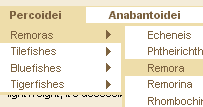

Son of Suckerfish Dropdowns
Tuesday 18 May, 2004 ( 8:47PM GMT)
 Son of Suckerfish Dropdowns is a new article from myself and Dan Webb, explaining how to apply Suckerfish Dropdowns in a vastly improved way over the original article published in A List Apart.
Essentially, a Suckerfish Dropdown is a dropdown menu built with CSS with a little bit of JavaScript bolted on to accommodate Internet Explorer, which doesn't support the :hover pseudo-class on anything other than links.
The original method was already lightweight, accessible and cross-compatible, but this method is even more so. It now works with multiple-level dropdowns, the JavaScript that mimics the :hover pseudo-class is just 12 lines long, to improve accessibility display: none is no longer used (alternatives may seem easy enough to find, but trust me, this was a real pain to sort out) and problems that were encountered with Opera and Safari browsers have been overcome.
If you can't be bothered with the article, just take a quick peek at the baby at work.
There have been a LOT of headaches trying to figure out the best way of doing this (mostly caused by Opera surprisingly enough), but we're quite confident that it's a damned good way of applying dropdown menus if you ever have the desire or need to do so and we can't think of a better way of doing it.
This article is part of a collection of seven Suckerfish articles, the rest of which will all be published in one go quite soon. So stay tuned.
Comments
Comment 2
So what does "chucking a wobbly" mean?" Having a tantrem.
What was the problem with Opera btw? Are these problems fixed in the latest release? I noticed that Opera doesn't render the popups as smoothly as Firefox.
So said Hemebond on Tuesday 18 May, 2004 at 10:55PM GMT.
Comment 3
If only it worked on mac 9.2 with IE ... Brilliant piece of work.
So said on Tuesday 18 May, 2004 at 10:58PM GMT.
Comment 4
I love it! Beautiful.
It didn't work in Konqueror on Linux KDE but that was the only browser my windows and linux machines which did not work.
So said Peter on Tuesday 18 May, 2004 at 11:15PM GMT.
Comment 5
I almost thought "How dare you make it not work with Opera"!!
Seriously though, Opera has won me over. Now if would maybe overtake IE in DOM support that would be sweet.
So said Dante on Wednesday 19 May, 2004 at 2:41AM GMT.
Comment 6
Oh, it causes horizontal scrollbars in Opera 7.23.
I'm working on a "reasons why I love Opera list" (maybe even a "Why Opera makes Mozilla look like it's a sux0r" list).
So said Dante on Wednesday 19 May, 2004 at 2:45AM GMT.
Comment 7
In the javascript you write to use
replace(new RegExp(" sfhover\b"), "")
when it should be
replace(new RegExp(" sfhover\\b"), "")
I'm gueesing its a typo since your demo works fine. Took me ages to work out why the menus didn't disappear in IE on the pc.
Otherwise its all very cool
So said Ben on Wednesday 19 May, 2004 at 8:19PM GMT.
Comment 9
Yes, sorry Ben, don't know how that slash got lost there. It was in the original code.
k, what happens on Safari one? We've only got minimal access to Macs.
So said Dan Webb on Thursday 20 May, 2004 at 9:35AM GMT.
Comment 10
I only wish the parent menu items could be closer together. No matter what I try, it seems I have to specify a width. The menu I want to use it on is too big to specify a width. I'd rather leave out a width and add padding.
Other than that, it looks great.
So said Kim Siever on Thursday 20 May, 2004 at 3:58PM GMT.
Comment 11
Yup - no workie in Safari 1.0.2 -- particularly the "prettied-up" version.
So said Jason Ely on Thursday 20 May, 2004 at 9:24PM GMT.
Comment 12
Looks like PPK really hates this:
http://www.digital-web.com/articles/separating_behavior_and_presentation/
Once again PPK writes an excellent article that are my thoughts exactly.
So said Dante on Friday 21 May, 2004 at 12:13AM GMT.
Comment 13
Safari 1 seems to cope fine with the horizontal menus, but not your vertical one, where the submenus appear at the top of the window. (I'm using OmniWeb 5 beta as a way of testing Safari 1.0, since it uses that earlier web engine.) A fix to this would be brilliant. (Along with one for IE 5 Mac?)
So said Hugh Todd on Friday 21 May, 2004 at 7:50AM GMT.
Comment 14
Some brief tests of
http://www.htmldog.com/articles/suckerfish/dropdowns/example/vertical.html
Win IE 4 - only the 1st level menu items display and theyre very widely spaced
Win IE 5.01 - on mouseover the menu jumps all over the place
Win IE 5.5 - Works fine
Win IE 6 - works fine
Still a laudable piece of work but the individual decision to not have a working menu for IE 4/5 and design for the future must be made.
So said Neerav on Friday 21 May, 2004 at 8:04AM GMT.
Comment 15
Thanks very much for the comments so far.
Neerav - I can't replicate the problem in IE5.0 - it works fine for me. I'm not sure about IE4, but I'm not sure it needs to be a serious practical consideration any more (besides, regarding the wideness, this can obviously be controlled with CSS and if the only the top-level list displays then at least there should be a viable navigation option).
From what I understand, this works in Safari 1.2, but clearly not in Safari 1.0. I can't figure out why the problem of menus appearing at the top of the window should occur, but I'll attempt to look in to it (how would someonw without a Mac, let alone Safari 1.0 go about doing that...? If someone can figure out this problem, let me know).
As for IE Mac, does anyone use that? Exactly what's the problem? (If you come across browser compatibility niggles, please be as detailed in your explanation as possible so that we can try to work it out).
As for the PPK article that Dante points out - it's interesting. I haven't read it before. I could take up a lot of the criticisms laid out there, but the bottom line is that Suckerfish Dropdowns are CSS driven with a pinch of JavaScript to simply mimic the :hover pseudo-class. It's a good practical option. The best as far as I'm (and others are) concerned.
So said Patrick on Friday 21 May, 2004 at 8:46AM GMT.
Comment 16
Neerav, yes, I can replicate the IE 5.01 error and it is fixable with a little bit of box model hackage and minor CSS changes but really I'd like to make the point that the really meat of the article is the actual technique rather than our specific CSS implementations. In practice people are going to have to write their own CSS implementations on a per project basis. We are only giving you a clue as to how you might go about writing the CSS really. We did however spend a fair amount of time getting the main horizontal menu CSS to work because we though it would be valuable. The vertical menu really was just a quick example though.
On PPK's article, he has got some interesting points (about IE no-script accessiblity) but really, I wouldn't call it complicated at all essentially it's just a tiny little patch to help IE until it can support :hover properly. No, it isn't seperating behaviour from presentation in the way PPK is decided is a good idea but practically Im not sure that this really matters. Yes, he could write a menu that worked with JavaScript and had some kind of backup for no script browsers but fact is that it would end up more compilcated and much bigger in file size.
What Suckerfish is is a valid, extremely compact and practical method of implementing something that has traditionally been a pain to implement and while it would be nice to seperate out everything very neatly in practice Suckerfish is a nice little solution.
So said Dan Webb on Friday 21 May, 2004 at 10:48AM GMT.
Comment 17
To address the IE 5 Mac problem - if you want to make it work in IE 5 Mac you need to switch over from using window.attachEvent() to using the old window.onload method so you would change:
if (window.attachEvent) window.attachEvent("onload", sfHover);
to:
if (document.all&&document.getElementById) window.onload=sfHover;
That should get it going again...there are a few obvious disadvantages to this though so I'd advise against it unless you REALLY care about IE 5 Mac.
So said Dan Webb on Friday 21 May, 2004 at 11:59AM GMT.
Comment 18
The next challenge? Slippery Suckerpup Sliding Menus.
http://www.youngpup.net/2001/ypslideoutmenus/examples
And after that? Speedy Suckerpup Sliding Pre-load-less Rollover!
http://www.pixy.cz/blogg/clanky/cssnopreloadrollovers/
That work in IE 3. Ha!!
So said David on Friday 21 May, 2004 at 12:44PM GMT.
Comment 19
Mac IE 5.2.2 OS 10.3 doesn't work
They are just text, the hand shows up but *nothing* happens.
So said Suzanne Wright on Sunday 23 May, 2004 at 6:40PM GMT.
Comment 21
For Safari, you could try wrapping the first levels in a relatively positioned div. I had a problem with a similar setup which uses dynamically generated unordered lists up to five (! don't ask) levels deep and solved it by doing that. And, if I remember, I had to set the style in the tag, not the stylesheet for some reason. Now just have to get rid of the white space for IE. Anyone have a script for that?
NIce solution.
So said Tim on Monday 24 May, 2004 at 8:11PM GMT.
Comment 22
Why do you use w\idth:
Is this a shorthand message to yourself that you are trying out some different sizes or is this a browser hack?
I was getting ready to remove some of them but I thought I'd ask first.
I am putting together an intranet site as a test bed for launching a new all-css site for my new job. I was looking at the brainjar dropdowns but this is a much cleaner approach. Thanks for the work you've done.
So said Ted on Monday 24 May, 2004 at 8:32PM GMT.
Comment 23
Ted - Usually w\idth is used as a Simplified Box model Hack for IEWin 5.x. See here: http://css-discuss.incutio.com/?page=BoxModelHack
So said Mike on Monday 24 May, 2004 at 8:40PM GMT.
Comment 24
How might I deal with putting each navigation item in a table cell? The moment I break the list and try to make 3 lists (3 primary navigation links) instead of the one ul, IE chokes and only displays the first dropdown. My design requires that each navigation menu live inside a table cell, but lists cannot span multiple table cells. Any suggestions?
So said Adam on Monday 24 May, 2004 at 11:13PM GMT.
Comment 25
SuckerFish dropdown examples did not work at all in IE5.2.2 for the mac. The page held together and looked good but no dropdown function.
Netscape 7 and Safari 1 on the mac worked great!
So said marshn on Tuesday 25 May, 2004 at 5:49PM GMT.
Comment 26
Dropdowns don't appear to work on Netscape 6.1 on windows.
So said John on Tuesday 25 May, 2004 at 11:18PM GMT.
Comment 27
hi,
I am trying to align submenus into horizontal but I cant do it because of the left positioning in #nav li:hover ul, #nav li.sfhover ul {.
I can get left aligned relatively to first menu item. I can ofcourse do it with absolute position but does any CSS expert know if I can do this in relative positin to first node in list?
Something like this:
Home Products News
Product1 Product2
So said JP on Wednesday 26 May, 2004 at 9:35AM GMT.
Comment 28
The one thing I like about this approach is that Google likes it. I don't think Google is going to grok just any old JavaScript DHTML dropdown menu implementation. And if those menus are the only way to view content on your site (yeah, that's ANOTHER can of worms), then big chunks of your site could be invisible to search engine indexing. Suckerfish menus don't have that problem.
So said Jeffrey Schrab on Wednesday 26 May, 2004 at 7:55PM GMT.
Comment 29
Does anyone have a fix for the use of the suckerfish dd over an iframe in Mozilla? They do not work with the current implementation.
So said andrew maddox on Tuesday 1 June, 2004 at 2:33PM GMT.
Comment 30
Ok the original article saved me a lot of stress...to know how to achieve the effect without extensive scripting or markup.
Now using CSS it comes easy, but my stress is coming back as i needed to make a menu ( similar to macromedia's but with CSS ) for a project.
So i fired up the old suckerfish and in 5 minutes, i was working the way i wanted..........in firefox.
20 minutes i had it working in IE 5+......not Opera.
after almost an hour i decided to try the new suckefish tech, to slide out the second-level items ( left: -999em ) and
i have ' my-almost-macromedia-without -the -flash -suckerfish -menus '.
I feel that Browser support is really determined for what you & you're client's target audience is. In my cae the target audience is people with a dsl or faster connection. So naturally i design for modern browsers .
The suckerfish is trully are unique tech, but as Dan has said-
" We are only giving you a clue as to how you might go about writing the CSS " ,you really have to find you're own solutions for what you're working on.
-peace
So said Steven on Wednesday 2 June, 2004 at 6:09AM GMT.
Comment 31
How do you handle the menu overlaying select boxes?
So said Stevie Lee on Friday 4 June, 2004 at 4:30PM GMT.
Comment 32
Sorry, I should have asked, "How do you handle select boxes that show through a drop menu?"
So said Stevie Lee on Friday 4 June, 2004 at 5:27PM GMT.
Comment 33
What part of the css is making the navigation jump all over the place in IE 5/WIN?
So said Alexis on Friday 4 June, 2004 at 7:38PM GMT.
Comment 34
I am no expert, in fact quite the opposite, but have had pop out menus working solidly with Opera and Mozilla for a few months now at "http://www.mouldingname.info/home.html".
I have no clue about Javascript and would like to know if the 12 line js can be applied to my site. In the 12 lines there is "this.className" three times. I suspect I replace this with something, but EXACTLY what? Also do I need something in the head to enable the javascript?
Sorry to be clueless about Javascript but I've had a look at a book and it just does my head in. I am not the programming type I guess!
So said Peter on Friday 4 June, 2004 at 10:21PM GMT.
Comment 35
I'm trying out these dropdowns on a new site of mine, but I can't get it to work in IE6. It is working fine in Mozilla Firefox 0.9RC, but the dropdowns don't appear in IE6. Any ideas? A test version of the site is available at http://www.cadmium.com.au/clients/sites/CAD046/menu-vertical.htm
So said Alex on Monday 14 June, 2004 at 2:29AM GMT.
Comment 36
Oh, I should also mention, its not working in Opera either - have I done something wrong?
So said Alex on Monday 14 June, 2004 at 2:30AM GMT.
Comment 37
Me again, just ignore posts 36 & 36, the problems were minor typos in the JavaScript. I've sorted it out now. Excellent script by the way! :-)
So said Alex on Monday 14 June, 2004 at 2:46AM GMT.
Comment 38
Has anyone developed a horizontal navigation using images that work with these dropdowns? I have an unordered list that has the parent links replaced with nice images in the CSS but it doesn't display the dropdowns. Any ideas?
So said Gary Moyle on Monday 14 June, 2004 at 12:37PM GMT.
Comment 39
So, it doesn't work in Safari 1.0.2 or in IEMac. Not exactly "cross-compatible" I guess.
So said Brad on Tuesday 15 June, 2004 at 11:15PM GMT.
Comment 40
-------
Jun 15, 2004
How do you make the items that are "dropping down" (ONLY the "dropping down" items - not the top level) appear in a horizontal row rather than a vertical list?
Adding the following style did not do it:
#nav li ul li {
display: inline;
}
Thank you in advance.
-------
So said Ambassador on Wednesday 16 June, 2004 at 3:34AM GMT.
Comment 41
When I input an asian font Mozilla always uses it's default font regardlessly. Puting the character code in meta tags corrupts the whole thing of course! Does anyone know how to fix this?
So said Terry on Sunday 20 June, 2004 at 7:10AM GMT.
Comment 42
Wonderful menuing system but I cannot come up with a way to prevent the dropdown menus from hiding behind an iframe located just beneath. I've tried z-indexing in various ways, thought about automatically resizing the iframe but that's a bit cheesy...the dropdown menus "should" be able to show up on top of the iframe, yes? IE6, Winxp.
So said Steve on Tuesday 22 June, 2004 at 4:54PM GMT.
Comment 43
yeah - no go on IE mac for any of these drop downs. any ideas why?
works great in Safari 1.22, Firefox and Opera though. (Mac)
So said Luke Perman on Wednesday 23 June, 2004 at 9:24AM GMT.
Comment 44
I don't know any js. Could you explain the disadvantage of using the replacement script you propoposed:
if (document.all&&document.getElementById) window.onload=sfHover;
for Mac IE compatibility? I'd like these folks to be able to view the lower level menu but was concerned by your statement above. It seems to work fine in Win IE, NN, Safari, Firefox with this script (no chance to check with my Mac IE users yet).
I'm also bumbing up against a cascade issue with Win IE 6. Styling the top level with {text-align: center;} has resulted in all of the lower level list dropping form the center rather than even with the left edge. Perhaps I screwed something else up. Things work fine in NN, Firefox, Safari 1.2.
Great work! I look forward to the upcoming articles!!
So said Andrew on Thursday 24 June, 2004 at 10:23PM GMT.
Comment 45
The js fix in mac ie adds cursor "?" menu comes up hazardly and then disappears completely.
Look better without it, at least the first level works.
So said maz on Sunday 27 June, 2004 at 8:36AM GMT.
Comment 46
Not working in Mac IE is the only thing that prevents me from using. Any idea why the original suckerfish works in Mac IE (), but this doesn't? Also maddening is the fact that Eric Meyer's CSS-Driven Drop-Down Menus from "More Eric Meyer on CSS" works in every browser I care about covering except Mac IE -- with no mention of the exception. Mac users are probably much quicker to move to good browsers, but I can't ignore Mac IE5.2.
So said Lowell Allen on Sunday 27 June, 2004 at 8:18PM GMT.
Comment 47
replace(new RegExp(" sfhover\b"), "")
when it should be
replace(new RegExp(" sfhover\\b"), "")
So said sron on Tuesday 29 June, 2004 at 10:42AM GMT.
Comment 48
Like #29 is there a fix for the use of the dropdown over an iframe in Firefox (Mozilla) They do appear but won't go away when you step out of the dd. The dd disapears when you leave the iframe.
So said Shinigami on Wednesday 30 June, 2004 at 10:55PM GMT.
Comment 49
I have been fascinated by this topic, and have been keen to get the
vertical menu (
http://www.htmldog.com/articles/suckerfish/dropdowns/example/vertical.html
) working on various Mac browsers. Here are my comments/questions,
and a summary of my findings. WARNING: I really don't have much idea
what I'm talking about - I know little CSS and less Javascript, so
please be gentle, but please do comment!
Javascript
1) Duplication: The sfHover function is triggered even if the CSS
works. I am not sure if this is a problem at the moment, but it
seems to me to be asking for trouble at some stage. It would be
better to test for an IE browser (and hence a browser in which the
CSS does not work) and trigger the javascript only if one is
found. If the browser is not IE, there is no need for the
javascript because (as far as I am aware) the CSS works on
everything else. A good test for IE is to see if the document.all
property is supported.
2) Mac IE5: As mentioned in earlier comments, window.attachEvent does
not work in IE for Mac - it is not implemented at all. The best
(only?) way to deal with this is to use an onLoad event. But this
may cause problems (see comment 17) - any earlier assignment to
window.onLoad will be overwritten, and javascript elsewhere on the
page may be broken. Also, window.onLoad can be very slow (see
http://simon.incutio.com/archive/2004/05/26/addLoadEvent for comments).
The best solution therefore is (a) test for IE; (b) if not IE, no
need for any more javascript; (c) if IE, use window.attachEvent if
possible, else use window.onLoad, taking care not to clobber any
existing onLoad code.
Here is my suggestion:
if (document.all) { //MS IE
if (window.attachEvent) window.attachEvent("onload", sfHover);
else { //IE 5.2 Mac does not support attachEvent
var old = window.onload;
window.onload = function() { if (old) old(); sfHover(); }
}
}
3) WebKit: Safari 1.2 has no problems rendering the vertical menu
example, but browsers using earlier versions of WebKit such as
Safari 1.0 (used by OS X.2), OmniWeb (after 4.5, I think) and ?
Konqueror do not work. It seems that the problem is caused in the
#nav li selector. If 'position: relative' is removed, everything
seems to work fine. I have absolutely no idea why this is. So
this works in OmniWeb 4.5 and should work in Safari 1.0 and
Konqueror (I think - testers please!). It doesn't seem to break
anything else though:
#nav li { /* all list items */
/*position : relative;*/
float : left;
line-height : 1.25em;
margin-bottom : -1px;
width: 11em;
4) That last comment was a lie. The rendering of second level lists
in Safari 1.2 (used in Mac OSX.3) is thrown out slightly. Some
borders disappear, and some remain when the menu has gone. Adding
some right and bottom padding as follows cures the problem (and
this time really doesn't seem to break anything else):
#nav li ul { /* second-level lists */
position : absolute;
left: -999em;
margin-left : 11.05em;
margin-top : -1.35em;
width: 11.05em;
padding-right: 0.5em;
padding-bottom: 0.5em;
}
5) I can't see what the point of the #nav li ul ul selector is, so I
deleted it. Am I missing something?
6) Er, that's it.
Here's the whole <head> tag from the vertical menu page (assuming that my post doesn't get mangled).
<head><title>Suckerfish Dropdowns - Vertical</title>
<style type="text/css">
body {
font-family: arial, helvetica, serif;
}
#nav, #nav ul { /* all lists */
padding: 0;
margin: 0;
list-style: none;
float : left;
width : 11em;
}
#nav li { /* all list items */
/*position : relative;*/
float : left;
line-height : 1.25em;
margin-bottom : -1px;
width: 11em;
}
#nav li ul { /* second-level lists */
position : absolute;
left: -999em;
margin-left : 11.05em;
margin-top : -1.35em;
width: 11.05em;
padding-right: 0.5em;
padding-bottom: 0.5em;
}
#nav li a {
width: 11em;
w\idth : 10em;
display : block;
color : black;
font-weight : bold;
text-decoration : none;
background-color : white;
border : 1px solid black;
padding : 0 0.5em;
}
#nav li a:hover {
color : white;
background-color : black;
}
#nav li:hover ul ul, #nav li:hover ul ul ul, #nav li.sfhover ul ul, #nav li.sfhover ul ul ul {
left: -999em;
}
#nav li:hover ul, #nav li li:hover ul, #nav li li li:hover ul, #nav li.sfhover ul, #nav li li.sfhover ul, #nav li li li.sfhover ul { /* lists nested under hovered list items */
left: auto;
}
#content {
margin-left : 12em;
}
</style>
<script type="text/javascript"><!--//--><![CDATA[//><!--
sfHover = function() {
var sfEls = document.getElementById("nav").getElementsByTagName("LI");
for (var i=0; i</script></head>
Please let me know if it works for you (or doesn't).
So said Lawrence Akka on Thursday 1 July, 2004 at 11:15PM GMT.
Comment 50
Oops - seems to have got mangled slightly [Howabout a preview button?]. Should have ended like this (from just after the </style> tag:
<script type="text/javascript"><!--//--><![CDATA[//><!--
sfHover = function() {
var sfEls = document.getElementById("nav").getElementsByTagName("LI");
for (var i=0; i<sfEls.length; i++) {
sfEls[i].onmouseover=function() {
this.className+=" sfhover";
}
sfEls[i].onmouseout=function() {
this.className=this.className.replace(new RegExp(" sfhover\\b"), "");
}
}
}
if (document.all) { //MS IE
if (window.attachEvent) window.attachEvent("onload", sfHover);
else { //IE 5.2 Mac does not support attachEvent
var old = window.onload;
window.onload = function() { if (old) old(); sfHover(); }
}
}
//--><!]]></script></head>
So said Lawrence Akka on Thursday 1 July, 2004 at 11:19PM GMT.
Comment 51
iframes and select menus...
As far as I know there are two ways to get around these showing through everything.
1. Hide them with javascript when you need to show something over the top.
2. You cover the iframe / select with another iframe behind the content you want to show... so in this case i guess you would have a around your then you have two layers positioned on top of each other within the . The top layer is the and the layer underneath is an iframe that covers whatever is beneath it. (I found the idea on a website done in black and red and really hard to read can't rememeber the url.)
I used the iframe method in a prototype of a web app - and it did work perfectly - even though its a bit of nasty work around... I just created iframes on the fly whenever i needed them and then got rid of them. I haven't got the complete code anymore, but i managed to find this bit...
var xiframe
var oiframe = ""
function show_div(xdiv)
{
if(oiframe != "")
{
hide_div(oiframe);
}
xiframe = document.createElement("iframe");
xiframe.setAttribute("id", "xifone");
xiframe.setAttribute("frameborder", "0");
document.getElementById(xdiv).appendChild(xiframe);
show_menu(xdiv); // function to show and position parent layer
xiframe.style.width = "100%";
xiframe.style.zIndex = 2;
xiframe.style.height = "100%";
xiframe.style.postion = "absolute";
oiframe = xdiv;
}
function hide_div(xdiv)
{
// hide the div and move it and delete the iframe
document.getElementById(xdiv).removeChild(document.getElementById("xifone"));
//document.getElementById(xdiv).removeChild(xiframe);
hide_menu(xdiv); // function to hide parent layer
oiframe = ""
}
So said John Elliott on Friday 2 July, 2004 at 1:36PM GMT.
Comment 52
Hi Lawrence (#49 / #50)!
I am currently working on implementing your solution, but it doesn't seem to work under Mac 5.2. Unfortunately I am not able to test it myself (no macs around here), but what I hear from external testers, it doesn't seem to work on thei mac-boxes.
Linux: Galeaon and Mozilla works like a charm...
For those of you curious:
www.daszeichen.ch/client/s/navD_suckerfish.html
I would be thankful, if one of you mac users could have a look at it... (there is a drop-down menu under 'Auf einen Blick...')
cheers bernard
So said bernard on Friday 2 July, 2004 at 2:50PM GMT.
Comment 53
Bernard (#52)
You're right. It doesn't work on Mac IE5.2. There is a different problem on Omniweb 5, which means there is probably also a problem on Safari 1.0 (ie OSX.2) and Konqueror. It works fine on Safari 1.2
Well, I really don't know what I'm doing, but trial and error suggests the following:
1) The IE problem is caused by the div#s-header .invisible selector. If you remove it completely, or replace the display:none with something else, it all works fine. I don't know why.
2) The Omniweb problem is caused by the float:left in the #s-dropdown li selector. If you remove the float:left, it works.
Lawrence
So said Lawrence Akka on Friday 2 July, 2004 at 11:44PM GMT.
Comment 54
Hello, first, thank you, thank you, thank you for making such a great menu, am actually making it work. I'm sure the questions I have are in the stupid range, but I don't know and can't figure them out either due to age (older than dirt) or brain function (effects of multiple strokes). I am trying to redo a site I did for a non-profit organization as my contribution to their effort. The original site (my first attempt at doing this) is a mess, and is done in frames, etc. am trying to redo it in css, etc. and make it as great as I can. I have uploaded the page to the url listed below in case anyone has time or the inclination to assist me.
My problems are:
1. there is too much space between the logo area and the nav. bar, am sure it is something simple, but don't see it.
2. problems with the nav bar -
. if I resize the text thru the browser to larger or largest - it goes off the screen, is there a way to keep it the same size regardless of the text size used?
. is there a way to center it?
3. under the "body-font" I have no idea what the "78%/1.5 means - help.
4. There are several style items I don't think I need, but am afraid to remove them as I am just learning all this, and right now it works - lol.
p#smurf
#smurf strong
h1
#scaffolding
#scoffolding a
#scaffolding a: hover
5) Is there a way to make the logo section and navigation bar "static" have read a lot and tried several things, but none of them seem to work correctly.
6) Could the styles be put on a separate page and use the @import statement?
I realize there is still a long way to go before I have this right, am going to remove the "Mission Statement" and put it on an intro page for one thing. Just thought it would be best to get one page correct, before adding all the rest.
Thank you in advance for any assistance, am sorry am not at the competence level most of you are, but am trying hard and learning as fast as I can. Marilynn
So said Marilynn on Saturday 3 July, 2004 at 6:21AM GMT.
Comment 55
Well, when I walked away from it for awhile, I figured out the answers to #1 and #4, duh!
Thanks again, this is great.
So said Marilynn on Sunday 4 July, 2004 at 8:54AM GMT.
Comment 56
I have a possible solution for allowing the top level items of horizontal menus to be as wide as they want. I need to do this because my the text and links for my menus are generated from a database. Hope this is useful for others.
I found that if I removed the widths then the top level items would only use the space they needed IN NETSCAPE but would use the entire page in IE. However if the width is set to 1px for all top level LI items then IE will get it right and NETSCAPE will have them all sitting on top of each other. To get around this I added an extra line in the javascript that says, basically, that every top level LI item should have a width of 1px set on it - But only if the browser is IE. Seems to work in IE/pc, NS/pc, IE/mac (not completely briliant but good enough), NS/mac and Safari. Adding the "white-space:nowrap" forces the text to stay on the one line.
My ul list is structured so that every li item has a href that fills the availble space of the LI
First the javascript for setting up the menu needs to be altered:
//--------------------------------------------
sfHover = function() {
var BUA = navigator.userAgent;
var BIE = BUA.indexOf("MSIE");
var BIsIE = BIE>=0;
var sfEls = document.getElementById("mainNav").getElementsByTagName("LI");
for (var i=0; i<sfEls.length; i++) {
sfEls[i].onmouseover=function() {this.className+=" sfhover";}
sfEls[i].onmouseout=function() {this.className=this.className.replace(new RegExp(" sfhover\\b"), "");}
//all is normal till here. If we're using IE then this tells any first level item to have a width of 1px
if (sfEls[i].parentNode == document.getElementById("mainNav") && BIsIE) {
sfEls[i].style.width = '1px';
}
}
}
//------------------------------
These changes should occur in the style sheet
#mainNav a {
/* add these */
white-space:nowrap; /* forces the text to stay to one line */
padding-left: 8px; /* some space either side */
padding-right: 8px;
/* width : 10em - remove this*/
}
#mainNav li {
/* width : 10em - remove this*/
/* add this */
white-space:nowrap; /* forces the text to stay to one line */
}
/* beyond here is what i did to suit my requirements.
#mainNav li ul li {
width: 100%; /* so it fills the available space */
}
#mainNav li ul li a {
/* remove the width */
}
hope this helps others and possibly gets included in a future version.
Steven Harrap.
So said Steven Harrap on Friday 9 July, 2004 at 9:01AM GMT.
Comment 57
I was wondering about if you wanted to put a border around the so it would look like the traditional dropdowns such as in best buys websitd. how do you get it so there isn't the extra border from each other touching.
So said Dan Shields on Saturday 10 July, 2004 at 2:34AM GMT.
Comment 58
Hi,
Thank you. This was a huge help! I've tested on Windows with Netscape7, IE6, Opera and all worked great.
I haven't seen anything mentioned about Netscape6 -- when i tested it, everything rendered correctly but the dropdowns didn't function. Is this a known issue? or just me? I would it would have been mentioned by now if others had troubles too.
Thanks,
Mr. Joe
So said Mr. Joe on Sunday 11 July, 2004 at 3:34AM GMT.
Comment 59
Styling the top-level menu: Andrew mentioned above that he was having trouble centering the top-level buttons because it caused IE6 to drop the menus down from the center of their parent buttons instead of aligned to the left.
I had the same problem for several days as well. Among other things, I found that removing the width: specifications for #nav li, and just leaving the with: specified in #nav a, fixed the problem in IE. But, it also caused the menus to break in Opera; the main buttons stacked vertically instead of in a neat row.
I finally found a solution tonight: apply the text-align: center to #nav a, not #nav li. Solves the problem.
Now if I can just figure out why 2/3 of my menus are refusing to disappear on mouse-off in Mozilla and Firefox ...
So said IdahoEv on Sunday 11 July, 2004 at 9:22AM GMT.
Comment 60
When I place the javascript in a separate .js file, the cascading submenus no longer appear in IE 6. Is this just me?
So said Everett Lindsay on Sunday 11 July, 2004 at 7:39PM GMT.
Comment 62
Hi. I liked this program a lot! The dropdowns are really important for every site! Keep working hard! :-)
So said Anita on Monday 12 July, 2004 at 2:14PM GMT.
Comment 63
here's a potential mac IE 5.2/OS X fix...
from my tinkering, i think that when patrick and dan changed the "display:none" property of the nested ul to "left:-999em" to fix the dropdowns in opera they b0rked mac IE....
i changed it back to "display:none" and "display:block" (instead of "left:auto") on the ul:hover and now it's working for me in IE 5.2.
So said sabih on Tuesday 13 July, 2004 at 4:03PM GMT.
Comment 64
Is there a way to change one of the 's to have different coordinates when you hover over? (different from the other 's, I mean). For instance, I beleive this part determines the relationship of the submenu to it's main menu :
#nav li ul ul {
margin: -.15em 0 0 9em;
}
on one of te 's I want to have the submenu fly out to the left, and not the right, but I am not sure how to do this in CSS/html.
So said Bruce Gilbert on Tuesday 13 July, 2004 at 8:30PM GMT.
Comment 65
I couldn't say how much I appreciate this innovative technique. I am currently implementing this
to accomplish my level 4 drop-down menu system for my Intranet. I had to maintain over 700
training and report documents and used heavy javascripting codes. It was very difficult for
low-level managers to add or subtract from our web site. With this innovative technique, it is
"dumbified" down for them, so much easier to train them to do on their own! Wish IE could
catch up in CSS world as much as any other browser did. If there is any new techniques
much more simplier than this (I seriously doubt it anyway) I would like to know. :)
So said Scott Hamm on Thursday 15 July, 2004 at 6:39PM GMT.
Comment 66
What if you want your top level menu items to be evenly spaced? Because the text is different for each menu item it won't work in a set width box? Do I have to make a class for each top level item in a different sized box dependent upon the text in it?
Thanks
So said Deb on Thursday 15 July, 2004 at 7:09PM GMT.
Comment 67
Please do let me know when/if anyone ever discovers a solution to the Netscape 6 for PC failure.
So said Everett Lindsay on Friday 16 July, 2004 at 5:42AM GMT.
Comment 68
In the example, the submenus always cascade to the right of their parents. Is it possible to modify the CSS such that some top level menus could have their submenus cascade to the left of the parent?
So said Mitch Sacks on Friday 16 July, 2004 at 3:32PM GMT.
Comment 69
Hey, I am having a little bit of trouble with the menu. I am doing a single level menu. I am having problems with the width and the high of the boxes in the drop down menu. Is there any way to specify it to make it independant from the width/heigh of the top menu?
So said andy on Monday 19 July, 2004 at 5:00PM GMT.
Comment 70
Brilliant! I've modified it so that a single-level menu will drop down when hovering over an image.
It works in Mozilla, which lends full support to the hover: pseudoclass. But I can't figure out how to modify the javascript to nudge IE to do the same. Any thoughts?
So said Mark Peal on Tuesday 20 July, 2004 at 12:05AM GMT.
Comment 71
Hey is there any way to specify the menu to open up vertically instead of down? it would help because there are only so many items you can have before you have to scroll. Also no one answered my question about adjusting the width/ height of the hover boxes
So said andy on Tuesday 20 July, 2004 at 2:24PM GMT.
Comment 72
I found an answer to my own question (#70) about a dropdown when hovering over an image. In brief, I made a <div id="nav>, then another inside it, <div id="inside>. A linked image goes there, followed by the menu <ul><li> . . .
The styles refer to #nav, #nav #inside ul, and so on. The javascript is changed to getElementsByTagName("DIV")
The result is at http://www.psquaredtech.com/dropdown.
So said Mark Peal on Tuesday 20 July, 2004 at 10:04PM GMT.
Comment 73
Hey, Dan (#57)~
A solution to parallel borders touching each other is to style three sides in the <ul> and the fourth side in the <li>. Example:
ul {border: 1px solid black; border-bottom-style: none;}
li {border-bottom: 1px solid black;}
The <ul> becomes a shell that draws the top border and extends the left and right as far down as they need to. The <li> draws the bottom border for each menu list item, including the bottom of the shell.
So said Mark Peal on Wednesday 21 July, 2004 at 3:25PM GMT.
Comment 74
Good work,
but it only works with the mouse, not for keyboard navigation. You can navigate thru the first level but thats it, no dropping down of the submenu :-(
=> Not useable for people that can't or don't want to use a mouse. Has anyone an idea how to make it work?
So said Jens on Wednesday 21 July, 2004 at 7:40PM GMT.
Comment 75
Is there an easy way to get a drop down menu to work over an IFRAME? I'm making an intranet and it makes uses of many iframes and this creates a pretty big problem. Thanks in advance.
What is funny, is Safari on Mac it works but not Mozilla or Firefox (PC or MAC).
Is there a way to report this as a bug to Firefox?
So said Marc Pope on Wednesday 21 July, 2004 at 10:25PM GMT.
Comment 76
I have the menu working really nice in IE, however, in Mozilla/Firebird, all levels of the menu stay open. Any thoughts?
So said Michael on Thursday 22 July, 2004 at 12:24AM GMT.
Comment 77
This is a really great technique. I tried my best to convert the CSS to work with several, differing width graphical buttons. I think I pulled it off okay. Take a look.
http://members.cox.net/williamsray/toms/TOMS2.html
In fact, I'd like to see Patrick and Dan write a tutorial on using this technique with graphics of differing sizes like my example. I'm pretty they could find a much better way of implementing it.
Back to my example page, I can't get the rollovers to work in IE. Will someone help me with the JavaScript? Patrick or Dan, care to take a look?
So said Ray Williams on Tuesday 27 July, 2004 at 1:53AM GMT.
Comment 78
Thanks for the article.
I was wondering if there is a way to put the menus in a file external to the HTML files?
With good CSS you can change the look of a whole site by changing just one or two files. With the menu implementation here you would have to edit EVERY HTML file in the site to make a change to the menu.
Also, the entire menu system code is duplicated on every page.
If it could be made external then site wide changes would be easy and HTML files would be smaller.
I have used a Javascript menu system and each HTML file calls up the javascript. I can change the menus on entire sites by editing a couple of files only. Could this be done with the Suckerfist type menu system?
Any comments?
Mark
So said Mark Smith on Tuesday 27 July, 2004 at 5:34AM GMT.
Comment 79
Great work guys! I would also like to second Ray Williams (#77) comment regarding different widths and use of graphics for the first level. It seems Stepen Harrap (#56) has touched upon a method
However, I gather if it was at all possible, Dan and Patrick would have already found a way to get the widths of the dropdowns to shrink and grow depending on the text within them. Something I just haven't be able to do....yet.
So said skube on Thursday 29 July, 2004 at 1:33AM GMT.
Comment 80
Hi has any one been able to resolve the issue for netscape 6.0?
I get no dropdowns in Netscape 6.0.
Any help would be great.
Thanks
So said si on Sunday 1 August, 2004 at 2:25PM GMT.
Comment 81
There is a suggested fix on the alistapart discussion (page 18 I believe). I tried it on that javascript but wasn't able to get it to work. So no luck there but he does explain why the menus don't work in NN6.
"In the CSS dropdowns, s are styled as block elements whose dimensions occupy the entire that contains them. Consequently, there is no background to hover over, and nothing happens in Netscape 6."
I noticed this too since in my version the li is a pixel larger than the image i used so I would see the menu appear but only around the edges.
I'm rubbish at this syntax stuff but shouldn't there be a way to get the to trigger the rollover?
any thoughts?
So said jaseg on Wednesday 4 August, 2004 at 6:42PM GMT.
Comment 82
something else to think about for NN6: When the menu open as I rollover that pixel border it makes the outer bigger (cause the is in the 'natch) shoving the content of the page down. (the menus i'm using go across)
So said jaseg on Wednesday 4 August, 2004 at 7:08PM GMT.
Comment 83
Referring to message #43 or so and onwards - not sure if this has been resolved yet? This was referring to issues with IE and others - as in menu items not "appearing" or disappearing. One solution is to "wrap" the menu code in a "box" like so:
...menu code...
the CSS part looks like so:
div.lix {
position: absolute;
top: 33px;
padding: 0 10px 0 0;
z-index: 120;
}
don't ask on the technicalities - I don't know. Adjust each of the elements in the above CSS block to suit your particular requirements. I've tried this in both horizontal and vertical menus and its done the job. Never had an issue with firefox and this solution fixed up issues I had with IE6. Don't have a MAC so cannot pass comment. Some else could try and then report back here. HTH
So said rc on Sunday 8 August, 2004 at 3:36AM GMT.
Comment 84
Referring to message #83. This "box trick" also helps with "absolute positioning" of the menu anywhere on the page. You could check out my web site - http://www.rogancoles.com/ - to see what's been done there. There's no guarantee as to the permanence of the pages on this site. BTW - the last line in the above message was meant to read, "Someone else could try..."
So said rc on Sunday 8 August, 2004 at 4:27AM GMT.
Comment 85
Referring to posts #83 and #84 - I've ditched the sons of ... vertical menu and have since replaced it with Nick Rigby's vertical menu found back at the alistapart site. The script here works brilliantly if used horizontally. Had too many issues trying to use it as a vertical menu - as in lining up the various elements so that they worked the same across the various browsers I have here at base. Some of the issues were in the CSS others maybe with the js script. Nick Rigby's solution seems slightly more "portable" and stable at this stage. HTH.
So said rc on Wednesday 11 August, 2004 at 7:46AM GMT.
Comment 86
Übrigens, wenn man im normalen suckerfish dropdown die Zeile
li:hover ul, li.over ul{display: block; }
so schreibt:
li:hover > ul, li.over ul{display: block; }
kann man das Menü mit beliebig vielen Ebenen ausstatten.
Allerdings funktioniert das bei mir nur in Mozilla und Opera.
Der IE streikt.
Vielleicht kann mir jemand helfen?
So said baerbel on Wednesday 11 August, 2004 at 4:24PM GMT.
Comment 88
I'm using the original Suckerfish Dropdown list. I would like to have a horizontal list later on the same page. How can I do that, please?
(The site I'm talking about here is http://www.geocities.com/wtgdirectory.)
Thanks!
So said Rahel on Wednesday 11 August, 2004 at 5:58PM GMT.
Comment 89
This saved my life. I am not a fan of dropdowns, but I have a client that "needs" them. I've been looking for the best way to do it. Thank you so much!
So said Jina on Thursday 12 August, 2004 at 7:48PM GMT.
Comment 90
Hey
This much sound a bit too controllish or perfectionistic but I was wondering if any of you that have used the vertical
version had any problems with dreamweaver in the design view?
The first <li/> is not align with the others. And there is a spave between the one that have second level lists
If you know what I mean is it a way to make them look aligned vertically like the way they look in the browser.
Thanks
So said Henry on Friday 13 August, 2004 at 4:59AM GMT.
Comment 91
Did anyone have an answer for Bruce Gilbert (#64) or did I miss it? I'm trying to figure out how to make my menu fly out to the left as flying to the right makes it run off the page and adds a horizontal scroll bar to the bottom of the page. I'm using IE.
So said peggy on Tuesday 17 August, 2004 at 12:35AM GMT.
Comment 92
External CSS file not working?
I think this is a great technique, but for some reason I can't seem to make it work when I move the CSS defs into an external file and then pull in the defs through @import or link href=
IE6 acts like it never sees the linked style defs...Anyone else see this problem or is it just me?
Thanks!
So said Terry G on Tuesday 17 August, 2004 at 5:16AM GMT.
Comment 93
Ignore the previous post. (of course!) Turned out that either dreamweaver or IE6 was botching the URL for the stylesheet.
"/s_style.css " fails due to the leading slash, for some reason while "s_style.css" works -- even though the file IS in the site root.
Gotta love the net!
So said Terry on Tuesday 17 August, 2004 at 5:20AM GMT.
Comment 94
Ack! Section 508 (a.k.a. W3C WAI). What about keyboard access - are we doomed to using our mice?
So said Yo Mamma on Wednesday 18 August, 2004 at 11:08PM GMT.
Comment 95
A great script,
though there's still a lot of questions and troubles.
... and I'm gone add one (or two):
My first script didn't work 100%. After that I tried the source code of the example page. It contained the same css but just in another order. So placing something like float: left; before or after another css command can make the difference between the submenu showing up or not!!!! (don't know what my old order was, but the example is good. and don't know if it was only IE -yack spit!- or mozilla firefox as well.)
But by changing the order I can't fix the following:
I'm trying to add this to my second level lists (#nav li ul) for IE6 (yack spit!):
background: white;
border: 1px solid gray;
filter: progid:DXImageTransform.Microsoft.Alpha(Opacity=90);
The first and second are okay, in IE and firefox.
The alpha filter also works in IE, but all of a sudden the third level doesn't show up anymore.
Off topic: where would I find an overview of 'moz-...' codes?
Thanx, keep up the good works!
So said G.J. Gommer on Sunday 29 August, 2004 at 11:23PM GMT.
Comment 96
Re #95: I whacked in alpha as a quick test too, with the same results. Not crucial so I dropped it again. It'd be pretty spiffy if it worked tho, I'd be most interested if anyone knows whats up with those 3rd level's dissapearing
So said Dan F on Monday 30 August, 2004 at 12:57PM GMT.
Comment 97
I have a client using Netscape Navigator 6 who didn't bother to tell me they were still using NN6. Sure enough, the dropdowns that I put together for them based on this code doesn't work. And of course, the client refuses to upgrade to a newer browser.
Any thoughts as to what I can do for them?
So said Christian Ready on Monday 30 August, 2004 at 6:51PM GMT.
Comment 98
Found it! Or a workaround.
(Thanx Dan, for trying to help me out.)
Instead of trying to stick background and filter to my #nav li ul, i've put those in my #nav li
That worked and didn't eat my 3rd level.
Christian, why do they refuse to upgrade? Upgrading would (or should, but don't tell them that) mean: improved performance and reduced safety risks (sounds like ie -yuck spit-). So suggestion 1: persuade them a bit more to upgrade. If that fails, you could may be do a browsercheck. If browser=NN6 then load styleswithoutnav.css and load oldfashioned-dhtml-menus.js else just load standard.css
So said G.J. Gommer on Monday 30 August, 2004 at 9:38PM GMT.
Comment 99
Nice! Thanks for that GJ. Following your lead, I put it on the #nav li li, as putting it on the #nav li set a background colour for the toplevel elements which screwed the pooch so to speak. The bit of transparency looks pretty swish I reckon. Thanks again!
So said Dan F on Tuesday 31 August, 2004 at 1:51AM GMT.
Comment 100
Any thoughts on how to get this to work when you focus on the <li> (say, browsing with a keyboard)? I have tried a few things, but can't seem to get :focus to be recognized for the <li>. I would be very interested in seeing this work (it would make it more accessible too).
So said Aaron G on Tuesday 31 August, 2004 at 4:40PM GMT.
Comment 101
I don't know if I'm missing something here, but I've been puzzling over as to how the highlighting is retained on the parent menu items in the pretty version with just:
#nav li a:hover, #nav li.sfhover {
background: #eda;
}
I've been trying to achieve the same effect with a vertical menu but cannot retain the highlighting in parent menus. In your vertical menu version, only the hovered over item is highlighted.
Grateful for any explanation on the first point and any advice on the second.
So said Ray Lyne on Wednesday 1 September, 2004 at 9:59AM GMT.
Comment 102
Okay, I am far from an expert and I used this menu and it works great for IE and Mozilla. When I do add a background image and move to each element it flashes, why is that? It is very annoying. Also, I wanted to have another in my list but it is just embedded in the list. I don't want it to be another drop down. is there any way I can get this to work? I hope that was clear. Like this
List 1
List 2
- List 2.1
- List 2.1
- List 2.3
List 3
List 4
List 5
So said Daniel Shea on Saturday 11 September, 2004 at 10:03AM GMT.
Comment 103
Has anyone found a solution for Adam (#24). I'm having the same issue (and I'm so beginner at this, I'm lost to find a solution, so any help would be greatly appreciated.
I've got three verticle menus running out of table cells (one cell for each menu). The drop out from behind a .gif image. Everything works great in FireFox, but no such luck for IE 6. IE 6 only displays the first menu and not the other two. Check here to see what I've got running: http://www.preima.com
Also, regarding Jens's (#74) comment (and a very thoughtful one at that). Has anyone discovered how to make this menu work through tabing? I've discovered that in fact that tabing is active - it's just not visible. What I mean is, if you tab to the menu title - it's shows as being selected. But, if you arrow down, nothing happens, another tab and the selection disapears, but upon hitting enter I'm taken to the following page.
Lots of questions, any feed back would be great!
So said Todd on Sunday 12 September, 2004 at 4:33PM GMT.
Comment 104
Anyone know how to make the sub menus horizontal also? I'm looking to do it but having trouble sussing it out :)
So said James on Thursday 16 September, 2004 at 12:42AM GMT.
Comment 105
Does anyone know how to make the submenus adjust the width according to the text? Imake it work in IE, but in Firefox the text exceeds the backround.
So said Andy on Thursday 16 September, 2004 at 11:43AM GMT.
Comment 106
Anyone come across a problem with the dropdowns when they roll over headings that use some kind of image replacement? In Firefox, because the list sits above the page content in the code, it sits below it in z-index, and so slips under the title. Then when you move down the list, as you get to the horizontal position of the title, the list thinks it's no-longer being hovered over, and dissapears. I've spent hours changing z-index's all over the place and haven't found the solution yet... =/
So said Luc on Thursday 16 September, 2004 at 4:42PM GMT.
Comment 107
Has anyone been able to change the text color for the hover classes. I have tried adding:
color: #fff;
to the final hover style which specifies the hover background color. The background color can be changed but it seems that the font color cannot.
Next I tried:
#nav a:hover {
color: #fff;
}
This changed the font color on the item you were hovering but didn't effect the parent item (if you were in a sub menu)
Does anyone have any suggestions? I realise that this maybe a CSS problem but it seems to me like it is not working as it should.
(tried in IE 6 (xpsp2) and Firefox 0.9.3)
So said Dave W on Thursday 16 September, 2004 at 5:20PM GMT.
Comment 108
Hey I also noticed that now, after I downloaded SP2, and you preview it from DWMX04 you get a message.
"To help protect your security,Internet Explorer has restricted from showing active content that could access your computer. Click here for more options..."
And would someone will like to coment in comment #90
Thanbks
So said Henry on Friday 17 September, 2004 at 2:14AM GMT.
Comment 109
Re: #90
I would take DreamWeaver's design view as a merely a guide not as what is actually displayed. The only way to do this is to test in each different browser.
So said Dave W on Friday 17 September, 2004 at 4:17PM GMT.
Comment 110
I still have problems in ie 5.2 for mac and I can't test it! I tried the soultions above without success. Does anyone know how to do this without buying an old Mac? I tried installing IE 5.01 on my XP, but it refuses. It seems impossible to uninstall IE6 in XP.
So said Andy on Monday 27 September, 2004 at 6:27PM GMT.
Comment 111
I'm having box model issues with this nested menu. For the life of me I can't figure out the spacing issues with all the nested lists. Anyone have an idea what is going on on this page? Can ya help? (there are other problems on the page...but not affecting the menu.)
http://www.badblood.com/esmPortal/tester_v1.html
Thanks!
So said Shelly on Monday 27 September, 2004 at 8:45PM GMT.
Comment 112
I'm having trouble with the "submenus" staying open long enough to click a link using Mozilla. IE is fine. Any remedy for this?
http://www.charlottes-saddlery.com/test.htm
So said Gulfcoast on Monday 27 September, 2004 at 9:00PM GMT.
Comment 113
QUOTE "I tried installing IE 5.01 on my XP, but it refuses. It seems impossible to uninstall IE6 in XP."
A couple of year ago* an Australian developer found a way to strip IE from the OS and then he packed individual installs of various IE browsers that ran as stand-alone apps.very cool. (* about the time Bil Gates was in court saying he couldnt take IE out of the OS as it was an integral part and therefore not anti -competition).
Try Google, if no luck i have stand-alone IE5.0 and IE5.5 saved somewhere and could make them available on my site.
So said David on Tuesday 28 September, 2004 at 12:44AM GMT.
Comment 114
As in comment #101. I've been trying keep the parent menu highlighted as in the pretty version but with the vertical
menu . I have been playing with but havent be able to achieve it.
Could you help please?!
Thank you
So said Henry on Wednesday 29 September, 2004 at 5:40AM GMT.
Comment 115
David!
I found them on http://www.skyzyx.com/downloads/ Thanks for the tip on searching for "standalone". However, it seems to work tolerably in 5.xx for windows, but my Mac contact still complains.
Have anyone had success on IE 5.2 for Mac?
Something elseI've been struggling with:
To get the top level items evenly spaced, and the sub menu fields to expand according to the length of the text, I ended up making a separate css for Opera.
So said Andy on Thursday 30 September, 2004 at 12:50AM GMT.
Comment 116
In my attempt to make these dropdowns work I have run into one problem. Everything works fine in IE and Mozilla with the drop down itself. My problem is with the href's. Everything works fine in Mozilla, but when I try to follow a link within my drop down structure, I get a forbidden error page.
Any help with this would be much appreciated.
Tiger Valley
So said Brad Pilling on Monday 4 October, 2004 at 6:39AM GMT.
Comment 117
Hi,
I'm trying to implement a database driven 3 level horizontal menu using the great examples you've provided, but have a couple of problems.
1. The level 1 list is to big for the display (200+ entries). How do I modify the css so that the level 1 menu is scrollable, but doesn't affect the level 2 or level 3 menus (i.e they still appear outside the scrolling region for the level 1 menu).
2. The process of displaying the level 2 menu is quite slow. Is that a side effect of having such a large level 1 menu?
Any suggestions would be appreciated.
Andrew
So said Andrew Danieli on Tuesday 5 October, 2004 at 4:18PM GMT.
Comment 118
Though this article is getting old, I have a tip for people who might have had troubles like I had. You see, I had a menu in which some of the parent items weren't links, but since the code depends on the "#nav a" rule to display the menu properly, these items' children displayed wrong. Ack! The solution was to wrap those non-linked items in a span and give the span a class (say, "no-link"), and then add that class to the above-mentioned rule so it says "#nav a, #nav span.no-link" instead.
That's a poor description, but I hope those of you who had a problem like mine will be able to get it.
So said Jordan on Thursday 7 October, 2004 at 5:07PM GMT.
Comment 119
How do you set a timeout for the mouseover? Can anyone give me some hints?
How do i use the setTimeout function for this?
So said Angelo on Friday 15 October, 2004 at 9:30AM GMT.
Comment 120
I apologize if this has already been answered, but I did search this discussion first.
My page has a vertical menu, and I put the css in its own file. In IE, with that little piece of JavaScript (which is also in its own file) the second level ul list only displays on hover, just like the ads say. But in Mozilla/Firebird they are always visible.
BTW - I experimented with the code. I made my own local copy of the example page, and I put the css and JavaScript in their own files. Everything worked fine in both browsers. However I wasn't happy about the width, and while trying to change it, I found that the value under #nav li was not needed.
So said Alvin Orzechowski on Saturday 16 October, 2004 at 6:52PM GMT.
Comment 121
Hello everybody, I'm french and i don't speak good english but i solve the problem when the dropdown hovers over an image.
You simply must to add a z-index here:
#nav li ul {
position: absolute;
left: -999em;
height: auto;
width: 10em;
w\idth: 10em;
font-weight: normal;
border-width: 0.25em;
margin: 0;
z-index: 10; <---------------------------------------------------
}
and it would be work!
If you want more info on this,please see in french : http://mguessan.free.fr/html/menu.html and section : Résolution du problème des listes de choix
there is a link that explain all!
tcho everybody
So said enleve_ton_boubou on Tuesday 19 October, 2004 at 7:13PM GMT.
Comment 122
Hello,
I am working on this menu and I tried to follow the tutorial, but I just keep having problems IE 6. It doesn't dropdown, but it works in mozilla and in netscape. Can someone help me. Here is a link to my test page: http://www.nepeace.com/menu.html and my stylesheet: http://www.nepeace.com/stylesheet.html (I'm working with a separated stylesheets so I copy pasted it into a html file so that you can view it easier.)
Thanks in advance,
Angelique
So said Angelique on Tuesday 19 October, 2004 at 10:11PM GMT.
Comment 123
I have a form on same page as these great menus (Using vertical style, but I image same issue with horizontal drop downs) . . menus fly out on top of form element (select tags) in all browsers but IE, where it appears behind the form element. Z-index does not work
Anyone know of solutions for this? I've thought about using the horizontal menu to "fake out" IE, but now sure that I'll be able to capture data this way. Any suggestions greatly appreciated.
So said Corrine on Wednesday 20 October, 2004 at 4:06PM GMT.
Comment 124
I've been attempting to implement this drop-down menu on my company's website and have run into some problems with (..not surprisingly..) IE5/Mac. All other browsers were displaying everything just fine, but the IE kept applying all kinds of styling to the drop-down menus on mouseover, causing all kinds of odd effects and general mayhem. After two days of tinkering with the style sheets and the JavaScript code, testing and re-testing, I found the problem and the fix.
It may be because of how I have items styled in the documents, or the fact that I have multiple external style sheets and script files, etc - I don't know for sure. The problem turned out to be in the JavaScirpt code that adds the " sfhover" class to the menu's "li" elements. IE5/Mac does not like elements' classes to start with a space! Once I discovered that, the solution was "simple":
function menuFix() {
var sfEls = document.getElementById("topmenu").getElementsByTagName("li");
for (var i=0; i0? " ": "") + "sfhover";
}
sfEls[i].onmouseout=function() {
this.className=this.className.replace(new RegExp("( ?|^)sfhover\\b"), "");
}
}
}
The important difference in the handling of the className in the mouseover and mouseout functions. In the first case (onmouseover function), a space is added only if the element already has a class. In the second case, the regular expression was modified to account for optional blank space (the " ?" part) or match the beginning of the string otherwise. I'm pretty sure there is a way to simplify this, but I am not gonna worry about that.
I hope this helps to whoever may have had/will have this kind of problem.
So said Anatoly on Tuesday 26 October, 2004 at 8:38PM GMT.
Comment 125
Ack! It looks like the parser ate some of my script from the post above. Here it is in full:
function menuFix() {
var sfEls = document.getElementById("topmenu").getElementsByTagName("li");
for (var i=0; i<sfEls.length; i++) {
sfEls[i].onmouseover=function() {
this.className+=(this.className.length>0? " ": "") + "sfhover";
}
sfEls[i].onmouseout=function() {
this.className=this.className.replace(new RegExp("( ?|^)sfhover\\b"), "");
}
}
}
So said Anatoly on Tuesday 26 October, 2004 at 8:43PM GMT.
Comment 126
I hope this hasn't been mentioned before - honestly I couldn't be bothered to read throug the entire thing, but as far as my trusty 'find'-button told me, it hasn't...
I found that the suckerfish-menus didn't work properly in konqueror 3.3 (KDE3.3.0) - the positioning was way off...
(to be honest, I can't really think of a reason it would even work at all, the way it was before...)
this was fixed by adding position: relative; to the #nav, #nav ul {} (I suppose it's only really needed in #nav) - as far as I've been able to test, it doesn't break any other browser...
So said Christian Sonne on Wednesday 27 October, 2004 at 3:04PM GMT.
Comment 127
I forgot, I created a test-case that is simply a copy of the original markup, with my one property inserted...
http://geeksbynature.dk/~cers/css/suckerfish/
the addition is marked: /* KONQ3.3 FIX */
(for those of you who can't be bothered to make a test-case yourself, but wouldn't mind testing one :P)
So said Christian Sonne on Wednesday 27 October, 2004 at 3:10PM GMT.
Comment 128
I just noticed one place more that needed positioning...
#nav li {}
my example above has been updated, and similarly marked in the source
So said Christian Sonne on Thursday 28 October, 2004 at 11:35AM GMT.
Comment 129
Anatoly , thank you for the javascript fix. I tired inserting your function in place of the suckerfish function, and it did not work in IE 5.2 for Mac on OS X. I made sure to change the "topmenu" id to "nav." I also left in if (window.attachEvent) window.attachEvent("onload", sfHover); after the function. Is it possible to see a working example of the code you have produced? Thanks.
So said Simeon on Thursday 11 November, 2004 at 8:38PM GMT.
Comment 130
I was able to make these menus work in IE 5.x Mac with some help from Anatoly's code. He did all the leg work, I just cleaned it up. It seems MT really distorted the code when it was posted. It added some html entities that broke the script. I posted a working version for all to use. More detail on the script is located at this page:
http://simeons.net/suckerfish_ie5mac_fix.htm
So said Simeon on Thursday 11 November, 2004 at 11:23PM GMT.
Comment 131
How can I modify this to work with the HTML 4.0 DTD?
The menus tables have too much spacing on them.
So said Patrick on Monday 15 November, 2004 at 10:02PM GMT.
Comment 132
Hi,
first of all this code is wonderful, and I want to thank the authors.
Then, I have a strange problem with the javascript and the with IE.
I'm trying to attach my dropdown menu in an on line forum I've installed on my server. The forum is infopop UBB and is written in perl. The forum Control Panel, allow me to insert html code inside the HEAD tag, so I've inserted here the suckerfish javascript.
When I apply the changes inside the control panel, the system CHANGE this code:
(new RegExp(" sfhover\\b"), "")
with this:
(new RegExp(" sfhover\b"), "")
so, to fix this, I've deleted - \\b - and the dropdown menu function as well, it seems.
What does \\b do?
What do you think of this?
Thank You,
So said Enrico - Mainstreet on Wednesday 17 November, 2004 at 3:32PM GMT.
Comment 133
Is it possible to put like a 500 millisecond of delay before the menu disappears? Right now it takes a lot of coordination to actually navigate using the menu.. if you move your mouse a little off then everything disappears and you gotta start over.
Any ideas?
So said Allan on Friday 19 November, 2004 at 4:05AM GMT.
Comment 134
G'day
one other problem in IE and Mozilla is that when you have a flash movie just below the buttons, the flash movie will order the drop down menu back behind it so you won't see the links on the menu.
So said on Friday 26 November, 2004 at 12:06AM GMT.
Comment 135
G'day
one other problem in IE and Mozilla is that when you have a flash movie just below the buttons, the flash movie will order the drop down menu back behind it so you won't see the links on the menu. Can someone help me please?
So said Matt Woods on Friday 26 November, 2004 at 12:06AM GMT.
Comment 136
I can't get a level 3 menu (li li li) to work in Firefox v1 or Mozilla v1.3 except when called by hover from the first menu item in a level 2 block. Most strange. Any one else had that problem? Works fine at all levels for ie v6. Can't see why it should fail either. On the "pretty" example, if you add another set of lists to level below say Caulolatilus you will see it fails that level only in Firefox.
I really like the code, using CSS for drop down menus seems spot on to me. There are no unusual items on page below to cause it to fail
So said Simon Robinson on Friday 26 November, 2004 at 8:15PM GMT.
Comment 137
Sorry - egg on my face here ref post 137. Embarrrissgly an html error on my behalf. Works fine on all levels in Firefox and Mozilla. It was IE working with my poor code that confused me and I was looking in CSS for fault.
So said Simon Robinson on Saturday 27 November, 2004 at 1:08PM GMT.
Comment 138
I have a glitch in IE6 on Win XP!! I have the exact same code as http://htmldog.com/articles/suckerfish/dropdowns/example/bones2.html yet my second-level menus pop out to the side of my top level menus in IE.
They work fine in Firefox 1.0. http://www.vector-networks.com/sf/ What's going on?!
So said Norm on Tuesday 30 November, 2004 at 11:42AM GMT.
Comment 139
as asked in #s 27 and 104, has anyone gotten the first level dropdown to also be horizontal? i am completely stumped.
So said Lisa on Tuesday 30 November, 2004 at 7:02PM GMT.
Comment 140
I am working on Mac 10.3 and do not have access to a pc at the moment. Could someone with a PC, with IE 5 and/or 6 and tell me if my horizontal menu works. I've heard it works on Firefox and I know it works Mac Safari 1.2.3. Also, I've noticed there are a lot of different javascript code here, could anyone point me to the response number with the best code to use for browser compatablitly. Great menu, by the way. It has been really helpful. Thanks Again
Here's the url: http://www.raw4life.com
So said Julie on Friday 3 December, 2004 at 8:16PM GMT.
Comment 141
In response to #141... Menu works fine in IE6 on XP (SP2) ;o)
So said Norm on Monday 6 December, 2004 at 10:56AM GMT.
Comment 142
Grandchild of Suckerfish?
I've been working on keyboard accessibility for the suckerfish menus, and I think I've got as far as I can. I've extended the javascript to enable propogation of the :focus pseudo-class up the menu (something you can't do in css) and pushed the no-javascript css as hard as i could to get the currently focussed menu item and the sub-menu below it displaying. The no-javascript behaviour is a little odd, but the keyboard accessibility with javascript on works well. Here's the bare bones 2-level example:
http://www.coinet.org.uk/bones2.html
here's the site I've been working on it for:
http://www.coinet.org.uk/
and here's the related thread on css-discuss:
http://archivist.incutio.com/viewlist/css-discuss/48607
I hope that's of help to everyone :-)
So said Matthew Carroll on Wednesday 8 December, 2004 at 6:09PM GMT.
Comment 143
Hi
I am new to CSS and Javascript and was wondering if or what modifications need to be made to use external CSS and Javascript files.
Basically I would like to move the CSS and Javascript out of the htm file and put them in their own files and then link to them in the htm file.
Thank you
So said Steve B on Tuesday 14 December, 2004 at 7:47PM GMT.
Comment 144
Regarding 134 (Time Delay) I would love to have found the answer but after many hours(!) have not. The pinnacle of my achievemnet was this line in the Javascript:
sfEls[i].onmouseout=function(){thisid=this.id;setTimeout('document.all[thisid].className=document.all[thisid].className.replace(new RegExp(" sfhover\\b"), "");',500)};}
It doesn't work.
Basically the big problem I found was that once you have to time delay something, you have to use Javascript's setTimeout() function, which is only executed when the delay expires, by which time the script has lost its scope and doesn't remember what 'this' referred to. My attempted workaround is probably rather feeble, but I thought it might prompt better brains than mine.
So said John D on Tuesday 14 December, 2004 at 9:03PM GMT.
Comment 145
Thanks so much for this walk through. Can't wait to use it for my personal site... though I don't think I'll have enough content to warrant so many levels of drop downs.
A question though. I am using the menu along with a javascript rollover. so I'm calling both. Well I guess in IE it calls the JS you provided automatically, and I'm having it call another script whenever a mouse hovers over the top level image. This works fine in IE6 and Firefox. But in IE5, it doesn't seem to work. When I hover over it, the image changes, and I see the link it is supposed to go to in the status bar. But I can't click on it. However I can click on the links that do end up dropping down. I just can't click on the top menu which is an image.
I know this isn't really a problem with your tutorial, but I'm a total noob and I've been going crazy over this. It's like a tease, it recognizes that the image is a link, but I just can't seem to click on it. Any help would be appreciated. Thanks.
So said DC on Thursday 16 December, 2004 at 9:54PM GMT.
Comment 146
143 Go to this page to figure out what you wanted to do: http://www.netmechanic.com/news/vol5/html_no3.htm
So said dc on Thursday 16 December, 2004 at 9:57PM GMT.
Comment 147
Has anyone gotten this to work with image rollovers as the top menu in IE 5.0? It works in every other browser I tried except IE 5.0. The drop down works, but the images itself are unclickable, though when hovered over, the link shows up in the status bar.
At first I thought it was some problem with the javascript rollover, so I replaced it with a pure CSS rollover: http://www.oreillynet.com/pub/a/javascript/2001/03/23/rollovers.html which works great by the way. However that didn't solve the problem.
After doing a bit of reading, it seems as though it may be a CSS support problem in IE5.0 (non-Mac). From someone in a forum "well, nothing based on CSS2 will ever work on ie5.0 so a different approach might be the only way, like doing it the old fashioned JS way."
However I don't really know what in this code is based on CSS2. The CSS rollover by itself works in IE5, and the drop downs by itself works in IE5. It seems that when putting them together, it'll fail to work in IE5.
So said dc on Friday 17 December, 2004 at 3:44PM GMT.
Comment 148
Some more reading, here's an example of what doesn't work in IE5.0.
http://www.uoguelph.ca/%7Estuartr/articles/cssrollovers.shtml
From what I know, it has something to do with the display: block?!
So said DC on Friday 17 December, 2004 at 3:52PM GMT.
Comment 149
Hi, I want to use this as a simple three level drop down horizontal Nav. menu.
I’m getting the list to show, no problem, is there an external script file I’m missing someplace? Or is the entire script in the header? The JS isn’t working at all.
Please advise, I’m not extremely savvy in the working of JS.
Thanks
So said Hondo on Friday 17 December, 2004 at 6:23PM GMT.
Comment 150
MUAHAHAHAHAHAH! Figured it out! Thought it loses some accessibility for others I suppose. I completely got rid of the images and only used the images in the stylesheet. And instead of putting an image into the a href, I got rid of it and placed a blank space. Now it works in IE5 too! Suhweeeeeet.
So said dc on Friday 17 December, 2004 at 8:06PM GMT.
Comment 151
Hondo, the javascript is only needed for IE browsers. You can either place it into the document's header, or reference it from the header to an external .js file. The javascript is already posted in the tutorial itself. You can see in their example, where to place it if you still don't know: http://www.htmldog.com/articles/suckerfish/dropdowns/example/
So said dc on Friday 17 December, 2004 at 8:08PM GMT.
Comment 152
First of all, this is an amazing solution to a complex situation. Thank you for taking the time to figure this out.
I am using this code on a site I am working on (that can be viewed in a folder on my site at http://www.lizbeidelman.com/ede/html ). I have gotten this to work in Firefox, Netscape, Safari, IE 6.0 and IE 5.0 for Mac (isn't that miraculous?).
I am still pretty much a CSS newbie, and I am having a problem. The "line-height" is set to 1 in to #nav, #nav ul selector, yet the line is still way thicker than the Suckerfish example. I want the line-height to be thin like the example, but it isn't getting that way. Does anyone know what I may be missing?
Thanks in advance if anyone has a solution!
So said Liz on Saturday 18 December, 2004 at 12:30AM GMT.
Comment 153
I have TWO menues on my site. When using IE (6.0) It seems that the JavaScript is only working with the first menu, the second menu shows no dropdowns. How can I modify the JavaScript so that it works with both menues?
Thanks.
So said Zuperfly on Monday 20 December, 2004 at 8:13PM GMT.
Comment 154
Hey, this has been mentioned a couple of times, but as far as i can tell there has been no fix. i am using a 2 column css layout with a header, it works fine so far in everything but IE. When i roll over the top level (the nav is in the header) the 2nd level displays below the content of the 2 columns. does anyone know how to fix this?
Thanks
So said Jen on Tuesday 21 December, 2004 at 4:54PM GMT.
Comment 155
Re 153
I had the same issue and just copied the javascript making hover1 and hover2. Works for me!
Also, I have reversed the order of a list and set the floats to right, so that my entire menu is right justified. So far, everything is wroking except for the ubiquitous Mac IE issues. In my case, the issue is that, since I want a static space between the menu items, I avoid setting a width to the li, and just set padding to left and right. This works great everywhere but Mac IE, where each li is on its own separate line... most irksome and would really like to figure this one out... If anybody else has had any luck with having the width of the li determined by the text within it, I would be most interested in hearing how!!
current test location: www,naturalwebs.com/vast_wip/NEWVAST
Thanks!!!
So said Justin on Tuesday 21 December, 2004 at 9:53PM GMT.
Comment 156
RE 112
If your seeing the same thing I am seeing - a really slow mouse movement at the submenus will cause the submenus to close, the issue is the border. You need to pull the submenus in just a touch so there isn't a gap between the menu and the sub menu.
Provided Example:
#nav li ul ul {
margin: -1.75em 0 0 14em;
}
What I use:
#nav li ul ul {
margin: -1.75em 0 0 13.75em;
}
R154
You need to use a z-index to put the drop downs above your columns.
#nav, #nav ul {
float: left;
[snip]
z-index: 100;
}
So said creuzer on Thursday 23 December, 2004 at 2:44PM GMT.
Comment 157
Answer for Ray Lynne (#101) and Henry (#114)...
The #nav li:hover, #nav li.sfhover for a background colour does work, as long as you don't have any other background colours specified on a:links.
eg if you have:
#nav li a:hover{
background-color:#FFF;
}
then that overrides the
#nav li:hover {
background-color:#FFF;
}
so the trick is to only specify background colours for the menu items in and not apply them to the links. This will make the background colour stay on the item as you use the drop down menu.
:0)
Really good drop-downs - luv em and have used them heaps! Thanks guys.
So said Rachie on Thursday 23 December, 2004 at 8:48PM GMT.
Comment 158
Hello,
I'm having a problem:
I'm working on a new layout, at smartmenu.com I found a menu but it isn't very nice when you change resolution etc. (submenu's appear on the wrong palce) --> http://www.31tigersqn.be/nieuw/index.php
Then I tried your script: http://www.31tigersqn.be/nieuw/index2.php and I wanted to make it more or less like the smartmenu. But now I'm having lots of trouble and I'm looking wozzy by all the css codes I've re-re-re-read.
Thisis what I have now
[code]#nav, #nav ul
{
float: center;
list-style: none;
line-height: 1;
font-weight: bold;
padding: 0;
text-align:center;
}
#nav a
{
display: block;
font-size: 10px;
text-decoration: none;
padding: 2px 5px;
text-align:center;
color:#fff;
}
#nav a:hover
{
background: transparant;
display: block;
font-size: 10px;
color: #ffcc00;
text-decoration: none;
padding: 2px 5px;
}
#nav li
{
float: left;
padding: 0;
background: transparant;
text-align:left;
}
#nav li ul
{
position: absolute;
left: -999em;
height: auto;
width: 20em;
w\idth: 19.9em;
font-weight: normal;
border-width: 1px;
margin: 0;
background: #000;
border:1px solid #ffcc00;
}
#nav li li
{
padding-right: 1em;
width: 19em;
w\idth: 18.9em;
background: transparant;
}
#nav li ul a
{
width: 18em;
w\idth: 17.9em;
text-align:left;
border:0px;
}
#nav li ul ul
{
margin: -1em 0 0 14em;
}
#nav li:hover ul ul, #nav li:hover ul ul ul, #nav li.sfhover ul ul, #nav li.sfhover ul ul ul
{
left: -999em;
color:#ffcc00;
text-align:left;
}
#nav li:hover ul, #nav li li:hover ul, #nav li li li:hover ul, #nav li.sfhover ul, #nav li li.sfhover ul, #nav li li li.sfhover ul
{
left: auto;
color:#ffcc00;
text-align:left;
border:1px solid #ffcc00;
}
#nav li:hover, #nav li.sfhover
{
background: #000;
color:#ffcc00;
}
[/code]
Here are the problems:
1. it doens't show submenu's in IE no more!
2. the first row of buttons needs to be in a yellow square when hovered (like the smartmenu)
3. the first row isn't centered in Firefox
4. the left and right border of my menu are gone (in IE and FF)
5. A submenu that has a furhter subsubmenu needs to have an arrow ( http://www.31tigersqn.be/nieuw/images/arrow.gif )
6. Also the submenu's are to large in width. I'm having problems with this. E.g. armament --> electronic warfare & countermeasures. When I make the list just a little bit smaller, that line takes 2 rows instead of the 1 now. But still there is a lot of space at the right of that string. Can't I make that smaller but keep it in 1 row??
Please mail me or something at webmaster[at]31tigersqn.be
So said Stefaan Ellebaut on Monday 27 December, 2004 at 1:19PM GMT.
Comment 159
Me again, made some progress, but still NOT WORKING in IE6/WIN, also NOT CENTERED. Further the arrows are inside the text, not to the right of it, and I think I'm using too much css codes and it can be made much easier...
http://www.31tigersqn.be/nieuw/index2.php
http://www.31tigersqn.be/nieuw/default.css
Please can someone help??
So said Stefaan Ellebaut on Monday 27 December, 2004 at 8:47PM GMT.
Comment 160
Brilliant System! Of course, I have a nightmare project that has me fighting all the different browers. Here's the test:
http://www.dropthatsock.com/template1.php
OK - TWO QUESTIONS.
One - I had to make the "nav" into a class instead of an id. So my stylesheet refers to .nav {blah blah blah} instead of #nav {blah blah blah} The reason i did this is that I have more than one which appear and disapear when you roll over certain headers.
So - this seems to muck up the magic javascript for Internet Explorer, my guess is this line:
document.getElementById("nav")
So can that javascript be altered in any way to get this to work in IE?
SECOND question - as much as I want to burn these browsers, my client requires that I get this to work on IE 5.2. It's not working of course! This may or may not be related to the same bug above?
So said Nick on Tuesday 28 December, 2004 at 11:34PM GMT.
Comment 161
For the people looking to slow the menu down a bit, the following javascript slowed it down a bit. It also gives the user a bit more control. Mind you this only works for IE6.0 +. : ( Kudos to my partner on this project who thought of it.
BTW, excellent script. I stumbled across it, and it works beautifuly. It's just what the doctor ordered.
sfHover = function() {
var sfEls = document.getElementById("nav").getElementsByTagName("LI");
for (var i=0; i<sfEls.length; i++) {
sfEls[i].onclick=function() {
this.className+=" sfhover";
}
sfEls[i].onmouseleave=function() {
for (var x=0; x < 100; x++)
this.className=this.className.replace(new RegExp(" sfhover\\b"), "");
}
}
}
if (window.attachEvent) window.attachEvent("onload", sfHover);
So said Dave on Wednesday 29 December, 2004 at 2:48PM GMT.
Comment 162
Is there a way to make the border of the menu an image, rather than a solid line? I'm working on a site that uses dropdowns and we're currently using a bloated, clunky dreamweaver extension to create the dropdowns, and then pasting the code that it generates into the header for the site. I'd like to replace this with a more lightweight solution, and I love this technique but I can't use it unless I can use images for the borders.
Below is the URL of the site I'm working on, so you can see the menu I'm talking about.
So said Erik on Thursday 30 December, 2004 at 9:54PM GMT.
Comment 163
Click my name above to be taken to the site I'm referring to.
So said Erik on Thursday 30 December, 2004 at 9:57PM GMT.
Comment 164
Well, I had this working pretty well with the original Suckerfish dropdown code, but then I decided to be "prudent" and use Son of Suckerfish for greater compatibility. I'm not so great at CSS yet, and I must be braindead at this hour, but I can't figure out how to adjust the width of the parent items.
I'm using a background image in the LI tag of each item, and they're of different widths. The original code let me assign a different class to each (i.e. li#home) so I could assign the widths individually. How do I do that with the Son of Suckerfish code?
I know there must be an easy way, but I'm just blanking.
Thanks for your help!
So said Devon on Sunday 2 January, 2005 at 6:43AM GMT.
Comment 165
I really like the elegance and beauty of the (Sons of) Suckerfish Dropdowns!
Not being an expert, I have tweaked and hammered this menu system to work throughout my site, http://www.culshaw.info. I am quite happy with its performance and I plan on keeping it (as opposed to some DHTML solutions with which I have played).
There is just one thing that I have not been able to figure out on my own -- and I am going insane trying to find a solution. At the moment, each of my pages within my site has the entire menu system "embedded" within it. This means that any change to a single menu item requires me to update all of the pages on my site (so that the menu stays consistent regardless of which page the viewer is currently viewing). Is there anyway to seperate out all of the menu elements of each page into a single file that is referenced by all of the pages that uses the menu? I guess what I am after is a similar behaviour as when you can create one CSS file that all pages can reference. For the Suckerfish, it probably means more javascript to make something like this happen? To ensure that all links are relative to each page linked? I am totally clueless...
Any info as to whether this is possible would be *very* much appreciated. Please e-mail me if you need more explaination as to what I am trying to find a solution.
Thanks,
-john
So said John Culshaw on Tuesday 4 January, 2005 at 10:39AM GMT.
Comment 166
I've got the dropdown menu working nicely in IE now, but it's still messing up in Firefox and Netscape 7. Both of these other browers also have a display issue wherein there's a blank space just above the menu, which is throwing off the rest of the layout. The dropdowns themselves are crunching down into a single line instead of multiple line items. It does this whether or not there's a background image behind the menu items.
You can take a look here (a site I'm working on for a client): www.asampuc.org/workingmenu.html
If any kind soul can help me figure this out, I'd be very grateful!
Cheers,
Devon
BTW... I discovered a couple of answers to vexing issues that I might as well spell out here, for other people who may come later.
1. The dropdowns won't work inside a TABLE (at least, I could never get them to in IE6).
2. To adjust the width of the UL headers, look for this line: #nav li ul a
If you need variable widths for your header items, assign a different class to each, like this:
#nav li.welcome ul a {
width: 96px;
w\idth: 96px;
}
#nav li.region ul a {
width: 149px;
w\idth: 149px;
}
#nav li.leader ul a {
width: 151px;
w\idth: 151px;
}
Then in the HTML, put each class designation in its respective LI tag:
Hope that helps.
So said Devon on Thursday 6 January, 2005 at 1:07AM GMT.
Comment 167
Ack. I gave you the wrong URI in the post above. It should be:
http://www.asampuc.org/workingindex.html
Sorry about that.
So said Devon on Thursday 6 January, 2005 at 1:10AM GMT.
Comment 168
man, this is sweet, I wish it would work in Firefox.
So said tim on Friday 7 January, 2005 at 9:59PM GMT.
Comment 169
Dunno what you mean about firefox tim.
It works fine for me...
PS extremely nice, I was considering building a meny just with the hover on links (ie on hovering the link, not the li, the sub meny would appear.)
this seems fine for my target audience...
I've built a text version CSS file for people with older browser anyway!
So said James Dodd on Wednesday 12 January, 2005 at 2:50AM GMT.
Comment 170
Thank you, thank you, thank you to Lawrence Akka (posts # 49 & 50), Anatoly (posts # 124 & 125) , and Matthew Carroll (post #142). I have been able to combine each of your fixes to come up with a fully functional, and accessable, menu. I have tested the end result on both Windows and Mac boxes (OS 9.2.2 and OS X 10.3.7) and it works great.
In Windows, I tested using IE 6.0 (I haven't been able to find a station with an earlier version), Netscape 7.0, 7.1, 7.2, Mozilla 1.7.2, Firefox 0.9.3, Opera 6.0.6, 7.54. The only browser that did not work was Opera 6.0.6. The mouseover effect works on the root level menu items for both mousing and accessability (control, down arrow), but the drop-downs don't work.
On a Mac (OS 9.2.2) I tested using IE 5.0, 5.1.7, Netscape 6.0.1, 7.0, Opera 6.0.3. It worked in all browsers except Netscape 6.0.1 and Opera 6.0.3. When I mouseover in Netscape, I can see the drop-down text appear, but there is no background color. The accessability feature does not work. In Opera, only the root level mouseover effect works with both mouseovers and accessability features.
On a Mac (OS X 10.3.7) I tested using IE 5.2.3, Netscape 7.2, Safari 1.2.4, Firefox 1.0, and Opera 7.54. It worked in IE, Safari, and Opera. I could not figure out how to use the accessability feature in Netscape or Firefox. I tried several key combinations, but the best I could do in both was toggle between the address bar and the browser window.
I would appreciate it if someone could test with Windows IE5.x, and Mac OS X Netscape and Firefox (or at least tell me how to use accessablility in these browsers). Here is the address for my test page:
http://www.creighton.edu/~pet04785/suckerfish_test/suckerfish-3.html
Thanks again,
Paul
So said Paul Trivilino on Wednesday 12 January, 2005 at 6:14PM GMT.
Comment 171
Good news. By using the 'accesskey' attribute in my links, I am able to get around the link tabbing problem in Netscape 7.2 and Firefox 1.0. Granted, this doesn't change the link tabbing problem in these browsers, but a work around is a work around.
Paul
So said Paul Trivilino on Wednesday 12 January, 2005 at 10:03PM GMT.
Comment 172
Paul (#170), nice one :-), works fine from the keyboard in Firefox1.0+, Safari, Opera 8.0alpha on OSX. For Firefox, you have to add [code]user_pref("accessibility.tabfocus", 7);[/code] to the user,js file
So said Philippe on Thursday 13 January, 2005 at 7:28AM GMT.
Comment 173
Philippe,
I don't know JavaScript, where would I add this additional code to the .js file?
Paul
So said Paul Trivilino on Thursday 13 January, 2005 at 4:39PM GMT.
Comment 174
I saw where someone commented on number 134, and I am experiencing the same problem. Can someone please help or point me to the answer. I'm a novice, but I really need to fix this issue and need assistance.
Number 134 comment says,
one other problem in IE and Mozilla is that when you have a flash movie just below the buttons, the flash movie will order the drop down menu back behind it so you won't see the links on the menu.
So said jeff on Friday 14 January, 2005 at 3:58AM GMT.
Comment 175
Jeff,
I believe your answer can be found in post #121.
Paul
So said Paul Trivilino on Friday 14 January, 2005 at 5:38PM GMT.
Comment 176
I have read your articles with interest and have learned a lot about CSS by working through the examples. I have the example working well with IE 6, Mozilla 1.7 and Firefox 1.0, these being what I have to test with. To see it, go to http://www.RichardLindberg.com/Suckerfish.asp I added a 5th level. I also have the older version at http://www.RichardLindberg.com
So said Richard on Tuesday 18 January, 2005 at 3:14AM GMT.
Comment 177
Hi all, I've been reading through these blog comments quite a bit today trying to implement SF-DDs into my site. I have gotten it to work satisfactorily (though not perfectly)
I'm also pretty new to this stuff but have certainly enjoyed playing around with it (despite a few frustrating moments).
I do have a couple of comments first, in regards to devon's comment in post #166.1 he said that it cant be put in tables in IE6. I got it to work. I didnt do anything special though, I just put it in and made sure I left my tr and td tags in there.
My last item is a request. I've only been able to test in IE6 and Firefox 1.0 seeing as that is all I have available to me. If you have the time and browser capabilities, could you please take a look and see if it looks okay. There is a list in the "content" part that has a brute version of the list.
the address is : http://www.reginarescuemission.org/mattoid/menutest.php
Please email me with any comments at kakerjak@hotmail.com
Thank you kindly!
So said Jon on Tuesday 18 January, 2005 at 10:05PM GMT.
Comment 178
I've got a solution to a problem (as seen in post #134 and #174), and a question of my own. Hopefully by offering this tidbit, I might get a bite to assist with my problem. Not a virgin sacrifice, I know...but it's worth a shot.
The problem with Flash is that, in most any case using DHTML and layers, Flash doesn't recognize that it belongs on the bottom. On the contrary, it believes it's more important than anything ("how conceited of Macromedia," a friend of mine said about this issue once) and sticks itself above all layers.
However, there's a fix to it that has nothing to do with your stylesheets. In your document, add this PARAM line:
<param name="wmode" value="transparent">
And that should do the trick.
Now, for my question...
I have this *wonderful wonderful amazing* menu to work in *all* of the browsers I have, except one, of course. Well, wait, that's not true. It works in all of them - I just have an *issue* with one of them. My drop-down is only one level, but in Mac Safari 1.0.3 (who knew that was coming?), for some reason, when I hover over the links, the dropdown menu appears all the way to the left, at the very beginning of the menu. So the menu item to the far right, when moused over the dropdown shows under the first link. And, of course, it doesn't stay long enough for someone to move the mouse to the dropdown - as soon as you leave that "button" the dropdown disappears. (Hope I made sense there.)
Just for the record, the platforms/browsers I've checked it in are Windows XP: Opera7, Firefox, IE 6 and Netscape 7; and on my Mac (OSX) I've got it working in IE 5 and Safari 1.0.3 (except for the above-mentioned issue). I also have access to IE5 on Win 98 and Netscape 4, but I haven't checked it there yet (and am I *really* hoping for a miracle? Yeah, right.)
Anyway, if anyone has a quick Safari fix for my issue, I'd much appreciate it.
So said Shelly on Tuesday 25 January, 2005 at 2:17AM GMT.
Comment 179
This thing Rocks! I have a question though. I plan on deploying this to as a pseudo replaacement for an advanced selectbox. Ive retooled the css to include 5 identical #nav styles and compied the js script 5 times replacing the variables in all of the scripts. This works fine in Mozilla but not in IE. Im guessing this has something to do with IE's treatment of IDs. Does any one have any suggestions on how to deploy numerous menus on one page. For example 5?
Thanks in advance and keep up the good work!
So said omar on Wednesday 26 January, 2005 at 3:15PM GMT.
Comment 180
In July of 2004, andy asked:
"Hey is there any way to specify the menu to open up vertically instead of down?"
I don't believe anyone has responded to this. I'm interested in doing this also. Has anyone implemented this with the menu popping up above instead of dropping down below?
So said jedweb on Wednesday 26 January, 2005 at 6:47PM GMT.
Comment 181
Different Size Nav to balence space on OS X.
I have developed this through the deconstruction of #170 Paul (thanks). It works great on Mac OS X Safari and IE.
The hick up being experience is trying to resize each UL to arrange text in visual balance. Without it is uneven and u-g-l-y.
I broke down Devons exampe #166 and inserted the class into ther correct tag and it does not over rule the #nav li and #nav li ul
When I remove the widths everything caves in.
Any suggestions on how to resolve this issue? Again i'm on Mac.
thanks,
bill
http://www.2foldcreative.com/SUCKERFISH/dropdown_1_28_05.html
I have left the quirks in to see what is happening.
So said Bill Klingensmith on Friday 28 January, 2005 at 5:19PM GMT.
Comment 182
I've been using Eric Meyer's excellent approach with csshover.htc, which he details in More Eric Meyer on CSS, and also the Suckerfish JavaScript technique. Both methods work fine. At the moment, I'm favoring Suckerfish simply because it's just a few lines of JavaScript code, while csshover.htc is a much larger file.
Safari 1.0: As others have noted, Suckerfish doesn't work properly in Safari 1.0, an old version still used by many. In fact, I've never been able to get any dropdown to work in Safari 1.0 (which happens to be my primary browser, tho I use Firefox a lot too). I recommend using the JavaScript posted by Harley Jacoubsen at http://www.alistapart.com/discuss/dropdowns/13/#c6369
This keeps the dropdown menus hidden from Safari versions before 1.1 (build 86). Safari 1.0 users will need to navigate in more than one click.
// Sniff pre v.86 versions of Safari
var agt = navigator.userAgent.toLowerCase();
var appVer = navigator.appVersion.toLowerCase();
var is_safari = (agent.indexOf("safari") != -1);
var build = appVer.substring(appVer.lastIndexOf("/")+1);
if (build < 86) {
document.write('<style type="text/css">ul#nav li:hover ul {display: none}<\/style>');
}
Mac IE 5.2: Thanks a lot to the many who have posted useful comments here. And especially Anatoly and Simeon Willbanks for http://simeons.net/suckerfish_ie5mac_fix.htm
I'm going with the following loading method, which seems to work fine in the several browsers I'm able to test with: Windows IE 6, Mac IE 5.23, and Mac Firefox 1.0. If someone sees a problem with this code, I'd love to hear about it.
if (document.all) { // Load sfHover only in IE; other browsers don't need it
if (window.attachEvent) window.attachEvent("onload", sfHover);
else window.onload = sfHover; // Mac IE5 needs this
}
So said Larry Israel on Friday 4 February, 2005 at 6:27AM GMT.
Comment 183
Very inspirational stuff.
I have a version that seems to work in IE5 Mac (OS 9) and another one that displays *horizontal* sub-menus:
http://www.tjkdesign.com/articles/dropdown/
So said Thierry on Sunday 6 February, 2005 at 1:15AM GMT.
Comment 184
JavaScript supports closures. In simple terms that means that when a function is created it can capture a variable that exists in the scope in which it was created.
For suckerfish it means that the onmouseout function doesn’t need to create a new RegExp object every time it executes. For that matter the onmouseover and onmouseout functions don’t need to be recreated in every iteration of the loop.
The version of the code below reuses the same three objects instead of creating three new objects for every menu item.
function sfHover()
{
var sfEls = document.getElementById("nav").getElementsByTagName("LI");
if (sfEls.length)
{
var fnMouseOver = function() { this.className += " sfHover"; };
var re = / sfHover\b/;
var fnMouseOut = function() { this.className = this.className.replace(re, ""); };
for (i = 0; (i < sfEls.length); ++i)
{
sfEls[i].onmouseover = fnMouseOver;
sfEls[i].onmouseout = fnMouseOut;
}
}
}
if (window.attachEvent)
{
window.attachEvent("onload", sfHover);
}
So said Jonathan Dodds on Tuesday 8 February, 2005 at 4:08AM GMT.
Comment 185
I am unable to make this work in FireFox - IE works great.
Can anyone tell me what I might have to change in order to make this work?
TIA
So said RH on Saturday 19 February, 2005 at 12:09AM GMT.
Comment 186
Vertical Menus
Please can you help me with overcoming the slight, but unsightly, indentation of text in the CONTENT part of a page with a vertical menu. Looking at
http://www.htmldog.com/articles/suckerfish/dropdowns/example/vertical.html
in IE6 illustrates the problem: the indentation appears at the beginning of those lines adjacent to the menu. I have tried for hours without success to find a workaround.
I have completed (but not yet published) the rewrite of all 60 or so pages of my Web site using the vertical menu before finding this problem, so I am desparate to sort things out!
Thanks, in anticipation of any guidance, David Wallis
So said David Wallis on Saturday 19 February, 2005 at 11:21AM GMT.
Comment 187
I am having the same issue as post #120.
I have (for now) a single PHP file with a styles.css file importing the menu styles. I also have the menu setup in a separate PHP file that is included in the main document. Everything works fine in IE. The submenu is displayed on roll-over - no problem.
When I view and test it in FIREFOX 1.0 the submenu is displayed along with the rest of the menu items. I have even tried this in a single HTML file and it does not work.
Here's a link to the test site:
PHP Version: http://projects.montagestudios.com/~jcode/montage/test.htm
HTML Test: http://projects.montagestudios.com/~jcode/montage/
Any help anyone can offer would be greatly appreciated. I have been sitting here trying to figure this one out for a long time now.
Thanks!
-- Jillianne
So said Jillianne on Sunday 20 February, 2005 at 3:58AM GMT.
Comment 188
Help! The solution in 176 is not working for me - I cannot get the Flash file to not cover my drop-down menu that should appear over it. Check out the prototype site at lightofdaycoaching.hostdnn.com to see what is happening. You can see in the source I set the wmode param to no avail.
DotNetNuke portal engine is producing the menu code, but I cannot see that that is a problem - I still have access to styles to control that. I have changed the z-index on everything and nothing seems to help. Is this a bug?
So said C Sten on Monday 21 February, 2005 at 5:54AM GMT.
Comment 189
While this looks great and and all, there's the problem that you now cannot use unordered lists on any page with these menus, which alas is something I cannot afford. Several others have asked this in the discussion, but no one has offered any solutions. I'm not good enough at CSS to understand how to limit the style change to a specific on the page. I.e.
instead of forcing all ul's to essentially implement the menu.
So said gary on Tuesday 22 February, 2005 at 4:39PM GMT.
Comment 190
re: #189 - This is exactly why I read all 189 entries of this and didn't find the answer - someone HAS to know this!!! please?
So said craig on Wednesday 23 February, 2005 at 1:17AM GMT.
Comment 191
Hello,
I have some Problems with Suckerfish menus, you can see at http://uli.ahrens.cx
The data for the menu comes out of an mysql-db. Why do I get this horrible output at the 3rd and 4th menu?
The styles.css can be found at http://uli.ahrens.cx/styles.css
Feel free to email me your suggestions at wubuwei@gmx.net
Thanks.
Uli
So said Uli on Wednesday 23 February, 2005 at 3:15PM GMT.
Comment 192
On the Mac, Firefox and Mozilla are buggy when the menu items are more than a single line. When you mouse over a two-line parent of a second-level dropdown, miscellaneous lines of text show through the menu as the new dropdown appears. See http://pighog.com/suckerfish -- mouse down the middle (TEST) menu until you hit the "Trigger" line and you'll see what I mean. (Tested in Firefox 1.0 and 1.0.1 and Mozilla 1.7.5 on OS X 10.3.8.)
The PC incarnations don't have this bug, and neither does IE6, or Safari, for that matter.
Best,
Erik
So said Erik Rieselbach on Friday 25 February, 2005 at 4:12PM GMT.
Comment 193
http://www.digital-web.com/articles/separating_behavior_and_presentation/
I read this link ( posted earlier ) and yeah its great that the author doesn't like this styel of menu system, but he doesn't present you with any alternate solution either. In other words .. in my book, thats just simply talking ___t. I am very impressed and I am using the suckerfish on an admin level side of a site that badly needed one. The admin are going to use modern browsers that are compatible because they want to use the system. Awesome for me : ) You made my life easier and I want to say thanks. I dont care what that other dood says ( quirksmode ). his site is uglier than yours to boot! Good job. Keep it up and thanks again.
So said mcsolas on Friday 25 February, 2005 at 7:16PM GMT.
Comment 194
re: comment #189 & #190:
I've learned that the nesting that is present in the css solves these problems. Take a look at the 'pretty' example: http://www.htmldog.com/articles/suckerfish/dropdowns/example/ and then look at the stylesheet in the source to see that all the drop menu styles are contained in the #nav id. This makes it so that all the ul's and stuff are only effected when they are in the #nav.
hope that helps!
So said craig on Saturday 26 February, 2005 at 7:01PM GMT.
Comment 195
Hi
Love the solution. I've been working it to replace some heavy code on my site. But cannot for the life of me get a visited state working with the 'sfHover' function. I'm no great shakes coding wise - would any good soul have a look - here is my styling:
http://www.thedesigntribe.com/new-menu12.htm
I'm trying to swap this 'hover' image http://www.thedesigntribe.com/menu-lite/sub-bg-hover1.gif for this one; http://www.thedesigntribe.com/menu-lite/sub-bg-visited.gif
Help much much much much appreciated.......
So said Ivan on Monday 28 February, 2005 at 10:46PM GMT.
Comment 196
I forgot to say.....
I'm trying to swap this 'hover' image http://www.thedesigntribe.com/menu-lite/sub-bg-hover1.gif for this one; http://www.thedesigntribe.com/menu-lite/sub-bg-visited.gif
WHEN the link has been visited.
So said Ivan on Monday 28 February, 2005 at 10:48PM GMT.
Comment 197
Tried the IE5 mac example used in #56 by steven harrap but just couldnt get it to work :( I would like the top level menu items to expand to the length of text in the menu item instead of a fixed width. Has anyone got this working? The only solution I have so far is to define the width of each #nav li item seperatly.
So said kenny on Tuesday 1 March, 2005 at 1:34PM GMT.
Comment 198
I cut and pasted single dropd into my table of links, in IE6, works great. One problem, it has put a line space before and after the hover item. This is my first time with any code: could any one tell me how to remove the space above and below the hover item. Using Front Page 2003.
So said SloppyJoe on Wednesday 2 March, 2005 at 12:15AM GMT.
Comment 199
Could anyone explain how to get 2 menus working in IE?
I've tried duplicating the Javascript and creating another menu class but can't seem to get it working. Other than that...love the suckerfish!
So said Andrew on Wednesday 2 March, 2005 at 12:49AM GMT.
Comment 200
I want to know how to position a suckerfish dropdown at the very top left corner of the screen without using a div element? Please email me if you know how!
So said Chris on Friday 4 March, 2005 at 12:55AM GMT.
Comment 201
I've got everything working fine, but there is an extra carriage return or simply a blank line or blank space below my links that I can't get rid of. I believe it's linked to the properties of ul / li. I hate not being able to get rid of extra whitespace that I dont want. Thanks if you can help!
So said Paul on Monday 7 March, 2005 at 10:22PM GMT.
Comment 202
Hi All. I had lots of strange issues with IE5.23 for Mac and vertical menus. They were very similar to those mentioned in post #45.
I used the suggestions in #124, #125 and #170 without much success. Finally, after looking at Anatoly's code, I noticed his "li" was in lower case and the others were in uppercase ("LI") in the line
var sfEls = document.getElementById("nav").getElementsByTagName("li");
This one change made the menus perform in Mac IE5.23 and had no effect on Safari, FireFox, IE5.5, IE6 and Netscape 7.x.
Great piece of code.
So said DaveL on Wednesday 9 March, 2005 at 1:59AM GMT.
Comment 203
Regarding #161. Has anyone found a fix for this in firefox/mozilla? I love this thing but the client insists that it function onclick. Thanks in advance.
So said omar yousif on Thursday 10 March, 2005 at 3:18PM GMT.
Comment 204
Ok got it. Try changing; relative to absoute,
#nav LI UL {
MARGIN-TOP: -3.2em;
LEFT: -999em;
MARGIN-LEFT: 6em;
POSITION: absolute
So said SloppyJoe on Tuesday 15 March, 2005 at 10:08PM GMT.
Comment 205
i have inserted this menu into *.asp. the funny thing ( or maybe am too dumb) ie, opera and netscape cant display the page but firefox can display the page. and if its stil html the page work fine in all browsers.
the links is http://www.touraters.com/content/sitemap/x_touraters_sitemap.asp
So said gri3fon on Wednesday 16 March, 2005 at 5:04AM GMT.
Comment 206
I can't locate the post that asked about separating the menus from the html, so to avoid having to redo a lot of pages in case of additions or changes, and that problem has bugged me too.....
and I've found out that you can get the desired effect by using another snippet of javascript, and plain old document.write() function.....
mind me, I'm no expert in javascript, hell, I'm barely getting along with html and css (love the htmldog, though :) ), so I know there are better solutions to this one, but this is just my $0.02....
first off, putting the links in document.write() will disrupt the flow, and js will shred the table into a series of strings. to avoid that, I've placed all links and ids into different variables, and it finally looks something like this:
var id = "nav"
var link = "#"
document.write("< ul id=" + id + "> < li> < a href=" + link + "> < .........")
and it just gets inserted back in, using the
< script language="JavaScript" type="text/javascript" src="script.js"> < /script>
hope it can help, if not for you pros, maybe for some newb like me :)
So said Tom on Friday 18 March, 2005 at 12:24PM GMT.
Comment 207
Is there a way to have multiple menus on one page? By assigning the ul an "id", it only allows one per page. Is there a way to give the ul a class name rather than an id and then chage the javascript appropriately?
Thanks
So said Xandur on Sunday 20 March, 2005 at 12:07AM GMT.
Comment 208
Holy moly ... 207 comments is a LOT! Didn't read them all, but wanted to point out a small visual flaw in MSIE6sp2.
On the pretty version, if you move your mouse SLOWLY into the 2nd level menu ... it disappears. Only if you move rapidly into the 2nd level do you have an option to highlight and select.
It doesn't do this on the less pretty example, so wonder if there is a pixel or two width between levels, causing the mouse to be outside the :hover zone?
Personally, I like the single drop-down the best, as there are accessibility issues with more. I also have a belief that site content should be ordered no more than 2 clicks away.
Great Job. Thanks for sharing.
-Scott
So said Scott on Wednesday 23 March, 2005 at 7:10PM GMT.
Comment 209
Hi there:
I have a question here: the right edge of dropdown menus at the right side of the screen is not easy to see especially when the menu has so many layers. I would like to have it turn left not right in this case. Do you understand what i am asking? Does anyone know the answer and help me?
Many thanks in advance.
So said [Anon] on Friday 25 March, 2005 at 6:44AM GMT.
Comment 210
I have implemented a vertical suckerfish menu with css image hovers within a table layout. It works great in Firefox and is almost perfect in Windows IE 6 except that there is a very noticeable hover lag in the secondary level. Does anyone have any ideas for this? I have been fiddling with it for hours!
Also, I can't get the menu to show up at all in ie 5.2 for mac. Instead, half of one link is getting displayed on the right-hand corner of the table.
Finally, since my links have differing heights, I am using a #nav li ul span to alter the vertical positioning of one of the 2nd level lists. This seems to work fine but in Safari 1.2.4 the links are in a permanent hover state!
Here is my vertical, image swapping dropdopwn nav:
http://www.industriousbird.com/mcw/site
Any help would be greatly appreciated!
So said Industrious Bird on Friday 25 March, 2005 at 11:24PM GMT.
Comment 211
How can I get the menu to close as soon as a link is clicked? I have everything else working but I can't figure this one out and its really bugging me.
Thanks
So said Carl on Friday 1 April, 2005 at 12:12AM GMT.
Comment 212
How to resize first level items according to text:
#nav li{
...
...
width: auto;
}
#nav a{
..
..
width: auto;
}
Works for me in IE6 and Firefox...
So said Richard on Friday 1 April, 2005 at 6:51PM GMT.
Comment 213
What happens to the drop downs when the main menu item is on the far right of the browser window? My tests indicate that the submenu is partially obscured...
Bugger! Is there a way to fix this?
So said Jerome on Monday 4 April, 2005 at 8:25AM GMT.
Comment 214
How do you change the size of the /* second-level lists */ with css? I have a dropdown with a second menu for browesing alphabetically A-Z, the A-Z list should fit nicely into the drop boxes, however they don't. The A-Z list has way too much space for its own good. How can one fix this problem? Thanks for your time.
So said jonathan on Tuesday 5 April, 2005 at 4:56PM GMT.
Comment 215
I'm having problems with this menu is Firefox. My menu has a blue background, and it works fine in IE, but in Firefox the background of the menu becomes transparent.
Can anyone help me or give me any pointers on this issue?
Thanks!
So said Kacie on Friday 8 April, 2005 at 6:32PM GMT.
Comment 216
Looking for an answer to #209 (and others throughout). How do you make the submenus drop to the LEFT instead of the right??? Anyone?
Also, having an issue in IE (but not Moz) where the drop-down falls behind a separate javascript drop-down menu regardless of all the z-indexing in the world.
Take a look and please help: http://www.usi.edu/webservices/brandi/index/draft3/index-test.asp
So said Ed on Tuesday 12 April, 2005 at 9:08PM GMT.
Comment 217
Must the menu item have a fixed width?
So said Jacob Larsen on Thursday 14 April, 2005 at 9:07AM GMT.
Comment 218
I'd like to use this code _and_ obtain XHTML 1.0 Strict validation.
w3c.org presents 5 reports. I've come across, and solved #1 before. Anyone have a clue for the rest? I'm not a scriptor.
1. Line 11, column 17: there is no attribute "language"
You have used the attribute named above in your document, but the document type you are using does not support that attribute for this element. This error is often caused by incorrect use of the "Strict" document type with a document that uses frames (e.g. you must use the "Transitional" document type to get the "target" attribute), or by using vendor proprietary extensions such as "marginheight" (this is usually fixed by using CSS to achieve the desired effect instead).
This error may also result if the element itself is not supported in the document type you are using, as an undefined element will have no supported attributes; in this case, see the element-undefined error message for further information.
How to fix: check the spelling and case of the element and attribute, (Remember XHTML is all lower-case) and/or check that they are both allowed in the chosen document type, and/or use CSS instead of this attribute.
2. Line 14, column 29: character ";" not allowed in attribute specification list
for (var i=0; i" element), or by using vendor proprietary extensions such as "" or "" (this is usually fixed by using CSS to achieve the desired effect instead).
4. Line 24, column 8: end tag for "sfEls.length" omitted, but OMITTAG NO was specified
You may have neglected to close a tag, or perhaps you meant to "self-close" a tag; that is, ending it with "/>" instead of ">".
5. Line 14, column 16: start tag was here
for (var i=0; i<sfEls.length; i++) {
==========
So said Randolph HOPPE on Tuesday 19 April, 2005 at 1:33AM GMT.
Comment 219
Like article #216 I also have issues with dropdown lists in IE only.
It appears there is NO solution thus far to this. Can anyone suggest how you can float above the dropdowns in Internet Explorer?
So said Jim on Tuesday 19 April, 2005 at 4:05PM GMT.
Comment 220
I need some help with the menus functioning in Win and Mac IE. I've got a layout working in Firefox 1.0 on Win and Mac, as well as Safari 1.2. My main hangup right now is the fact that the menus do not display in Win IE 6 (I don't have a box with Win IE 5, but I suspect it breaks the same there too). In Mac IE the menus show up as vertical lists, but this really isn't the target audience - our focus will be Win IE.
I'm sure I've beat up the code in ways I shouldn't have - this is my first experiment with full CSS layout with no tables - so I need someone to hit me on the head and say, "Well if you did _this_ with your code everything would work fine. Duh."
The URL is http://idg.carlberg.com/sterling/index4.html
Thanks
So said Alex on Wednesday 20 April, 2005 at 5:33PM GMT.
Comment 221
Concerning post 220: I guess you should try putting IE into Quirks-mode bij adding a comment before the doctype-declaration.
Try something like:
So said Koen Willems on Wednesday 20 April, 2005 at 9:26PM GMT.
Comment 223
This is a great menu, solution to a complex problem, and a fantastic forum. I must be the stoopidest person in the world, but does anyone else find that the following:
[CODE]
/* Fix IE. Hide from IE Mac \*/
* html ul li { float: left; }
* html ul li a { height: 1%; height: 1%;}
/* End */
[/CODE]
breaks unordered lists elsewhere in the page? I've been fighting with this for months, any ideas would be appreciated.
PS. sorry if this Q is posted earlier.
Cheers,
T
So said Tweez on Thursday 21 April, 2005 at 3:25AM GMT.
Comment 224
Hi Alex,
I checked your menu with the following browsers:
Windows - The dropdowns don't work in IE5, but they are set horizontally across the page under the photo. The menu works fine in Opera7.54, Netscape7.02, Mozilla1.7.2, and FireFox0.9.3
Mac - The menu appears stacked and centered under the photo instead of horizontally in IE5. The dropdowns do work, but they appear against the left margin.
The menu works fine in the following browsers, except the secondary dropdown acts differently. There is about a 10px gap between the primary and seconary dropdowns in: Opera7.54, Netscape7.2, and FireFox1.0. In Safari1.2.4(v125.12) the secondary dropdown is positioned OK, but it is about half as wide as in all other browsers.
I don't know if this will help, but here is the CSS as I am using it in a current project. The page can be viewed at http://www.creighton.edu/~pet04785/GME/
Good luck,
Paul
CODE:
#nav { line-height: 1; background-color: #f93; list-style: none; margin: 0; padding: 0; position: relative; z-index: 1000; top: 0; right: auto; left: auto; width: 700px; height: 15px; border-bottom: 1px solid #11297b }
#nav ul { line-height: 1; text-align: center; list-style: none; margin: 0 0 0; padding: 0 }
#nav a { color: #11297b; font-size: 0.85em; font-family: Helvetica, Geneva, Arial, SunSans-Regular, sans-serif; font-weight: bold; line-height: 140%; text-decoration: none; text-align: center; display: block; width: auto; height: auto }
#nav a:link, #nav a:visted, #nav a:active { color: #11297b }
#nav a:hover { color: #f93; background-color: #11297b }
#nav li { text-align: left; display: inline; width: 140px; float: left }
#nav li ul { background-color: #f93; background-position: 0 0; position: absolute; top: 14px; left: -999em; width: 138px; border-top: 1px solid #11297b; border-right: 1px solid #11297b; border-left: 1px solid #11297b }
#nav li ul li { width: 138px; border-bottom: 1px solid #11297b }
#nav li ul li a:hover { border-style: none; }
#nav li:hover ul, #nav li.sfhover ul { background-color: #f93; left: auto }
#nav li ul ul.right_popout1 { margin: 0 0 0 138px; padding: 0; position: absolute; top: 78px; left: 0 }
#nav li ul ul.right_popout2 { margin: 0 0 0 138px; padding: 0; position: absolute; top: 30px }
#nav li ul ul.right_popout3 { margin: 0 0 0 138px; padding: -14px 0 0; position: absolute; top: 15px }
#nav li ul ul.right_popout4 { margin: 0 0 0 138px; padding: 0; position: absolute; top: 0 }
#nav li ul ul.right_popout5 { margin: 0 0 0 138px; padding: 0; top: 15px }
#nav li ul ul.left_popout { margin: 126px 0 0 -140px; padding: 0 }
#nav li:hover ul ul, #nav li.sfhover ul ul { left: -999em; }
#nav li:hover ul, #nav li li:hover ul, #nav li.sfhover ul, #nav li li.sfhover ul { /* lists nested under hovered list items */ left: auto; }
/* extra positioning rules for limited noscript keyboard accessibility */
#nav li a:focus + ul { margin-left: 0; }
#nav li li a:focus + ul { margin-left: 1010em; }
#nav li li a:focus { color: #f93; background: #11297b; margin-left: 1000em }
#nav li li li a:focus { color: #f93; background: #11297b; margin-left: 2010em }
#nav li:hover a:focus, #nav li.sfhover a.sffocus { color: #f93; background-color: #11297b; margin-left: 0 }
#nav li li:hover a:focus + ul, #nav li li.sfhover a.sffocus + ul { color: #f93; background-color: #11297b; margin-left: 10em }
So said Paul Trivilino on Thursday 21 April, 2005 at 4:21PM GMT.
Comment 225
I have a IE5-Mac issue I am trying to fix with the secondary dropdowns. The secondary menus are positioned correctly in all Mac and Windows browsers except IE5-Mac. In IE5-Mac, the secondary dropdowns appear about 32px lower than they should. I've tried applying a Tan hack to move them up, but this also effects IE5-Windows, which is positioned correctly. Can anyone recommend how I can correct the problem in IE5-Mac with out effecting IE5-Windows? Is there a way to target a Tan hack to IE5-Mac so it doesn't effect IE5-Windows? Here is a link to the site I am working on:
http://www.creighton.edu/~pet04785/GME/
So said Paul Trivilino on Thursday 21 April, 2005 at 4:30PM GMT.
Comment 226
Re: post 220
I'm responding to my own post with some fixes. Thanks to those who have posted in reply so far.
Part of my problem was the javascript launching the menus for PC IE. I had an older/other version of the menus that used "window.onload" to start everything. The current Suckerfish code uses "window.attachevent("onload", sfHover)" - this makes things work in PC IE properly. Things now look good in PC IE 5 and 6.
I did have to specify a fixed width for 3rd level menus to show them consistently in PC IE 5 and 6, and Mac/PC Firefox. Without a set width, the links/list items (styled with a background color) would not be the full width of their containing UL (also styled with a background color) in Firefox. Without a set width, the links would wrap to 2 lines in PC IE 5, but would not wrap in PC IE 6.
Things are still wonky in Mac IE 5; I'll need to review the code from post 224 - Paul's code renders fine on the Mac.
The URL for the revised code is http://idg.carlberg.com/sterling/index6.html
So said Alex on Thursday 21 April, 2005 at 6:33PM GMT.
Comment 227
After reading through this entire forum (took me about 1.5 hours) I noticed many of you want to know how to make the secondary menu popouts go to the left instead of to the right. You will be happy to know that the solution to your problem can be found in post #224 above. You need to list the margin as a negative amount equal to the width of your dropdown menu. In my menu, the dropdowns are 140px wide. Therefore the left margin is set to -140px
Example: #nav li ul ul.left_popout { margin: 126px 0 0 -140px; padding: 0 }.
In my menu, I am using both right and left popouts, so I created two classes: .right_popout and .left_popout. These classes are then applyed to the appropriate "ul" tag. Above is the CSS for the left popout. The CSS for the right popout is:
#nav li ul ul.right_popout1 { margin: 0 0 0 138px; padding: 0; position: absolute; top: 78px; left: 0 }
In addition, my right popouts are in different positions in my menu, so I had to create separte right popout classes for each top positioning. That is why I have .right_popout1 through .right_popout5. You can see these popouts in action by visiting the site I am currently working on:
http://www.creighton.edu/~pet04785/GME/
I can't guarantee how long this page will be available. Once I am done working on the site (probably by the end of June 2005) I will be removing this page.
I hope this helps.
Paul Trivilino
So said Paul Trivilino on Thursday 21 April, 2005 at 6:50PM GMT.
Comment 228
I am completely lost - I can't get the drop downs to work in IE6, but it looks perfect in Firefox.
Here is the CSS code - am I missing something?
#nav, #nav ul {
float: left;
width: 100%;
list-style:none;
line-height: 1;
background: #FFFFFF;
font-weight: bold;
padding: 0;
border-top: 1px solid #000000;
border-bottom: 1px solid #000000;
margin: 0;
font-family: verdana, lucida, arial, helvetica, sans-serif;
font-size:small;
}
#nav a {
display: block;
width: 10em;
color: #000000;
text-decoration:none;
text-align:center;
padding: 3px;
font-weight : bold;
}
#nav li {
float: left;
padding: 0;
width: 10em;
}
#nav li ul {
position: absolute;
left:-999em;
height:auto;
width: 10em;
font-weight:bold;
font-size:small;
border: 1px solid #000000;
margin: 0;
}
#nav li li {
border: 1px solid #000000;
padding: 0;
width: 10em;
}
#nav li ul a {
width: 10em;
font-size: small;
}
#nav li ul ul {
margin: 1px;
}
#nav li:hover ul ul, #nav li:hover ul ul ul, #nav li.sfhover ul ul, #nav li.sfhover ul ul ul {
left: -999em;
}
#nav li:hover ul, #nav li li:hover ul, #nav li li li:hover ul, #nav li.sfhover ul, #nav li li.sfhover ul, #nav li li li.sfhover ul {
left: auto;
}
#nav li:hover, #nav li.sfhover {
background: #ffcc66;
color: #000000;
}
And here is the code in the htm page:
ABOUT RDS
Purpose of Site
How to Use Site
FIND ANSWERS
How to Enroll
FAQsTools
EVENTS
Calendar of Events
Conferences and Meetings
NEWS
E-News
Latest Studies
Latest News
Press Release
REGULATIONS
Medicare Prescription Drug, Improvement, and Moderization Act
Retiree Drug Subsidy Program
History and CMS Directive
CONTACT
Feedback Form
E-Mail Address
Other CMS Contact Info
So said Stacie on Thursday 21 April, 2005 at 6:53PM GMT.
Comment 229
I haven't tried implementing this yet, but as far as the Netscape 6 problem, I would suggest trying to put one big "layer" tag around the whole page with a z-order of 0, and put all the dropdown info in a layer or layers with a higher z-order. Add a mouseover event to the 0 level layer to either hide the dropdown layer(s) or move them to the left as spec'ed in the tutorial. So when you mouse off of a menu, you are always mousing over an area that triggers the dropdowns disappearance. I used a similar solution back in the days of of N4, I think it should still work in N6 and not interfere with other browsers (IE will ignore the layer tag altogether), although you might be doubly hiding the dropdowns in N7 -- so I think the "left" solution would be easiest to avoid the need for additional hacks.
So said Tom Marshalek on Friday 22 April, 2005 at 6:34PM GMT.
Comment 230
I'm having a slight problem with the javascript for IE. I have two navs, one that is at the root level of the server and one that is inside of a lower directory. The lower nav uses a php include to get the root nav, and then the page that has the nav is using a php include to get the lower nav file.
The problem is that no matter where I put the javascript code ( a call to an external js file or putting the actual code) I cannot get the dropdown to work on the lower nav. The code will apply to the upper nav and then stop working. If I remove the include for the top nav, the lower one starts working again. Anyone have any ideas?
So said JD on Friday 22 April, 2005 at 6:38PM GMT.
Comment 231
JD (#230),
Have you tried applying separate IDs to the two different menus? You will have two sets of CSS code for the menus, one for the upper (root) menu and one for the lower menu. The IDs for the upper menu might appear as follows:
#nav_upper { ...
#nav_upper ul { ...
#nav_upper a { ...
and so forth.
The CSS for the lower menu might be:
#nav_lower { ...
#nav_lower ul { ...
#nav_lower a { ...
Then in your HTML, the div for the upper menu would appear as:
<div id="nav_upper">
and the lower menu would be:
<div id="nav_lower">
I hope this helps you.
So said Paul Trivilino on Friday 22 April, 2005 at 8:30PM GMT.
Comment 232
Paul,
As I was waking up this morning I thought about that...I'll have to try it out on Monday when I'm back at work.
Thanks for the quick feedback!
So said JD on Saturday 23 April, 2005 at 6:30PM GMT.
Comment 233
Concerning posts #107, #118: i made some changes so the font-color of hovered items stay changed and the parent-items don't have to be hyperlinks.
It's been tested on Windows in IE5.0, IE5.5, IE6.0, Mozilla 1.6, Mozilla Firefox 1.0.3, Netscape 7.2, Opera 7.54 en Opera 8.0 and on Linux in Mozilla 1.7.7, Firefox 1.0.3, Opera 8 en Konqueror 3.4.0
I've had no opportunity to test is on MacOs. It would be great i've someone could give me feedback on that!
You can see it working here: http://www.home.zonnet.nl/kwillems/testsf.html
#nav, #nav ul {
float: left;
width: 780px;
list-style: none;
line-height: 1.75;
background: #f0ad00;
font-weight: bold;
padding: 0;
border: 1px solid #000;
margin: 0 0 1em 0;
}
#nav a {
display: block;
width: 10em;
w\idth: 6em;
color: #380074;
text-decoration: none;
padding: 0.25em 2em 0.25em 2em;
}
#nav li.daddy {
padding: 0.25em 0 0.25em 2em;
width: 12em;
}
* html #nav li.daddy {
width: 14.4em;
}
#nav li {
float: left;
padding: 0 0 0 0;
width: 10em;
color: #380074;
}
#nav li ul {
position: absolute;
left: -999em;
height: auto;
width: 14.4em;
w\idth: 13.95em;
font-weight: normal;
margin: 1.45em 0 0 0;
}
html>body #nav li ul {
margin: 0 0 0 -1px;
}
#nav li li {
padding-right: 1em;
width: 13em;
}
* html #nav li li {
width: 14.4em;
}
#nav li ul a {
width: 13em;
w\idth: 10em;
}
* html #nav li ul a {
width: 13em;
}
#nav li ul ul {
margin: -0.2em 0 0 12em;
}
html>body #nav li ul ul {
margin: -1.6em 0 0 10em;
}
#nav li:hover ul ul, #nav li:hover ul ul ul, #nav li.sfhover ul ul, #nav li.sfhover ul ul ul {
left: -999em;
}
#nav li:hover ul, #nav li li:hover ul, #nav li li li:hover ul {
left: auto;
}
#nav li.sfhover ul, #nav li li.sfhover ul, #nav li li li.sfhover ul {
left: 0;
}
#nav li:hover, #nav li.sfhover, #nav a:hover {
background: #380074;
color: #f0ad00;
}
* html #nav li.sfhover {
position: relative;
}
div.content {
clear: left;
}
So said Koen Willems on Saturday 23 April, 2005 at 10:56PM GMT.
Comment 234
Paul (or anyone else who can help :) ),
Still having problems. I can get the lower one to work now, but I'm waiting for my boss(es) to take a look and I know they'll say "Can we have it on the upper part too?" So I want to nip it in the bud.
Problem is, now I can't get it to work for the upper part. I made some changes to the javascript (which I know nothing about) so that I have two functions; one is the same as the old one, the other just replaces the sf.* variables with _upper on the end.
Here follows the code I'm using:
nav.js:
sfHover_upper = function() {
var sfEls_upper = document.getElementById("nav_upper").getElementsByTagName("LI");
for (var i=0; iSiteDirectory
Link 1
Test
Link 2
Link 3
Link 4
one of the sub navs:
BCDirectory
Link 1
Link 2
Link 3
Link 4
Link 5
Sublink 1
Sub Sublink 1
Sublink 2
Sublink 3
Sublink 4
Sublink 5
Link 6
Please let me know if you need/want to see the css, but it's pretty standard, and it all works, except for the roll out in IE for the upper now.
Thanks a bunch!
So said JD on Monday 25 April, 2005 at 1:38PM GMT.
Comment 235
Bah, I just noticed the text on the bottom about HTML...so, sorry for the double post, but here is the code (again) for the pages
upper nav:
<span class = "box"><span class="site">Site<span class = "directory">Directory</span></span></span>
<ul id="nav_upper">
<li><a href="#">link 1 </a>
<ul>
<li><a href="#">Sublink 1 </a></li>
</ul>
</li>
<li><a href="#">Link 2 </a></li>
<li><a href="#">Link 3 </a></li>
<li><a href="#">Link 4 </a></li>
</ul>
Lower nav:
<script src="includes/nav.js" language="javascript" type="text/javascript"></script>
<? include("includes/side_nav.php");
?>
<span class = "box"><span class="site">BC<span
class = "directory">Directory</span></span></span>
<ul id="nav">
<li><a href="#">Link 1 </a></li>
<li><a href="#">Link 2 </a></li>
<li><a href="#">Link 3 </a></li>
<li><a href="#">Link 4 </a></li>
<li><a href="#">Link 5 </a>
<ul>
<li><a href="#">Sublink 1 </a>
<ul>
<li><a href="#">Sub Sublink 1 </a></li>
</ul>
</li>
<li><a href="#">Sublink 2 </a></li>
<li><a href="#">Sublink 3 </a></li>
<li><a href="#">Sublink 4 </a></li>
<li><a href="#">Sublink 5 </a></li>
</ul>
</li>
<li><a href="#">Link 6 </a></li>
</ul>
I think something that is important/may be the problem is that I'm getting the Javascript and then including the php for the upper nav, but which one takes precedence? I tried to put the js link in the upper nav but it still didn't work...do I need to use a php include for that, too, so it will get executed before the php?
So said JD on Monday 25 April, 2005 at 1:47PM GMT.
Comment 236
JD,
It sounds like the problem is with your JS file. Unfortunately, I don't know JS, but you shouldn't need to change the JS file. I posted a sample page using two dropdown menus at the address listed below. All I did to set this up was create two differently named sets of CSS for both menus, as I have mentioned in post #231, then applying the names to the two different menus. So if you change your JS file back to the original code, it should work. Feel free to copy my code if it will help you to get your menus working. Here is the link to my test page:
http://www.creighton.edu/~pet04785/suckerfish_test/suckerfish-2navs.html
Good luck,
Paul Trivilino
So said Paul Trivilino on Tuesday 26 April, 2005 at 5:37PM GMT.
Comment 237
JD,
Hold on my last message. The set up does work, just not in any version of IE. Sorry, I checked it in Safari, Netscape and FireFox, but didn't think about IE. Freudian slip, there. So you probably do need to modify the JS file to get this to work in IE since the JS file was originally created to make the menu work in IE.
So said Paul Trivilino on Tuesday 26 April, 2005 at 5:45PM GMT.
Comment 238
Paul,
Thanks for taking the time. I figured it was something with the javascript, and I think it has something to do with the fact that I call the js (which looks for "nav"), it does a document request in the first file, applies the code and then finished. By the time the second nav is loaded, the java is finished running.
I've tried a few different things, none of which work, including separate js files with different code, the same code, putting the js call in different spots, etc. So I'm thinking that this needs some way to do either a Next, or some type of loop where it doesn't search just one document in the case of an include.
I'm no javascript expert myself, so this has me really stumped.
So said JD on Tuesday 26 April, 2005 at 7:51PM GMT.
Comment 239
Hi,
I've put the dropdown system into my forums, and Im having a problem. I'm trying to make it look like it did originally, only add a drop down menu to the "My controls".
Original:
My Controls - View New Posts - My Assistant - Veiw Inbox
After I added it (and it took a serious amount of tweaking to get it this close.) it looks like this:
My Controls -Veiw New Posts - My Assistant - Veiw Inbox
Not only that, but since I'm an admin I have the "Admin CP" option next to it, which got bumped to a row above it. To compensate I moved it after the "Veiw inbox".
The reason for this is hard to figure out in firefox, but when I veiwed it in IE i saw what was happening. It was making the menu appear next to the words "My control" instead of directly below it. It needed that space for the menu it thinks should be there.
Any way of solving this problem? Heres a link: http://rschaos.ultrameg.com/forum/index.php?act=idx
-m3
So said Martin on Wednesday 27 April, 2005 at 2:51AM GMT.
Comment 240
Hi. After some hours reading all this posts, I want to thank this great menu. I tryied it some days ago, with the code posted in alistapart, but it was not working properly. I will try this one.
The problem is that I need two menus on my site, one is just like the one you have made, and the other is a vertical one. The problem is that I don't want is to drop down on mouse over, i want it to expand on mouse click and to remain open when you are navigating in that section.
I've found lot of menus like this, but they use a lot of lines of javascript. I would like to know if someone has found this kind of menu, with few lines of js, just like suckerfish menu.
Thanks in advance.
So said Maira on Wednesday 27 April, 2005 at 5:55AM GMT.
Comment 241
I've tried to adapt the "Son of Suckerfish" code (and you can see I use some from the original "Suckerfish" dropdown menu code) into a new site I'm working on. I have tested this on several mac products (Firefox, Opera, Safari) and although it has a bit of a bug in Safari that I still need to fix - I'm pretty pleased.
However, the submenu's do not work at all on (PC) IE. I don't know if somehow the JS is now incompatible with what I wrote, or what my problem is (mozilla is of course, fine-and-dandy). If not the JS, then perhaps something to do with trying to meld the two codes together.
Can someone check out the site and give me a clue? I'm still new to CSS, and clueless about JS.
http://ideabankweb.com/org/tryagain.htm
the CSS is in a separate file
http://ideabankweb.com/org/styles/org_styles2.css
Thanks,
P.S. Wouldn't life be easier if everyone used firefox?
So said Julie on Wednesday 27 April, 2005 at 8:36PM GMT.
Comment 242
*Referring to post 239
Sorry, I didn't realize it compressed multiple spaces.
This is the original:
My Controls - View New Posts - My Assistant - Veiw Inbox
After dropdown was added to "My Controls"
My Controls__________ -Veiw New Posts - My Assistant - Veiw Inbox
So said Martin on Wednesday 27 April, 2005 at 9:45PM GMT.
Comment 243
RE: Question in Note 223 from Tweez which asked:
[CODE]
/* Fix IE. Hide from IE Mac \*/
* html ul li { float: left; }
* html ul li a { height: 1%; height: 1%;}
/* End */
[/CODE]
breaks unordered lists elsewhere in the page?
A Solution:
Yes, the code above will affect all unordered lists on the page. The solution I have used is to place the nav lists inside a div with an id of "menu" like this:
[CODE]
<div id="menu">
<ul id="nav">
<li><a href="#">Item 1</a></li>
<li><a href="#">Item 2</a></li>
<! -- etc. -->
</ul>
</div>
[/CODE]
Then the CSS code would say:
[CODE]
/* Fix IE. Hide from IE Mac \*/
* html #menu ul li { float: left; }
* html #menu ul li a { height: 1%; height: 1%;}
/* End */
[/CODE]
Hope this helps,
Cam
So said Cam Howard on Thursday 28 April, 2005 at 10:13AM GMT.
Comment 244
Many thanks to Shelly (note #178) for her solution to enable the dropdown menus to display over Flash content!!
In addition to adding the PARAM line:
<param name="wmode" value="transparent">
it will also be necessary to add
wmode="transparent"
to the code in the <embed src ...> tag.
Hope this helps,
Cam
So said Cam Howard on Thursday 28 April, 2005 at 10:54AM GMT.
Comment 245
O.k., I figured out how to fix my problem.
What I did was I moved the ul id="nav" tag to the top of my local nav include file, then included the main nav after that. In the main nav I removed all the UL tags.
Then I just left the closing UL tag at the end of the file. Now the rollouts work for both sets of navigation files.
I wish there was a better way to do this with the javascript, but this is close enough for me.
Thanks for the help guys, this navigation rocks!
So said JD on Wednesday 4 May, 2005 at 2:32PM GMT.
Comment 246
I needed to use multiple dropdown menus on a single page, and modified the script as follows ( works on mac something with IE 5 )
function BuildNav(which) {
navroot = document.getElementById(which);
for(i=0;i > 0){BuildNav('daily')};
if( > 0){BuildNav('admin')};
if( 0%>){BuildNav('life')};
if( 0%>){BuildNav('service')};
}
So said on Friday 6 May, 2005 at 8:25PM GMT.
Comment 247
Any chance you could supply a version with a delay?
So said Adam on Saturday 7 May, 2005 at 1:30AM GMT.
Comment 248
I got it to work in IE 6.0 after clicking "Allow Blocked Content". IE needs to put an "Allow Suckerfish" checkbox in "Internet Options".
In Firefox, I encountered no apparent idiosyncrasies.
So said Tagsin on Sunday 8 May, 2005 at 10:07PM GMT.
Comment 249
The Internet now has a suckerfish stuck to it. A very beneficial creature, as part of the food chain.
So said Tagsin on Sunday 8 May, 2005 at 10:12PM GMT.
Comment 250
Like Andrew in #44, I found that Win IE was making the menus drop down from the center of their parent buttons instead of aligning along the left edge. Thanks to IdahoEv for #59, which lead me to the solution. As he suggested, I applied the text-align: center to #nav a, not #nav li. It was a partial solution to the problem. I just wanted to add one other thing, in case other newbies like me are making the same mistake. I had placed the "Sons of Suckerfish" menu inside a cell in an html table. It seems that the align="center" attribute in the cell was causing all the trouble. When I removed it, the problem went away. I am happy to report that I now have this wonderful dropdown menu system working for Win IE, Mac IE 5.2, Mac Netscape 7.1 and Safari 1.3.
So said Lisa Clearlite on Tuesday 10 May, 2005 at 4:41AM GMT.
Comment 251
As 147 said:
'Has anyone gotten this to work with image rollovers as the top menu in IE 5.0? It works in every other browser I tried except IE 5.0. The drop down works, but the images itself are unclickable, though when hovered over, the link shows up in the status bar.'
I have the same problem but have no idea how to fix it - it's driving me nuts. Could anyone please tell me how to get the top menu images actually working in IE5 (PC)?
So said Iain Brunwin on Tuesday 10 May, 2005 at 2:42PM GMT.
Comment 252
#250 "I had placed the "Sons of Suckerfish" menu inside a cell in an html table."
Whaaaat!?
Anyway, I have a question, and I don't know how pertinent it is because I'm going on the premise that web users are not too bright and I must accomodate for techno-illiteracy.
Thus said, the one thing the Suckerfish menu doesn't have that alot of rubbish JavaScript menus do have is a delay when the mouse leaves the menu... or list... This really helps with sub-menus in place, because if you're not a dab hand at mouse helmsmanship it can become quite irritating. I just imagine my Mum trying to use it and i see a problem on a global scale... Any solution anyone? Thanks in advance.
So said Fen on Wednesday 11 May, 2005 at 9:29AM GMT.
Comment 253
Will there be a problem with printing the page?
So said hck on Wednesday 11 May, 2005 at 11:24AM GMT.
Comment 254
No there are no printing issues, check-ch-check-check -check-ch-czech it out... by printing Mr Griffiths' example.
I found another wizard use for the SuckerFish hover technique - which is a list image swap, much like emulating a javascript menu with image rollovers.
For instance:
.nav li {
list-style: url(image1.gif);
}
.nav li:hover, .nav li.sfhover {
list-style: url(image2.gif);
}
The only thing you have to do is take out the "getElementsById" function (as mentioned in one of the articles) in the JavaScript. Note I've used classes here because I'm using the list more than once on a page.
You can also apply this to background images. It works i tells ya!
The only thing is I now want to know how to apply this technique to classes which aren't within a list, as it would be perfect for image rollovers yes'm. Also applying the SuckerFish to a class as opposed to an ID would be brill as you could use it more than once on a page.
I just suck at JavaScript...
So said Fen on Thursday 12 May, 2005 at 3:04PM GMT.
Comment 255
Argh.
In Opera, this has very strange results, whereby it replaces the list syle with the default as opposed to taking any notice of the image. Why? Who knows. This website building business has taken me 3 years to not understand.
If I'm talking to myself then fair do's I'll go find a design forum. If I'm not, then I'd really appreciate any help anyone can give. Ta very much like.
So said Fen on Thursday 12 May, 2005 at 3:24PM GMT.
Comment 256
Hmmm... It appears using a "background-image" as opposed to a "list-style-image" is a good work-around, but you have to fiddle with the paddings, margins and text-indents.
Which will have different effects in bloody IE.
Talking to oneself is a psychotic trait apparently.
So said Fen on Thursday 12 May, 2005 at 3:38PM GMT.
Comment 257
Would anybody be willing to check out the source of my blog to see why my suckerfish DD isn't showing up in IE. It works fine on my mac with safari and firefox. It's probably a really simple problem, this blog is a project for my marketing class so I really don't have a whole lot of html experience. Thanx for you're help.
here is the URL: http://csimm.blogspot.com/
So said Chris Simmons on Thursday 12 May, 2005 at 7:42PM GMT.
Comment 258
I know people keep asking this but no one ever responds with a "yes" or "no" answer. Is it possible to create the nav.js javascript file to have a delay or a second or so when your mouse leaves the menu? it would be a really nice feature to have if someone could help me out a bit here. thanks.
So said ann.. on Thursday 12 May, 2005 at 9:50PM GMT.
Comment 259
Here is the error which comes up in IE:
(See #257 for my problem)
Error: 'document.getElementById(...)'is null or not an object
Code: 0
So said Chris Simmons on Thursday 12 May, 2005 at 11:41PM GMT.
Comment 260
Hi there.. any help with my implementation of this would be much appreciated.. even if the advise is to throw it out and start again..
Here's my problem menu, wrapped in it's home site..
http://www.cbonline.org.au/ejournal/sos.shtm
here's the css
http://www.cbonline.org.au/ejournal/sos.css
here's how i want it to work ..
http://www.cbonline.org.au/ejournal/new_cbonline/too_wide/ejournal_header.html
(the above is the original Suckerfish, but it's borked in IE when wrapped with the SSI's, so that's why I wanted to rebuild with SOS)
So said nicholas b on Friday 13 May, 2005 at 8:21AM GMT.
Comment 261
If anyone was interested in my list-image-change-on-mouse-over escapades, then you'll be pleased to know I've found an obvious solution.
If you have lists of links and want to change the list image on a 'rollover' without using JavaScript, then set a class for the anchor tag, say for instance ".listlink a: ..."
Give "a" a pictoral background and "a:hover" a different image background and make sure it's properties are set so it's to the left and doesn't repeat. Set the padding to the left to the width of said image, and voila you have anchor tags that look like list elements. You have to mess around with the containing list so it doesn't display any bullets or whatever style you may have previously set, and the positioning may need altering.
Incase you didn't understand any of my explanation, which was more of a keyboard ramble than a real explanation - here is an example of my "discovery".
ul.subnav {
margin: 0 0 0 1.5em;
padding: 0;
}
.subnav li {
text-indent: -1.5em;
line-height: 10px;
margin: 0 0 4px 0;
list-style-type: none;
}
.subnav a {
padding-left: 1em;
background: url(images/image1.gif) left no-repeat;
}
.subnav a:hover {
background: url(images/image2.gif) left no-repeat;
}
In reply to #258 who has the same question as me, yes, a delay is possible but it will take learning a little JavaScript which i haven't had the time to do yet or I would be telling you the answer right now... JavaScript buffs seem to have abandoned the area.
So said Fen on Friday 13 May, 2005 at 9:41AM GMT.
Comment 262
Hey,
I have a nicely designed implementation of the solution here:
http://www.thedesigntribe.com
Works in:
Win IE6
Win IE5
Win Firefox
Win Opera
Mac Safari
Mac Firefox
Mac IE5 - Menu displays but no dropdown
Can anyone have a look on IE4 for me?
So said [Anon] on Monday 16 May, 2005 at 1:53PM GMT.
Comment 263
I have the same problem as #107,
font color changed on the item you were hovering but didn't effect the parent item (if you were in a sub menu)
my parent and sub item are all links.
I tried with the coding from #233, it works when it's not a link in parent item.
Does anyone know how to make the text color stay just like the backgroud color?
So said crystal on Monday 16 May, 2005 at 10:29PM GMT.
Comment 264
Hi all, i'm having an issue to display a third level menu using this css navigation.
li:hover ul ul, li.over ul ul {display:none; } -- hides the third level menu
li:hover ul, #nav li li:hover ul, li.over ul, #nav li li.over ul { display:block; } -- shows the third level menu, works in firefox/NN but not in IE 6
any suggestions?
Martin
Thanks in advance
So said Martin on Tuesday 17 May, 2005 at 6:55PM GMT.
Comment 265
Alright I've been getting 5 hits a day from this site...nobody has any idea why my suckfish menus arn't showing up? This blog is a class project so I really need to get the menus working. thanx for your help in advance.
So said chris Simmons on Sunday 22 May, 2005 at 8:52AM GMT.
Comment 266
has anyone done it with background pictures that don't flicker in ie (when i do a simple li based menu and put default background to it and change only the href background i get no flicker)
seems like this javascript applies the class to all level elements (if we need only one level there's no need for that?) and we could play only with link background and combining this with default background we should get non flickering ie menus?
So said peeter on Tuesday 24 May, 2005 at 9:54AM GMT.
Comment 267
http://developer.apple.com/internet/webcontent/eventmodels.html contains an article on supporting the three basic event models in use on the web. It includes some object testing and property detection as well as techniques to implement these detections in such a way that the same event handler code will work and attach to objects across most browsers.
Using this and the suckerfish shoal to attach hover to elements in the list besides the link tags only when it is nescessary seems a more elegant solution than testing for document,all and running the shoal in a conditional.
This allows you to also attach specific event triggers to elements of your dropdowns dependent on the browsers handling of the dom etc instead of sniffing user agents.
I haven't played with this yet.. but attaching events to some of the actions using both the 3 event model and suckerfish classes for ie functionality could make for some interesting menus. Anyone want to play around with this with me.. send me an email. Yahoo account listed since it's spamtastic already.
So said Abba Bryant on Wednesday 25 May, 2005 at 2:25AM GMT.
Comment 268
To make the submenus appear ABOVE Flash content you need to set the Flash movie to be transparent. See here http://www.macromedia.com/cfusion/knowledgebase/index.cfm?id=tn_15523
Hope this helps some of you out.
So said Edd Bignell on Thursday 26 May, 2005 at 1:24PM GMT.
Comment 269
Chris - I think your javascript error is generated by a tag where you placed instead of the around the menus. Firefox has evidently 'overlooked' this, but IE isn't liking it so much.
However the menu still isn't working in IE so I will continue to investigate that.
So said Mosey on Thursday 26 May, 2005 at 1:38PM GMT.
Comment 270
I'm having a problem in Firefox. Once I put my layout into the menus, my issue is sometimes the parent menus are inline with each other, and other times they're stacked on top of one another. I'm pulling my hair out trying to figure this one out.
http://www.jeff-cook.com/php/hg_product.php?product_id=147
I will admit that I'm sort of an "advanced newbie", if you will, with CSS. Any help that anyone can give to fix this problem would be very greatly appreciated. Thank you.
So said Jeff Cook on Friday 27 May, 2005 at 2:55AM GMT.
Comment 271
Same old problem,
My menu works fine in Win IE and Firefox and it works fine in Safari and Mac Firefox, but when it comes to Mac IE it all seems to fall apart. The menu is displayed one ontop of each other rather than in a line. I've been through all of the Comments to try and solve this problem but nothing seems to work. The code is below.
/* Navigation Bar*/
#nav {
width: 742px;
height: 22px;
padding: 0;
background-color: #9C0;
border-bottom: 1px solid #4D1979;
border-top: 1px solid #4D1979;
font-size: 90%;
background-image: url(/beta/images/greenback.jpg);
background-repeat: repeat-x;
list-style: url(none) none;
font-style: normal;
margin-right: 0;
margin-bottom: 0;
margin-left: 0;
clear: left;
float: left;
}
#nav ul {
padding: 0;
margin: 0;
list-style: none;
background-image: url(/beta/images/whiteback.png);
font-size: 95%;
color: #FFFFFF;
}
#nav a {
display: block;
color: #000000;
margin-top: 1px;
margin-right: 1px;
margin-left: 1px;
}
#nav li {
float: left;
padding: 2px 8px 0px;
}
#nav li ul {
position: absolute;
width: 10em;
left: -999em;
z-index: 10;
}
#nav li ul ul {
margin: -1em 0 0 6em;
}
#nav li:hover ul ul {
left: -999em;
}
#nav li.sfhover ul ul
{
left: -999em;
}
#nav li li:hover ul, #nav li li.sfhover ul {
left: auto;
}
#nav li:hover ul {
left: auto;
border: 1px solid #666666;
padding: 0px;
}
#nav li.sfhover ul {
left: auto;
border: 1px solid #666666;
padding: 0px;
}
#nav .bar
{
border-right: 1px dotted #fff;
color: #4d1979;
}
Javascript
if (document.all) { // Load sfHover only in IE; other browsers don't need it
if (window.attachEvent) window.attachEvent("onload", sfHover);
else window.onload = sfHover; // Mac IE5 needs this
}
So said Josh on Friday 27 May, 2005 at 4:22PM GMT.
Comment 272
Any CSS gurus familiar with IE windows please help me with this suckerfish implementation, the transparent logo shows in front of the suckerfish menu on safari/firefox on my mac machines but is behind it on IE windows. I dont know if this is related to the syntax of the suckefish code which I try to play with as little as possible.
http://homepage.mac.com/pspcz/index.html
It looks much better with a transparent png but that is another issue altogether.
Pz
So said peter zanetti on Thursday 2 June, 2005 at 1:22AM GMT.
Comment 273
Having serious issues with suckerfish in Dreamweaver in design view.
Dreamwaever freaks out and displays the various menu items all over the page, and it becomes impossible to scroll down the page. Doing so makes everything on the page disappear. Just wondering if anyone else has experienced similar difficulties, and whether they have found any solutions.
So said Elephant on Thursday 2 June, 2005 at 9:03AM GMT.
Comment 274
In reference to post 165 -
John, I had a quick look at your site and it doesn't seem like you have found (or at least implemented) a solution to your issue.
I have successfully implemented Suckerfish using a server side include. Are you familiar with these? They're extremely powerful. Once you start using them you'll never stop! I am using a Windows server with IIS6. I'm not sure this method will work in a different server environment.
I'm no expert, but you'll need to start using some dynamic server pages. Mine are all ASP, vbscript.
Basically all you need to do is take the code that you want to appear on all your pages, and paste it into a separate file. Only include the code you want, nothing else - ie., no html, meta or body tags etc.
In the case of suckerfish, just copy the whole unordered list (ul) and paste it into a new file. Call it whatever you want, say 'menu' and save it with a .asp file extension. And I repeat - there shouldn't be any other code on the file - just the menu list.
Now, in all the pages you want the menu to appear, replace the current ul list with the include file like this:
(You may have to use " instead)
Any page that includes this include file will need to be saved with a .asp extension as well.
Now, when you need to edit the menu, all you need to do is edit the include file, and all your pages will show the changes.
I hope this make sense. You can always do a google search for 'server side includes'. There are millions of tutes out there.
Just a little tip for your site. Looks really good, but I think you need to use % or em to size your text. That way visitors can change the size of the text through the browser. This is also a W3C accessibility issue.
e
So said elephant on Thursday 2 June, 2005 at 9:36AM GMT.
Comment 275
"Now, in all the pages you want the menu to appear, replace the current ul list with the include file like this:"
Looks like this page tried to render the include code. Not sure how to present it without this happening. Try this:
Now, in all the pages you want the menu to appear, replace the current ul list with the include file like this:
>!-- #include file="../../path to your file/menu.asp"-->
Or you may have to do it like this:
>!-- #include virtual="/path to your file/menu.asp"-->
So said elephant on Friday 3 June, 2005 at 2:46AM GMT.
Comment 276
Oh my god. I'm not doing well. What I should have written was:
<!-- #include file="../../path to your file/menu.asp"-->
Or you may have to do it like this:
<!-- #include virtual="/path to your file/menu.asp"-->
So said idiot elephant on Friday 3 June, 2005 at 2:49AM GMT.
Comment 277
In reference to post 273 - Suckerfish and Dreamweaver display issues:
I have had some luck with this issue by adjusting the preferences in Dreamweaver.
I went to Edit > Preferences (Ctrl+U) then clicked on Invisible Elephants err I mean Elements then unchecked the 'Server side includes - show content of included file' check box.
In doing this, all my styles disappeared, so I then right-clicked on the page in Design view and selected 'CSS Styles', then 'Design time style sheets', and added the ones I wanted to show.
Works perfectly now, although I will have to repeat the second step for all pages in the site. But you only have to do it once.
So said elephant on Friday 3 June, 2005 at 3:04AM GMT.
Comment 278
I haven't been able to go through all messages, but I think I should have gone through 80% of them. So, I'm not sure if what I want is in the other 20%. If so, sorry for repeating the question.
I've been playing around with the menu happily. Now, what I want to do is make the submenu to turn to right instead of left when it approaches outside of the screen. I've tried out many things the last few days, but am still not going anywhere. Does anyone have any idea that can kindly show me how to do that?
So said Miyuki99 on Friday 3 June, 2005 at 4:27PM GMT.
Comment 279
I have the drop downs working fine but. I've noticed that the drop downs actually fall behind a form element.
its a little difficult to explain with words. the picture worth a thousand words can be found here.
Any ideas why this happens?
Also, this only happens in IE. not in moz.
thanks
So said noop on Friday 3 June, 2005 at 10:03PM GMT.
Comment 280
Chris Simmons wrote - Alright I've been getting 5 hits a day from this site...nobody has any idea why my suckfish menus arn't showing up? This blog is a class project so I really need to get the menus working. thanx for your help in advance.
Have a look at your Unordered lists. Try matching the number of open with the number of times you've closed them, and have a look at the and tags. I think you'll find you are short a few and a lok of tags....
Try a HTML validator.
So said Helpful on Monday 6 June, 2005 at 4:32AM GMT.
Comment 281
Could someone explain the behavior of onmouseover and onmouseout? From what I thought is:
when you move the mouse to a menu item A, the menu item A's onmouseover started.
then when you move to menu item B, the menu item A's onmouseout activated, then followed by the menu item B's onmouseover.
Since some of the things I put in were repeating, I put some alert box in these functions. It seems like it went over to onmouseout, then onmouseover, then onmouseout, then onmouseout, then onmouseover. The sequence may be not exactly as I mentioned, but is something like that.
So said Miyuki99 on Monday 6 June, 2005 at 2:13PM GMT.
Comment 282
I love the simplicity of using lists with css and the short piece of javascript, however doesn't work in netscape 6.2.3
So said mike carpenter on Thursday 9 June, 2005 at 2:59PM GMT.
Comment 283
I love this menu. It is excellent and so versatile. I think the only problem I see with it is in terms of accessability. Fingers that don't quite work etc.
http://www.cregy.co.uk/
Rich
So said Richard Brown on Saturday 11 June, 2005 at 7:53AM GMT.
Comment 284
Many Menus on one page: Ref posts (199,207,230,234,246)
http://www.ed.ac.uk/~acliffo1/suckerfish
There are three basic menus, one vertical two horizontal. Instead of using id for the styles i used class, with both horizontal menus having the same class. Put all id's of menus you'd like to activate in the array at the top of the js file.
My implementation works in perfectly in firefox, opera8, netscape 7,8, and ie 6,
it work okay in ie5.5,5 and opera 7 ("cell" widths inconsistent),
in netscape4, and ie4, you see the old style lists,
and in ns 6, opera 5,6 the drop downs don't work (just a case of hiding the styles from those to get the old skool list shown instead)
Hope that helps!
Ant
So said Ant on Saturday 11 June, 2005 at 1:03PM GMT.
Comment 285
I could'nt find the fix posted by Simeon (http://simeons.net/suckerfish_ie5mac_fix.htm), can you tell me where I can find it. I really need the Son of Suckerfish for IE5/Mac.
I'm also open to other solution. What I need is SoS working on: Firefox+IE5.5/win+IE6/Win+IE5.x/MAC
Thank you
So said Paolo on Saturday 11 June, 2005 at 3:55PM GMT.
Comment 286
the reason that you are getting the drop down boxes over the menu is that in IE the z-index of the drop down box is set to be higher than any other element on the page. You have to use javascript to hide and display the dropdown boxes when the menu is activated.
Now on to the problem i have with your code using firefox. It seems that the darn menu will not take exception to any zindex ordering and the ul will always appear below other divs. I have tried everything to reverse this and I have not found a way. Whats the deal?
So said Brandt on Monday 13 June, 2005 at 6:30PM GMT.
Comment 287
nevermind the last comment. It seems it can be fixed if you set the divs zindex to -1
So said on Monday 13 June, 2005 at 9:52PM GMT.
Comment 288
HI everyone, I have a problem using this drop down menu in IE 6.0. Everything was running fine until I decided to put a combobox that is just behind my dropping menu. The combobox appears over the menu when it drops. I tried with Firefox and it's working fine. Anyone can help?
If you have any answers you can contact me at : robitaille.maxime@cspn.qc.ca
So said Max on Tuesday 14 June, 2005 at 3:52PM GMT.
Comment 289
Nope nevermind setting the zindex to -1 doesn't work at all it acutally causes more problems. Whoooo whoo for firefox. I have decided that firefox has more bugs than it does fixes and that it sucks. If you know why firefox seems to disregard all zindex layering let me know. Thank you.
So said Brandt on Tuesday 14 June, 2005 at 6:10PM GMT.
Comment 290
I'm trying to make theSuckerfish drop-down menus properly accessible, but getting Bobby errors about event handlers… I need to replace the onmouseover and onmouseout events with onfocus and onblur for different input devices. The function stops working though.
Can anyone help me out?
So said Bungle on Wednesday 15 June, 2005 at 4:41PM GMT.
Comment 291
Anyone find that they don't work when you put it into an .aspx page? It works just fine with HTML/ASP/PHP but not .aspx. I don't know why.
So said Clumsy Hamster on Friday 17 June, 2005 at 10:32PM GMT.
Comment 292
I'm rewriting my site from html to php/css and my new main menu is a suckerfish drop-down. The drop-down make a second left menu. I made a copy of the javascript (1 and 2 -for "nav" and "xl") to make this, but in Netscape left menu shows only a list, IE shows both as drop-downs. Anyone knows why ?
Have a look at the site (and code) at: http://pjb.hopto.org
So said Peder J. Bjorkmann on Tuesday 28 June, 2005 at 1:54AM GMT.
Comment 293
Can I just say this is a great menu and you are great people, people.
So said Katherine on Thursday 30 June, 2005 at 3:58PM GMT.
Comment 294
I have spent the last three nights swimming with the Suckerfish... I have been prototyping pages to see if I can integrate these menus easily. I got a three-tier horizontal menu to work on my site as server-side - and got it to validate as strict XHTML 1.0.
And it looks identical in IE6 / Firefox 1.04 / Opera 8.01. Not yet able to check it from the Mac side.
Previously, I had been using frames/HTML 4.01. By next Friday, I should be frames-free, strictly XTHML 1.0 and navigating smoothly.
This is a great thing you have concocted and I am very grateful.
So said Ed on Friday 8 July, 2005 at 5:19PM GMT.
Comment 295
I have two things to add to this discussion of this wonderful suckerfish concept.
1. hiding select boxes. here is my CRUDE fix:
sfHover = function() {
var sfEls = document.getElementById("nav").getElementsByTagName("li");
for (var i=0; i<sfEls.length; i++) {
sfEls[i].onmouseover=function() {
sel = document.getElementsByTagName("select");
for (var i=0; i<sel.length; i++) {
sel[i].style.visibility = 'hidden';
}
this.className+=" sfhover";
}
sfEls[i].onmouseout=function() {
sel = document.getElementsByTagName("select");
for (var i=0; i<sel.length; i++) {
sel[i].style.visibility = 'visible';
}
this.className=this.className.replace(new RegExp(" sfhover\\b"), "");
}
}
}
if (window.attachEvent) window.attachEvent("onload", sfHover);
Note that after the mouseover and mouseout events, I have little for loops that show/hide all select boxes on the page.
A more intelligent solution would be to to measure x and y coords of dropdowns and only show/hide select boxes whose own x.y coords interseect..kapish?
2. switching direction of submenus. problem: for wide menus, submenus extend off the right-hand edge of the page and are inaccessible. what happens is the page's scrollbar jumps out to accomodate expanded submenu. but when you mouseoff said submenu (in order to move scrollbar over manually), the scrollbar jumps back. for many designs which have a top-level menu of a widht of 760 or more (www.unausa.org) this is a major problem. here is my CRUDE solution, which assumes that ul menus have to be dynamically generated via content management system:
function switchLast(){
var ulNodeList = document.getElementsByTagName("ul");
var ulClassNameArray = new Array();
for (i=0;i<ulNodeList.length;i++) {
if (ulNodeList[i].className=="one") {
ulClassNameArray.push(ulNodeList[i]);
}
}
var subUlNodeList = ulClassNameArray[ulClassNameArray.length-1].getElementsByTagName("ul");
for (i=0;i<subUlNodeList.length;i++) {
subUlNodeList[i].style.margin = '0 0 0 -186';
}
}
Works fine in IE and FF on PC.
Comments? Thanks,
- SeriousGeorge
function switchLast(){
var ulNodeList = document.getElementsByTagName("ul");
var ulClassNameArray = new Array();
for (i=0;i<ulNodeList.length;i++) {
if (ulNodeList[i].className=="one") {
ulClassNameArray.push(ulNodeList[i]);
}
}
var subUlNodeList = ulClassNameArray[ulClassNameArray.length-1].getElementsByTagName("ul");
for (i=0;i<subUlNodeList.length;i++) {
subUlNodeList[i].style.margin = '0 0 0 -186';
}
}
So said George on Saturday 9 July, 2005 at 12:20AM GMT.
Comment 296
I have a client that is switching to a drop down menu and this code looked like a great place to start for us. However, they use images for everything and also have mouseover images on everything. The menu seems to work okay except for one major issue, the submenu always starts to the right of the top level menu. You can see it here:
http://www.imanta.com/clients/mverse/temp.html
Any ideas how to bring that submenu back underneath? Great articles by the way.
So said Imanta on Monday 11 July, 2005 at 11:14PM GMT.
Comment 297
Okay I got it, but there are all kinds of wierdness on Safari:
http://www.imanta.com/clients/mverse/index.html
Any thoughts?
So said Imanta on Monday 11 July, 2005 at 11:51PM GMT.
Comment 298
Is there a way to get this working in an absolutely positioned div on Opera? When I try, the top level is shown vertically and not horizontally, and if I change to relativley positioned, all is fine.
Any suggestions gang?
So said Paul on Thursday 14 July, 2005 at 1:50PM GMT.
Comment 299
Hi,
I am very novice with CSS, but this is a so nice tool !
I need some tip, probably trivial, ...
I need that some of the items in the top bar keep the same appearance than the rest, but no being dropdowns, only static text. The problem is that they gets highlighted when mouseover, like proper menus. I dont know how to avoid that ...
Thanks in advance for any help
So said esteganos on Tuesday 19 July, 2005 at 8:04AM GMT.
Comment 300
Hello! I am trying out the vertical menu and have problems to give each level a different look. Not only background but also height and more important width. I need to put a lot of text in there but it does not work. Sorry for my bad english, it makes it even more difficult for me to explain my problems :(
Is there any help`?
So said Mia on Wednesday 20 July, 2005 at 2:29PM GMT.
Comment 301
See what i want to create here:
http://www.henrike-schelling.de/images/suckerfish_test.jpg
Thanks, Mia
So said on Wednesday 20 July, 2005 at 2:37PM GMT.
Comment 302
Hello, great work you guys!!! I've seen many great ideas that are been working on or are already done. I would only try to suggest to organize the discussion board so that there could be some thread follow ups, or single topic discussions. It gets pretty messy after 300 messages :). Not trying to be a pain here, mearly a suggestion..
Cheers,
Ed
So said on Thursday 21 July, 2005 at 1:41AM GMT.
Comment 303
Hello once again, almost forgot. I'm wondering if anyone has come up with the problem of select boxes, inside an Iframe that overlaps, with the menu. The boxes are being shown on top of the menu. Thanks beforhand for any help.
This is an example:
Percoidei
Remoras
Tilefishes
Bluefishes
Tigerfishes
Anabantoidei
Climbing perches
Labyrinthfishes
Kissing gouramis
Pike-heads
Giant gouramis
Just have test.html have several select boxes.
Cheers,
Ed
So said Ed on Thursday 21 July, 2005 at 1:52AM GMT.
Comment 304
Is it me, or does it seem that after over a year, I have yet to see one person address removing the width from a LI. Is there not anyone out there who has created a project without defining the width of a element???? The Suckerfish method would be awesome if it were not for this, to me, major bug.....that or I'm sleep deprived.
....but even else where...beyond this site, I have searched for 4-6 weeks for an answer and can not get one. What gives?
So said COD on Thursday 21 July, 2005 at 6:47AM GMT.
Comment 305
Been trying to search through the 300+ comments on this post but can't find the answer to this question.
Son of Suckerfish uses an ID, which means it can be used once per page. I am trying to create a custom style vertical dropdown for multiple uses on a page, which would require a class as opposed to an ID.
Has anyone seen something like this?
So said Rob on Tuesday 26 July, 2005 at 9:27PM GMT.
Comment 306
Please help. I'm having focus problems on a page using both suckerfish dropdowns over an "overlapping windows" style secondary nav. See http://www.aplus.co.yu/css/overlapping-windows/ for that one.
Works great in Mozilla, but in ie, my suckerfish ul's don't layer over the alternate nav well.
Also in ie....the bullet images I use to indicate dropdowns get loaded by the browser on every mouse-event...whereas it's instantaneous in Firefox.
My demo:
http://www.barkhamcreative.com/trouble/template/content.htm
My css:
http://www.barkhamcreative.com/trouble/styles/style.css
http://www.barkhamcreative.com/trouble/template/content.htm
So said Graham Marsden on Wednesday 27 July, 2005 at 9:14PM GMT.
Comment 307
i think you would be able to overwrite the widths with a separate class for each li that you want to resize
So said on Friday 5 August, 2005 at 10:17AM GMT.
Comment 308
This script is superb!
Thanks for it!
I'm going to be using this on both my sites -
http://www.uradj.com
http://www.thebarcodewarehouse.co.uk
Thanks once again!
So said John on Friday 5 August, 2005 at 11:32AM GMT.
Comment 309
This script was an answer I needed being a novice and wanting great looking drop downs.
All was going well until I tested in Netscape 7 . I am using tables and implement the drop down menu within a tr td. It works in Ie and Firefox but in Netscape instead of appearing "over" the page it forces the td element to resize to the size of the drop down.
Any one able to help - or even understand my description of the problem!!!!
As I said I am a novice so tables are easier for me than css controlling the layout. (sorry)
I haven't published my code yet as it is still being developed but I could if this would help diagnosis.
Nick
So said Nick Taylor on Saturday 6 August, 2005 at 5:36PM GMT.
Comment 310
For the life of me, I can't seem to get the drop-down menu to work in IE 6.0 Any suggestions???
PS- I did't have time to read all the previous posts, so if this question has been already posted and answered, sry.
So said Elwood on Saturday 6 August, 2005 at 8:19PM GMT.
Comment 311
HI!!
these menus are so great, i only want to say is if you could create a software or something that can create this menus it would be wonderfull, because some people like me who doesn`t now anithing about css, could use this software and enjoy it too. thanks
So said on Wednesday 10 August, 2005 at 2:33AM GMT.
Comment 312
Ignore #310, I figured out my javascript just got a little off. Great stuff, those suckerfish!!
So said Elwood on Wednesday 10 August, 2005 at 2:57AM GMT.
Comment 313
I can not figure out how to get the dropdown to show up ontop of other elements. It pops under in PC IE only.
Any thoughts, I searched everywhere for a solution.
So said Brian on Wednesday 10 August, 2005 at 7:55AM GMT.
Comment 314
Thanks very much. This was a really nice article and it really helped me with a project I am working on.
Keep up the good work.
So said Yannick L. on Wednesday 10 August, 2005 at 8:01PM GMT.
Comment 315
I'm having a very bizarre problem in IE6. I used the old Suckerfish Menu system and all was well. I decided to clean up the code and upgrade to Sons of Suckerfish, and now IE is rendering the dropdowns to the right of each category name rather than underneath (like they do in every other browser I've tested on). I've tried clearing, margins, positions, padding, even text sizes. Nothing I do fixes this.
Granted, the drop down menus, for all intents and purposes, function. I'm just afraid it will confuse the users and I really want this site's functionality to be as high as an amateur such as myself can accomplish.
Any ideas?
So said Jess on Wednesday 10 August, 2005 at 8:27PM GMT.
Comment 316
Has anyone figured out how to get the drop down part to be horizontal as well? I'm really having trouble with this, I'm not sure why the display inline isn't working right.
Thanks
So said [Anon] on Friday 12 August, 2005 at 9:24AM GMT.
Comment 317
for JESS #315:
I had the problem of the left edge of the second-level ul being centered under the top level li. After much hair-pulling, this:
#nav li ul a {
text-align: left;
}
fixed it.
So said Steve on Sunday 14 August, 2005 at 2:19AM GMT.
Comment 318
Steve:
Unfortunately, that didn't affect anything.
Perhaps if I showed screenshots of what I have on IE6 and what I want as displayed in FF and Opera 8.
The problem:
http://www.eternalsphere.net/images/badmenuss.jpg
The desired effect:
http://www.eternalsphere.net/images/ffmenuss.jpg
I have discovered that IE6 hates both the absolute positioning AND the left: auto bits of this code. Another strange thing I've observed is that when I suck the CSS out of this menu, FF and Opera render the unordered lists OVER the content and IE6 streches the navbar to accomodate the UL. Isn't that the Windows way?
How do I work around this? I'd like to understand the mechanics behind everything. :)
Thanks!
Jess
So said Jess on Monday 15 August, 2005 at 2:16PM GMT.
Comment 319
Hi, works fine in IE6, however when I try to inert more menu items using innerHTML the menus refuse to work. No error but it seems like the selectors don't work. I have tried recalling the function after the innerHTML in my JS file but this does not work either. Anyone used this with dynamic menu changes (i'm eventually using XMLHttpRequest to build up the menus)
So said J Whittaker on Monday 15 August, 2005 at 2:26PM GMT.
Comment 320
Hey all I am new to the CSS and I was wondering if somebody can help me with some code. I am having problems with the positioning. I am trying to have image roll overs with a drop down menu that comes out to the right. So if you could take a look at it just let me know.
So said Terry on Tuesday 16 August, 2005 at 10:24AM GMT.
Comment 321
I'm having the same problem as post #279. The menu's are appearing behind form objects and it only seems to be happening in IE. I've tried z-indexing and the hack in post #295, but neither worked. So if anyone knows of a fix for this, I would greatly appreciate it.
So said Todd on Tuesday 16 August, 2005 at 4:23PM GMT.
Comment 322
RE: 305
Hi Rob,
Yes, this can be implemented using a class selector instead of an id one. Caveat: If you're using it in a dynamically generated table (as I am) you'll get mouseover/out problems on the menus which exceed the table's bottom row on the screen. In addition you'll have transparency/z-index problems with elements that appear directly below the containing table.
HTH (or, hope someone has suggestions for fixes),
Curtis
So said Curtis Taylor on Wednesday 17 August, 2005 at 4:25AM GMT.
Comment 323
Ah. Now to post it correctly. In my excitement, I forgot to read the guidelines for posting!
Anyhow, I've resolved my little SoSF menu problem. It had nothing to do with CSS, as I had originally thought.
Basically, it boiled down to the top-level menu. For each category "About Us" "Divisions" etc., I'd simply not added an anchor. It worked with the old system, and FF, Opera, and Netscape rendered the thing correctly. It validated and seemed logical to me. I didn't want to have to fiddle with the way the text turned blue when someone moused over the top-level.
That'll teach me.
Always follow directions EXACTLY. :)
So said Jess on Thursday 18 August, 2005 at 5:56PM GMT.
Comment 324
Fix for layering in ie....
#279, #306 (mine) #313, #321
you have to put a high z-index on the #nav ul li itself (the parent li) ie sometimes gets confused and thinks that the drop-down menu ul is just part of the li, and screws up the z-indexing.
so, try:
#nav ul li{
z-index: 100;
}
So said Graham on Friday 19 August, 2005 at 8:17PM GMT.
Comment 325
Question: Is there a way to get this working without a fixed-width for the main li?..
I have a situation where my main nav items are of quite varied length, so, they don't look great with fixed-width items. It would be much better without declaring widths.
Moz and IE6 support this.
However, of course, IE5 is a problem. display:block without the fixed width makes each li expand out to the max width of the div.
Any way to control IE5?...
So said Karl on Sunday 21 August, 2005 at 2:09AM GMT.
Comment 326
RE: 324
I tried your CSS fix but that still didn't work. I put a z-index of 1000 on each of the UL's and LI's and that didn't work. I don't think that z-indexing will work because I don't have the controls absolutely placed on the page. I have them inside html tables. Does it matter that the control that the menu is going behind is an ? All of my pages are .aspx pages so I was wondering if that might be the case. Someone please help. I'm at my wits end with this problem.
So said Todd on Monday 22 August, 2005 at 4:22PM GMT.
Comment 327
Hi,
I am trying to implement this script into the following menu: http://www.digital-oxygen.nl/fora/one.html
How can I make it so that the top level stays active when I am on a child with my mouse?
Thanks!
So said on Monday 22 August, 2005 at 11:37PM GMT.
Comment 328
Hey, anyone ever heard about overLIB?
It's a nice piece of software providing small popup information boxes on mouseover events.
MY QUESTION: If I include the overlib include code (not use, just include) with this menu, the menu starts to flicker in IE. Any suggestions?
There might not be a simple answer to this...
So said P on Wednesday 24 August, 2005 at 10:47AM GMT.
Comment 329
to #327: just read through the forum and you'll find out... okay 2day i have good mood because i have almost finished my version of great suckerfish dd so it's #233.. anyway very usefull script . thank you guys.
So said adrian on Wednesday 24 August, 2005 at 12:00PM GMT.
Comment 330
to #327: aaah ... you found # 233 it; forgot about is myself.
So said koen willems on Sunday 28 August, 2005 at 12:45AM GMT.
Comment 331
Hi,
Apologies if this is a repeat question but I couldn't find the answer while trawling the posts above.
My sucker fish action - http://www.djaztek.com/Roehampton/review.html - is looking close to perfect in everything other than IE for Windows. In Ie Win it displays the dropdowns in completely the wrong place, way off the page to the bottom right. I have been tinkering for hours with this and can't find a solution.
I think it something to do with floats and clears but that's about as deep as my insight goes into the issue.
The CSS is here http://www.djaztek.com/Roehampton/styles/reviewstyle.css
Any help would be hugely appreciated.
So said Tony on Tuesday 30 August, 2005 at 2:03AM GMT.
Comment 332
Still looking for a fix to get these to work over iframes in Firefox (Mozilla) on both Mac and PC. Anyone who has found a solution, please contact me.
So said Sara Betnel on Thursday 1 September, 2005 at 9:15PM GMT.
Comment 333
I am having trouble with the suckerfish drop downs. I've included pictures of the IE problems (the 1st pic) and FF problems (the 2nd pick). In IE everything looks ok, except the dropdown is transparent. I've tried changing z-indexes but can't get anything to work. Another problem (not shown in the picture) is when I hover over the last link in the dropdown, the next column is also highlighted. So, my top level UL is Home Services About Us. Services has a drop down menu, and when I hover over the last item in the drop down menu, and it changes, so does about us, like they are 1 item. I'll also include my css and the html for the dropdowns. If anyone has any help, could you please email me? It's been driving my crazy trying ot figure this out.
http://img.photobucket.com/albums/v119/sycamorechick/sosfinIE.jpg
The problem in FF is that everything shows. I'm so confused. :-( I don't understand css enough to figure out on my own. OH, 1 more thing, if anyone can suggest any really good css books, please email me. I'm gonna get the css zen garden book. I want a book that has a reference, kinda like the one on this site, with all tags and stuff. And also, lots of examples.
http://img.photobucket.com/albums/v119/sycamorechick/sosfinFF.jpg
So said Leah on Wednesday 7 September, 2005 at 8:10PM GMT.
Comment 334
Great article, but I have a question that doesn't appear to have been asked: Is there any way to make the horizonal menu centered horizonally instead of left-aligned? I tried everything I can think of but no go.
So said Sasquatch! on Wednesday 7 September, 2005 at 8:54PM GMT.
Comment 335
argh. i give up.
I'm doing a SoS (Son of Suckerfish) menu horizontally across the top and one vertically along the left side.
I put a on the div surrounding the top menu, and have used the ID selector in the css so that none of the styles for the top menu impact the side SoS menu or any others that might show up on the page. I've put "#nav" in front of all the styles for the top menu, and it works great - except for two styles. When I put the #nav in front of them, the top menu breaks.
Please! I'm stumped!!
So said Michael Hart on Wednesday 7 September, 2005 at 9:06PM GMT.
Comment 336
In the section
#nav li:hover, #nav li.sfhover {
background: #9A0000;
color: #E6E1CD;
}
I cannot get the color to change. Background changes fine but not the text. Any ideas?
So said Travis on Friday 9 September, 2005 at 11:38PM GMT.
Comment 337
Hello
Thanks for a really good site.
I have a problem with the suckerfish dropdowns though. They lag in IE6 / WinXP SP2. The mouseover effect is really bad in some cases, where they work prefectly in FF for instance. I have a testcase up at http://www.assimilated.dk/cssmenu-testcase/ - I hope one of you guys can supply a solution. As far as I can see though, this is a genereal problem with the Suckerfish menues, as I can see examples like http://www.htmldog.com/articles/suckerfish/dropdowns/example/ also suffer from the same problem (and the example in the original SF article at A list apart).
If it becourse IE is running the jscript each time a :hover command is needed? Is there somehow to cache the effect? Anyways, hope somebody can shed some light on this.
Best regards,
Egil Hansen.
So said Egil Hansen on Sunday 11 September, 2005 at 12:29PM GMT.
Comment 338
RE 337 - IE img hover lag
I believe your IE "lag" is caused by the image loading -at the time of the hover-. Netscape 6 or so may suffer from this problem as well.
A possible solution - Load N' Hold - load (thus cache) the image behind something/hidden elsewhere. Also, give your hover a similar background color vs. no background color; effect may diminish
Or Filter Opacity? although, this (most likely) would involve some kind of JSTF (JavaScript tom-foolery)
hmm, I just tried your menu with Moz and FF, and it lags as well. Personally, I wouldn't worry about it. The menu works better than most of mine! ;P
So said Kristofer on Wednesday 14 September, 2005 at 8:16PM GMT.
Comment 339
Hi Kristofer
Thanks for your reply. I actually found the problem though.
It was a IE6 only issue. It seems that IE6, when Internet Options -> Tempoary Internet Files -> Settings is set to "Every visit to the page", reloads the image on when a background image from the server on every mouse over. That makes for a lot of reloads when you move the mouse over a menu such as mine. To make it worse, this setting seems to be the default setting, for computers joined to a domain, which most corporate computers are.
The solution sucks, but it works. On a Apache server, you can put the following in your .htaccess file (or Apache config if you have access to it):
#this stops screen flicker in IE
BrowserMatch "MSIE" brokenvary=1
BrowserMatch "Mozilla/4.[0-9]{2}" brokenvary=1
BrowserMatch "Opera" !brokenvary
SetEnvIf brokenvary 1 force-no-vary
ExpiresActive On
ExpiresDefault A18000
ExpiresByType image/gif A86400
This will tell IE6 that all gif images in that folder where the .htaccess file resides, wont be modified for 24 hours, which will make IE NOT try to download the image at mouse over again (I use gif's in my menus, change the last line appropriately if you use another image type).
I also applied the "Pixy No Preload method, which help make the menus even more responsive in IE as well.
fss has a excellent article on how to minimize the flicker problem, that’s worth checking out as well.
Regards, Egil Hansen.
So said Egil Hansen on Friday 16 September, 2005 at 10:29AM GMT.
Comment 340
... and now with links:
Pixy No Preload = http://wellstyled.com/css-nopreload-rollovers.html
Minimize Flickering CSS Background Images in IE6 = http://www.fivesevensix.com/studies/ie6flicker/
So said Egil Hansen on Friday 16 September, 2005 at 10:31AM GMT.
Comment 341
I'm going to use this stuff on a really major website. Should I give some sort of credit to the authors?
So said Diglet on Friday 16 September, 2005 at 2:21PM GMT.
Comment 342
Yeah. A large HTML Dog logo needs to be placed right the top of the page... :)
Alternatively, a quick comment note in the code would be lovely.
So said Patrick on Friday 16 September, 2005 at 2:29PM GMT.
Comment 343
Jebus. 342 comments! This page is getting a little unwieldy
So said Patrick on Friday 16 September, 2005 at 2:30PM GMT.
Comment 344
OK, Pat. I'll stick something in the code and let you all in on the site when it's live.
So said Diglet on Monday 19 September, 2005 at 4:20PM GMT.
Comment 345
I've tinkered with the code, and it works beautifully in IE. Unfortunately, it doesn't work in Opera. I'm thinking that the javascript is being read by Opera when I don't want it to be, but I'm not sure how to force it only to run in IE as I'm not too familiar with using javascript. Also, what's up with the z-index stuff I've seen in some of the posts? Is that necessary at all?
So said Kevin Major on Wednesday 21 September, 2005 at 2:04PM GMT.
Comment 346
Me again. I have the same problem in Firefox as I do in Opera. In IE my navigation looks like this:
http://img365.imageshack.us/img365/653/inie5kw.jpg
In Firefox, it looks like this:
http://img365.imageshack.us/img365/5071/inff0kj.jpg
And in Opera:
http://img365.imageshack.us/img365/4171/inopera5ut.jpg
So said Kevin Major on Wednesday 21 September, 2005 at 2:19PM GMT.
Comment 347
Props to George in post number 295 for posting a javascript fix to the z-index and form element issue! Maybe not an elegant fix, but one that'll do the job and meet some deadlines. I think what was missing from the commentary of this very long discussion was what FORM elements weren't working. My issue after many z-index trials and errors was with the SELECT element. It was the only one misbehaving. One quick google search and here's the answer:
http://msdn.microsoft.com/workshop/author/dhtml/reference/objects/select.asp
The SELECT element doesn't accept the z-index attribute or property.
Shout back if you have any comments, suggestions, or fixes.
So said Michael tribone on Wednesday 21 September, 2005 at 4:44PM GMT.
Comment 348
I am completely confused on how to get this blasted thing to work right. I'm trying to force it to have the submenus popup horizontally rather than vertically, as my main menu is vertical, but I just can't seem to get it to work right. In other words, I want it to be like this:
List Item 1
List Item 2 > Submenu List Item 1
List Item 3 Submenu List Item 2
List Item 4 Submenu List Item 3
. Submenu List Item 4
. .
. .
. .
I'm using the default JavaScript that is supposed to make it work. Here's my CSS:
/* This is the external stylesheet file for the Franco-American Centre.
Last modified 9-20-05. Created by Kevin Major. */
body {
background-color: #E0E0E0; /* grey */
font-family: Arial, Helvetica, sans-serif;
}
.container { /* this is for the container div that surrounds everything else */
width: 750px;
height: 775px;
}
.header { /* the header block */
background-color: #FFFFCC;
color: #0000FF;
font-size: 1.5 em;
}
.menu { /* this colors the entire menu column of the table */
background-color: #FFFFCC;
}
.menuparent { /* this supplies the arrow indicating a submenu. class must be used in the anchor tag */
background: transparent url(bluearrow.gif) center right no-repeat;
}
#nav, #nav ul { /* all lists */
font-weight: bold;
padding: 0;
margin: 0 5px 0 -5px; /* this keeps the left side of the first list flush with the table column, and keeps the content in place */
list-style: none;
float: left;
width: 10em;
}
#nav a {
font-size: 0.8em;
display: block;
width: 14em;
w\idth: 14em;
color: #0000FF;
background-color: #FFFFCC;
text-decoration: none;
padding: 0 0.5em;
border: 1px solid #0000FF;
}
#nav li { /* all list items */
position: relative;
float: left;
margin-bottom: -1px; /* removes the extra space between list items */
line-height : 1.25em;
width: 10em; /* width needed or else Opera goes nuts */
}
/* #nav li a { /*This was the block that made it work right in IE earlier...I commented it out to see if I could figure out how to make the code in the working examples other people have made to work right */
font-size: 0.8em; /* font-size 80% of normal */
display: block;
width: 13.72em; /* number found through trial and error -- makes the first menu's right side flush with the table's column */
padding : 0 0.5em; /* padding to the bottom and left of the links for readability */
border: 1px solid #0000FF;
color: #0000FF;
background-color: #FFFFCC;
text-decoration: none;
} */
#nav li ul { /* second-level lists */
position: absolute;
margin-left: 10.92em; /* sets the space between the main menu and submenu */
margin-top : -1.4em; /* sets the height of the submenu in relation to its parent menu; keeps it even */
width: 10em; /* keeps the background color from overflowing from the entire submenu */
w\idth: 10em;
left: -999em; /* using left instead of display to hide menus because display: none isn't read by screen readers */
}
#nav li ul a {
width: 14em;
w\idth: 14em;
}
#nav li ul li {
padding: 0;
width: 10em; /* keeps the background color from overflowing from each second-level list item */
}
#nav li:hover ul, #nav li.sfhover ul { /* lists nested under hovered list items *
left: auto;
}
#nav li:hover { /*mouseover rule is currently broken */
color: #FF0000; /* turns font color to red on mouseover */
}
#content {
clear: both;
font: 1.05em Arial, Helvetica, sans-serif;
}
a:hover { /* mouseover rule for links in the body of the site */
color: #FF0000;
}
Please help. I'm doing this for a client and would like it to work on most browsers if possible.
So said Kevin Major on Wednesday 21 September, 2005 at 5:00PM GMT.
Comment 349
Sorry to keep spamming, but I just removed my own CSS, copied and pasted the CSS used for the vertical varient, changed some of it (nothing major, font color, background color, and some minor margin changes to keep everything looking pretty), and it still won't work properly in either Firefox or Opera. And this is using the same exact code (again, except for some minor, non critical beautification changes) that the vertical example uses. The example works fine in all my browsers. My web site falls apart in everything but IE. What am I doing wrong?
So said Kevin Major on Wednesday 21 September, 2005 at 7:48PM GMT.
Comment 350
Neerav reported a problem in IE5 on windows. Dann Webb said the problem could be resolved with some box model hackage - but I can't figure it out.
The problem I'm seeing is my menus jumping down off the page too. See www.handyshop.co.nz/demo in win-ie5 for an example. Can anyone give me some guidance (or even specific instructions :0) on how to fix this? Please email me at tim a ims d0t co dot nz if you know the solution. Thank you.
So said Tim Haines on Monday 26 September, 2005 at 12:08AM GMT.
Comment 351
I tried to use this method to make a drop down menu while surrounding the list with a menu element that was position: fixed so that the menu was visible no matter how much you scrolled down. This caused all sorts of weird issues with entire blocks not moving that are very much not in the div that is fixed. I'm working in firefox which definetly supports fixed. Any thoughts?
So said Mark on Monday 26 September, 2005 at 2:41AM GMT.
Comment 352
Our big site's going live at the end of September, probably on the 29th.
I'll post the address here as soon as it's live.
It uses the SoS menu structure, and works on Windows with IE, Mozilla, Netscape and Opera. For Mac fans it works on IE, Netscape and Safari. It also deals with the problem seen when the menu falls over a combo box in IE. Also, the width of the top level menu items are built dynamically based on the text size of each item; the server creates a custom style for each. The entire page was built on the server side using JSP. That is why the source code looks so disjointed.
So as you pick it apart, it might be worth knowing that I'm a Java developer. The last time I created a website was about seven years ago. I've never used CSS before this project.
See how handy this menu structure is?
Thanks you guys! I owe the authors, the guys who posted their questions and the guys who provided the answers.
So said Diglet on Tuesday 27 September, 2005 at 3:49PM GMT.
Comment 353
One major bug appears on all the suckerfish menu - after linking to a page from a drop down menu press the back button (on safari or IE mac) and the drop down menu is still there. This isn't too bad except that on IE 5 mac the menu never goes away!? it's just left stuck on screen. This is a bad bug as it makes the menu unusable on IE5 mac if people press the back button. It also happens with ALL suckerfish menus currently available online.
So said Ed Oliver on Tuesday 27 September, 2005 at 5:40PM GMT.
Comment 354
regarding the select box problem:
i m using the CRUDE fix (post 295) and it works great, but..
not pretty !
i've tried to work out the solution of hiding only boxes that intersect.. but it seems to be over my head/knowledge !
is there a chance someone will do it ?!!
So said ofi on Wednesday 28 September, 2005 at 12:36PM GMT.
Comment 355
Hey Ofi - keep an eye out for the site I mentioned in post 352. My partner Jenny built an iFrame that's the same size as the submenu and it appears (behind the submenu) only when you mouseover the submenu. The iFrame gets built all the time but the onmouseover events on the links only get built for IE. Make sure you provide a 'blank.html' page for the source so you don't get hinky security boxes. I can't see the code right now since I'm on the Mac, but when my site's up you can snag the source code.
So said Diglet on Wednesday 28 September, 2005 at 2:02PM GMT.
Comment 356
> for MAC/IE.... if (document.all&&document.getElementById) window.onload=sfHover;
i'm using this:
window.onload = function(){sfHover()};
and changing
var sfEls = document.getElementById("nav").getElementsByTagName("li");
to:
var sfEls = document.getElementsByTagName("li");
to make it work in Mac/IE
since your CSS only affects underneath #nav, there isn't a presentation conflict.
Sloppier, but hope this helps those catering to Mac/IE
So said suckerfish FAN on Wednesday 28 September, 2005 at 11:17PM GMT.
Comment 357
http://www.unausa.org/site/pp.asp?c=fvKRI8MPJpF&b=872193
SeriousGeorge here, and as you can see, I am mere days away from replacing a major client's gigantic, massively script-heavy DHTML menu with Son of a Suckerfish.
Note that I have the direction switch I posted in #295 working.
This menu is working great in every 5.0+ browser, including Opera, Mac NS, Mac Safari, etc. Buuut, although it works in Mac IE 5, it's not working great. It's taking a very long time to "load" any submenu when mousing over its respective parent Node.
What is happening in essence, is that it's taking a long time to apply change the property of the in question from left:-999em to left:auto
Anyone run into this problem and figure a solution? Thanks.
So said SeriousGeorge on Friday 30 September, 2005 at 12:03AM GMT.
Comment 358
One problem I see with using left: -999em; is that blind readers using tab to navigate from one link to the next will have to navigate through all the links, rather than just the topic of interest. So it would seem that it would be better for them to tab to the main topic of interest and follow the link to that topic (and its topic-specific links) rather than having to navigate the entire navigation menu.
So said Charles Belov on Monday 3 October, 2005 at 6:00AM GMT.
Comment 359
I'm struggling with getting this to work in IE 6 on my wife's website. Strangely enough, it works on interior pages, but not on the homepage. See http://www.humormegraphics.com. On the homepage only in IE6 when a user hovers over the portfolio link, then tries to get to the submenu links, the submenu disappears. On interior pages, no problem.
Seems to work fine on all pages in Firefox, Safari, and even more bizarrely in IE5.0 and IE5.5. Any suggestions would be appreciated.
So said Doug Ramsay on Monday 3 October, 2005 at 10:16PM GMT.
Comment 360
Well, I finally have it working in IE, FF, and Opera. I just copied the .js code from #170, but haven't had a chance to test it on my Mac. It still works fine in the other browsers, though.
Anyone with a Mac (especially IE) feel like testing it out for me? The address is http://www.nightslyr.com/franco/franco.html
Thanks!
So said Kevin Major on Wednesday 5 October, 2005 at 9:28PM GMT.
Comment 361
This has been asked several times but I haven't seen an answer. Has anyone figured out how to make the secondary menu items horizontal rather than vertical?
Thanks!
So said Elizabeth on Thursday 6 October, 2005 at 5:34PM GMT.
Comment 362
361 - I've figured it out except the 2nd level shows thru on the 3rd level out. - Drop me a line thru here.
http://www.myretoucher.com
If anyone has a solution to the levels showing thru on the next level pls post or drop me a line.
Thanks.
So said Jess on Thursday 6 October, 2005 at 7:44PM GMT.
Comment 363
Seems like a fine tool to use. I'm in the design stage of a web site and have been asked to have "tooltips" or the like when a link if passed over with the mouse. Can this be don't easily with a 3 level menu? If so, please give me a hint and I'll attempt get it running.
Thanks,
RON C
So said Ronald Chambers on Thursday 6 October, 2005 at 9:49PM GMT.
Comment 364
http://shop.usps.com
was just redesigned, and it now uses the Son of Suckerfish menu paradigm.
We just went live. Lots of people worked on the site, but I did the home page including the drop-down menu. See post #352 for more details.
So said Diglet on Sunday 9 October, 2005 at 2:57PM GMT.
Comment 365
Just like to thank htmldog. We went live with our revised site (after eight years) http://www.lancers.org.au using Son of Succerfish dropdowns week before last. Site has been well accepted. In this case only one person worked on it; with little technical understanding, had no problem getting it right (well almost). Thanks
So said John Howells on Tuesday 11 October, 2005 at 5:18AM GMT.
Comment 366
I have incorporated the Suckerfish menu in my site framework. You can at any time switch between vertical and hortizontal menus, set the depth of the menus. The menu data is stored in a MySQL table. Every time you add a page to the site (or move it, rename it, delete it etc) the menu data is regenerated from PHP scripts. The PHP scripts recurse through the pages table, only including those pages you want to appear in the menu or sitemap. You can also set some pages as adminstrative. I am contributing them to this community in thanks for the generosity of the HTML dog authors. Get them at www.wizardinteractive.com. The specific files in the distribution are /inc/functions/store_menu_array.php (creates an array of pages and stores them in the db table) and in/functions/topMenu.php (reads the stored array and formats it as a unordered list).
Cheers, sigtil
So said sigtil on Saturday 15 October, 2005 at 8:58PM GMT.
Comment 367
Is it possible to add something to the javascript function to make it work in Netscape 6.2?
So said delavega on Monday 17 October, 2005 at 6:00AM GMT.
Comment 368
I added a flash banner below the menu and the menu did not display. Does anyone have a solution while still using flash.
Thanks Josh
So said Josh Shindler on Monday 17 October, 2005 at 11:40AM GMT.
Comment 369
Hi, I am having trouble displaying rollovers on my site. The problem is that I have a quicktime movie on the page and the pop out sub levels display behind the quicktime object.
I have set z-index on each element but can't get them to display on top of the movie. Can this be done? Anyone got any idea?
Thanks, Ben
So said Ben Counsell on Tuesday 18 October, 2005 at 11:10AM GMT.
Comment 370
this doesnt seem to work on IE within tables.
on the site im working on i use images for the various buttons and the whole site is organized using tables to position everything, ive got all the drop down menus working in netscape and firefox but in IE it throws a wobbley and doesnt show the drop downs.
after a bit of research ive come to the conclusion that u cant put it in tables in IE.......being bloody minded tho im sure there is a way around this....being simple i cant find it.....anyone help?
So said scruffy on Wednesday 19 October, 2005 at 2:22AM GMT.
Comment 371
I am having a weird problem I cannot figure out (and did not see referenced in the comments above). Go to http://www.poetryin-e-motion.com/test/index.html (this is not my site, but it demonstrates the same problem). Hover over "about", then move to each item on the menu. When you get to "them" (just below "her"), the menu disappears, presumably because the background paragraph under the menu is now being hovered over. I can't figure out why this is happening...
So said Chester on Wednesday 19 October, 2005 at 10:52PM GMT.
Comment 372
Re: 370:
I've found that a *lot* of div layers and such can't be put into tables, or they don't work right. You can use div's for styling purposes and such (like fonts and borders) - but what you're trying to do it stick something dynamic (your dropdown divs) into something static (your table) and wanting the dynamic stuff to still be that way. It doesn't work. It's sort of like trying to stick a cube into a paper-thin mailslot.
Put your menu into a div layer *outside* of the table, and use positioning to get it where you want. That should help.
So said Shelly on Thursday 20 October, 2005 at 7:50PM GMT.
Comment 373
I'm having 2 issues, if anyone could take a moment to help me.
I have a menu that needs to look and act as such:
Top Link 1 <-- needs to be bold when any sublink is hovered
sublink 1
sublink 2
sublink 3 <-- needs to keep background image *and* be bold when its sublink is hovered
sub-sublink of 3
sub-sublink of 3 <--- needs to be bold and have bg image show when hovered
So basically, I need *all* of the links to be bold when hovered. But if the top link menu has a dropdown showing, I need it to remain bold while someone hovers over the sublinks. If a sublink has a sublink, I need the background to stay in the sublink while hovered over the sublink's sublink.
Good Lord, I hope that made sense.
Anyway, when I try to add "font-weight:bold" to the #nav li:hover, #nav li.sfhover {" spot (which would solve my "bold text" issue), the sublinks disappear altogether.
Oh, and if it helps, currently my stylesheet is as such:
#nav, #nav ul { float: left;
list-style: none;
line-height: 1;
background:transparent;
font-size: 1.1em;
padding: 0;
margin: 0;
letter-spacing:1px;}
#nav a { display: block;
color: #333;
background:url("../images/dotted_arrow.gif");
background-repeat:no-repeat;
background-position:5px 5px;
text-decoration: none;
padding: 2px 2px 2px 15px;}
#nav a.daddy { background:#FFF;
font-size:0.9em;
padding:3px 3px 4px 15px;}
#nav a.daddyb { background:#FFF;
font-size:0.9em;
padding:3px 3px 4px 15px;
border-bottom:solid 1px #000;}
#nav a.daddy:hover { background:url("../images/arrow_bg.gif");}
#nav a.daddyb:hover { background:url("../images/arrow_bg.gif");}
#nav li { float: left;
padding: 0;}
#nav li ul { position: absolute;
left: -999em;
height: auto;
width:160px;
font-weight: normal;
margin: 0;}
#nav li li { border-top:solid 1px #000;
border-left:solid 1px #000;
border-right:solid 1px #000;
border:bottom:0px;}
#nav li ul a { width: 150px;}
#nav li ul ul { margin: -1.6em 0 0 168px;
font-size:1em;}
#nav li:hover ul ul, #nav li:hover ul ul ul, #nav li.sfhover ul ul, #nav li.sfhover ul ul ul {
left: -999em;
}
#nav li:hover ul, #nav li li:hover ul, #nav li li li:hover ul, #nav li.sfhover ul, #nav li li.sfhover ul, #nav li li li.sfhover ul {
left: auto;
}
#nav li:hover, #nav li.sfhover {
background:transparent;}
Any help would be appreciated!
So said Shelly on Thursday 20 October, 2005 at 8:23PM GMT.
Comment 374
I'm the one that posted in #367. Still have the problem with Netscape 6.2. I also notice the problem in #368 with a banner in flash.
So said delavega on Friday 21 October, 2005 at 4:27PM GMT.
Comment 375
Is there a way to make the areas containing the always visible links (eg. Percoidei, Anabantoidei and Gobiodei) to size only to required width of content. In other words; no padding on the right of the words?
And can the width of each drop menu equal the width of the longest text string within?
Or would the only reliable way to achieve this be to use images and fixed pixel width content instead of plain text links in the list items?
So said Fatty Lumpkin on Monday 24 October, 2005 at 5:07PM GMT.
Comment 376
Hello,
Is it possible to separate the menu, the css, and the "content" into 3 different files? I'm trying to do this, but have not had any success yet. I'm trying to emulate the functionality of frames, where I can load some content into a designated area. So, I would like to have 1 file where the navigation is, and have the links just load various content into the "content" div. Is this possible? Should I just include the navigation on each of my gazillion pages?
Sorry, I'm kinda new at this.
Thank you in advance,
Anna
So said Anna on Tuesday 25 October, 2005 at 8:42PM GMT.
Comment 377
@376: Yes it is possible. You need to call the javascript in your header like so:
The CSS goes into your normal CSS like usual.
My problem:
In my case the first li isn't a link. So I removed the anchor tags and IE6 stopped working. Instead of being below the top most element they are now to the right and slightly below (not an entire line).
So said Graham Reeds on Wednesday 26 October, 2005 at 11:25AM GMT.
Comment 378
Ooops. I forgot tags would be removed...
What I meant to put was:
<script src="scripts/psuedohover.js" type="text/javascript"></script>
So said Graham Reeds on Wednesday 26 October, 2005 at 11:27AM GMT.
Comment 379
I'm working out an interesting problem and though some of you might have a suggestion.
As a pretext…
Nav1
Button1 - selected
Button2
Nav2
Button1
Button2 - selected
Etc…
I have 7 main pages; 1 navigation for each page but just because of the selected button. Basically every navigation is the same except for the selected button which has a background color change. I am now trying to change this to one navigation for all pages and changing the background of a selected button once it is clicked.
My idea is to add an asp include to define the button to be changed and add this to all my pages. So for example, mainnav = button1, mainnav = button2 etc…and if the specific include is detected then change the class of the selected item.
I hope I'm making sense here.
I have a couple ideas of how to go about doing this but if anyone has any suggestions you could really help me out.
Thanks in advance...
So said MDeane on Wednesday 26 October, 2005 at 10:02PM GMT.
Comment 380
Hi guys
Thanks for the great dropdown. I've encountered many problems...such as displaying above a flash animation, MAC IE5.2 and this forum has have great solutions! Thanks. I have one new problem now. The dropdowns don't work properly when it comes to Safari 1.3. The first level dropdown shows above the flash but when rollover, the child dropdown will flicker and show below the flash...
So said kaven on Friday 28 October, 2005 at 8:07AM GMT.
Comment 381
Does anyone have this problem: it works fine when the menu is on the page by itself, but adding any text of any kind other than that in the menu makes the menu appear on scrollover but disappear when you try to scroll over the pop-up menu? This is what's happening to me.
So said on Tuesday 1 November, 2005 at 10:34AM GMT.
Comment 382
Hello,
First of all thank you for your great work with the menu and the loyal attitude by sharing it. I hope I don't repost a question, but since the list is so big I don't have the time to read it all.
I got a positioning problem with the menu. I made it first for Firefox and it all looked very nice so that's no problem, but when I opened it in IE I saw a differend result as I expected. There's an unwanted space between the UL-elements and I don't know how to remove them (without getting another result in FF). I think it has something to do with the borders, but I'm not sure. I hope someone on this site can help me.
You can visit the code at: http://www.dyna-site.nl/test_menu/menu.html
Regards,
Niels
So said Niels on Tuesday 1 November, 2005 at 11:55PM GMT.
Comment 383
re: 352 and others,
How are you dealing with the combo-box (aka 'Windowed controls") problem in IE? The only solution I've heard so far is to create a dynamic iframe underneath the submenu layers.
Thanks in advance,
Chris
So said Chris Morgan on Thursday 3 November, 2005 at 2:37PM GMT.
Comment 384
I don't know what my mistake is, but for some reason if I specify the "width" (width=100;) parameter under the #nav li item, the menus on IE appear quite a few pixels to the right of where they should be. If i remove this line they work great, except that they don't appear correctly under opera. Here is the complete style that I am using.
#nav {
font-family: Arial, helvetica, serif;
font-size: 12px;
white-space:nowrap;
}
#nav, #nav ul {
float: left;
width: 735;
list-style: none;
line-height: 1;
background: #113452;
font-weight: bold;
padding: 0;
text-align: center;
margin: 0 0 0em 0;
}
#nav a {
display: block;
width: 10em;
w\idth: 6em;
color: #ffffff;
text-decoration: none;
padding: 0.25em 1em;
}
#nav a.daddy {
background: url(rightarrow2.gif) center right no-repeat;
}
#nav li {
float: left;
padding: 0;
w\idth:100;
}
#nav li ul {
position: absolute;
left: -999em;
height: auto;
width: 14.4em;
w\idth: 13.9em;
font-weight: normal;
margin: 0;
text-align: left;
}
#nav li li {
padding-right: 1em;
width: 13em
}
#nav li ul a {
width: 13em;
w\idth: 9em;
}
#nav li ul ul {
margin: -1.75em 0 0 14em;
}
#nav li:hover ul ul, #nav li:hover ul ul ul, #nav li.sfhover ul ul, #nav li.sfhover ul ul ul {
left: -999em;
}
#nav li:hover ul, #nav li li:hover ul, #nav li li li:hover ul, #nav li.sfhover ul, #nav li li.sfhover ul, #nav li li li.sfhover ul {
left: auto;
}
#nav li:hover, #nav li.sfhover {
background: #465968;
}
So said Dave on Thursday 3 November, 2005 at 5:48PM GMT.
Comment 385
Re: 328,
I have the same problem. If I find a solution I'll post it here.
- Chris
So said Chris Morgan on Friday 4 November, 2005 at 2:16PM GMT.
Comment 386
Any way to make a selected menu 1 item show the submenu items below it and have hover for the child items if you are on the page and make the menu1 item a selected item?
So said Aaron on Tuesday 15 November, 2005 at 7:48PM GMT.
Comment 387
A CHALLENGE to all you geniuses out there. Has anyone ever accomplished (or seen) Son of Suckerfish dropdowns combined with Sliding Door top buttons? I'm trying and failing so far to combine the two. Can't get the submenus to align under the parent list items.
So said Chris DeLong on Wednesday 16 November, 2005 at 5:56PM GMT.
Comment 388
I thought I could ´combine´ the vertical SF menu with a layout css....
The result looks good in IE 6.0, but with FireFox the menu seems to hide underneath other stuff, disappear etc...
Please take a moment and look at the source:
http://www.drimar.nl/testruimte/index.html
Any help is appreciated!
Thor
So said thor on Thursday 17 November, 2005 at 2:21PM GMT.
Comment 389
Great, great, great. I haven't tried it yet, but it's exactly what I was looking for - no more JavaScript!
Thanks. Just can't wait to implement it!
So said Ina on Friday 18 November, 2005 at 2:44PM GMT.
Comment 390
I made a few hacks in the Dropdown code to fix IE bugs.
1. IE onLoad does not fire until all the images on the page are loaded. Also, I modified onLoad as above.
So use a MouseOver to fire up sfHover:
<ul id="nav" onMouseOver="sfHover()">
and in the JavaScript, with my changed lines commented:
var sfdoLoad= document.all && document.getElementById; // IE only, and byId required below
sfHover = function() {
if (sfdoLoad) { // unless done
var sfEls = document.getElementById('nav').getElementsByTagName('LI');
if (sfEls && (sfEls.length > 0)) { // DOM is ready
sfdoLoad= false; // mark done
for (var i=0; i<sfEls.length; i++) {
sfEls[i].onmouseover=function() {
this.className+=" sfhover";
}
sfEls[i].onmouseout=function() {
this.className=this.className.replace(new RegExp(" sfhover\\b"), "");
}
}
}
}
}
// fall back to body onLoad, which waits for all images to load
if (document.all) { // Load sfHover only in IE; other browsers don't need it
if (window.attachEvent) window.attachEvent("onload", sfHover);
else window.onload = sfHover; // Mac IE5 needs this
}
//
The first MouseOver (before onLoad) still won't work, but after that they all do.
To really fix it for IE, you could write a simpler handler...
function simp(elem,act) { if (document.all) { elem.className= act ? 'sfhover' : '' }}
(I've assumed no other classes apply, for simplicity)...
and add to *every* LI tag:
onMouseOver="simp(this,true)" onMouseOut="simp(this,false)"
Then you don't need onLoad or sfHover at all, but it clutters up the html and fires a lot of events.
2. I'm using a vertical menu, so I wanted some overlap. IE has a z-index bug. As someone else mentioned, you can delete
position: relative;
in "#nav li", which fixes the IE bug. It still works in Mozilla Firefox, with two levels at least. I don't know about the rest.
3. Slight positioning errors in IE, as someone else mentioned. Also, if you remove the first line
<!DOCTYPE ...>
then the positioning changes in Firefox.
So I changed some numbers in the style sheet, and it looks good for what I'm doing.
So said colfer on Saturday 19 November, 2005 at 12:24AM GMT.
Comment 391
For everyone who had z-index problem on iframe using Firefox, the 1.5 release fix this.
So said Delapouite on Wednesday 30 November, 2005 at 6:48PM GMT.
Comment 392
What would I have to change to make the menu items appear on top of the list, instead of below?
So said asdf on Wednesday 30 November, 2005 at 7:29PM GMT.
Comment 393
Great dropdown menu! Kudos!
I am having one issue with it, surprise surprise, on Win IE.
It seems to work fine on FF for both platforms and Safari for Mac but for some reason, the dropdowns don't show on Win IE. It could be an error on my part, please take a look and help if possible. Thanks!
http://www.cube-interactive.com/clients/cromwell/index.html
So said Chris Gee on Wednesday 30 November, 2005 at 8:36PM GMT.
Comment 394
Hey,
Great dropdown menu! It's exactly what I was looking for. I just have one problem. The menu looks fine in Firefox, but in IE the width of the first en second leven change.
[large code block removed]
Hope somebody knows how to fix this. Thanks!
So said Lieske on Thursday 1 December, 2005 at 9:36AM GMT.
Comment 395
Sorry, my code is removed. You can take a look here "http://www.achilles29.nl/menu/test.htm". I hope somebody can help me. Thanks.
So said lieske on Thursday 1 December, 2005 at 12:24PM GMT.
Comment 396
I don't believe we should be using id="nav" is being used rather than class="nav". I think we can agree that the semantically correct way to store a list of site links would be through the tags, the only problem being is that most of the times my websites hold more than one set of links, e.g. I usually have a set of header, menu and footer links. The way I store these links are: ,, etc.
In order to support multiple navigation links on the same page, I've had to modify the javascript slightly, for those who are interested:
if (window.attachEvent) window.attachEvent("onload", function() {
try {
var lists = document.getElementsByTagName("UL");
for (var i=0; i
#menu .nav, #menu .nav ul { /* all lists */
padding: 0;
margin: 0;
list-style: none;
}
Hope this helps!
So said Demis Bellot on Saturday 3 December, 2005 at 1:31AM GMT.
Comment 397
I am trying to get the sub menu to display above the main menu instead of below. How is this done. I ran accross it on the web site but I cannot seem to find it anymore?
Thanks.
So said GLenn on Saturday 3 December, 2005 at 4:13AM GMT.
Comment 398
hello everyone,
i am trying to implement the son of suckerfish menus on a local filesystem and i am having the same problem as SeriousGeorge above (#357). the menus appear to work correctly but they take a long time to "load" submenus. i have a setup which requires three submenus, most with between six and ten items. as things stand, the problem makes the thing unusable.
is there a fix to this? am i doing something wrong? what can i do to improve things?
thanks a lot.
DNH
So said DNH on Monday 5 December, 2005 at 12:49PM GMT.
Comment 399
PLEASE HELP!
When I amend the Subnav on the simple dropdown -
http://www.htmldog.com/articles/suckerfish/dropdowns/
With Longer Subnav titles they display on the same line? Half the title gets pushed down - This works really well on short titles - Please Please, has anyone any ideas?
I.e. if you rollover Services on the following URL i have uploaded - The Titles get pushed down, even if change some widths on the Orange Block etc:(
http://www.ddaccess.co.uk/test/suckerfish/suckerfish_test.htm
So said Darren Lambourne on Wednesday 7 December, 2005 at 10:23AM GMT.
Comment 400
Ha. 400 Comments. Wicked. How insanely unwieldy.
So said Patrick on Wednesday 7 December, 2005 at 10:49AM GMT.
Comment 401
Hi i am also using this example in IE, now i have simply cut and pasted the code but the mouseovers and dropdowns dont appear when i save the work as test.html
any reason for this?
So said Steve on Thursday 8 December, 2005 at 11:29AM GMT.
Comment 402
IE needs extra Javascript in addition.
So said ratatatatatatata on Friday 9 December, 2005 at 7:04AM GMT.
Comment 403
We added SOSF to our wordpress blog. http://www.invokemedia.com. Now menuing is created dynamically whenever we add new pages through wordpress. We'll put up a tutorial soon explaining how we incorporated it.
So said Ryan on Tuesday 13 December, 2005 at 1:24AM GMT.
Comment 404
Anyone added javascript to judge current screen (e.g. availWidth) to pop up left instead of right to avoid horizontal scrolling?
So said Albo on Wednesday 21 December, 2005 at 4:53PM GMT.
Comment 405
Hi all,
Thanks for the great menu. Got it to work really well but I have one problem/question. If I link the javascript and the css as an external style I found with Windows XP pro service pack two I will get an activex blocker and the menu won't work.
Has anyone experienced this and if so is there a solution. My page is just massive right now with all the css on it...
Any help would be great.
Thanks again for the great menu..
Mike
So said miked on Friday 23 December, 2005 at 2:56PM GMT.
Comment 406
hello. i am a self-trained, that is to say not trained, website designer wannabe. i have had a self-promotional website for a couple of years, and recently tried to update it with new portfolio images and better navigation using ideas from the suckerfish dropdown article. thansk for sharing your expertise. i am so pleased with the results - it is a much easier to use website now. the problem, however, is that it only functions correctly in safari. in every other browser i’ve tried, either the dropdowns malfunction, the images disappear, or the images rearrange themselves.
if anyone could help me fix this problem, i would be happy to offer free garden advice for life. i am much more skilled in horticulture than html. if you’re interested in taking a look, please visit http://www.juliewallingford.com.
thanks so much! i’ve learned a lot from this forum.
So said julie on Saturday 24 December, 2005 at 8:45PM GMT.
Comment 407
don't believe we should be using id="nav" is being used rather than class="nav". I think we can agree that the semantically correct way to store a list of site links would be through the tags, the only problem being is that most of the times my websites hold more than one set of links, e.g. I usually have a set of header, menu and footer links. The way I store these links are: ,, etc.
In order to support multiple navigation links on the same page, I've had to modify the javascript slightly, for those who are interested:
So said Denn on Wednesday 28 December, 2005 at 6:43PM GMT.
Comment 408
Is there an easy way to make the submenu lists appear horizontal on a single line? I am trying to reproduce a technique similar to the navigation on http://www.topshamcottages.com. I cant get it to work though. Any ideas?
So said Josh on Wednesday 28 December, 2005 at 11:11PM GMT.
Comment 409
I need help! *smile*
What am I doing wrong?
I've got code that shows!
http://www.karenseclectictreasures.com/test.html
So said Karen on Wednesday 4 January, 2006 at 5:49PM GMT.
Comment 410
Karen,
you haven't got any css up on there that i can see... which is what this is all about...
just doing an unordered list is going to be like what you have...
you need to add the sf hover javascript to the part of your html page and you need to put the css stuff either into the head of your html page or in a seperate .css file that you call with or whatever...
good luck!
So said puck on Tuesday 10 January, 2006 at 9:27PM GMT.
Comment 411
The positioning in the article messes with Opera 8 on windows. Opera adds a horisontal scrollbar of 1000em's.
The letf property of the positioning should be changed to top to avoid this.
Please correct this in your article.
So said Peter Müller on Wednesday 11 January, 2006 at 2:22PM GMT.
Comment 412
Thanks for demonstrating this. I'm terribly frustrated with IE 6.0 right now. When I put two seperate drop-down menues on the page, each in a seperate div tag, Firefox displays them just fine. IE will only display the first one listed in the code. I've played with the Z values, but am baffled. (Perhaps a fresh set of eyes will see the obvious problem.)
Thanks, Lar
So said Laura on Wednesday 11 January, 2006 at 2:41PM GMT.
Comment 413
In FF en IE it works fine, but in Opera the dropdown is hidden behind the iframe. I know, iframes suck, but the owner of the site asked me to keep the iframes...
http://www.31tigersqn.be/sgkoksijde/forum.htm an example... When you drop de iframe tag in the html source you see the dropdown is actually there, but it's behind the iframe... What can I do about this???
greet,
Faan
So said Faan on Sunday 15 January, 2006 at 5:40PM GMT.
Comment 414
I'm a big fan of this suckerfish concept. It's been an extremely handy tool since the day it was first introduced. However I'm *not* a big fan of cluttering my CSS with the ridiculous selectors required for anything beyond a 3 tier dropdown. I think we can all agree that:
#nav li:hover ul, #nav li li:hover ul, #nav li li li:hover ul, #nav li.sfhover ul, #nav li li.sfhover ul, #nav li li li.sfhover ul
is absurd, and the requisite addendums to your stylesheet become increasingly nastier as your menu deepens--making dynamic suckerfish implementations a dreadful mess.
Instead, I suggest you follow the tutorial to this point:
#nav li ul {
position: absolute;
width: 10em;
left: -999em;
}
and then utilize the following javascript, which simply attaches a mouseover/mouseout function to each LI. These simply change the style.left property of any child UL.
function fixMenu(){
x = document.getElementById('nav');
y = x.getElementsByTagName('li');
for(var i=0; i<y.length; i++){
y[i].onmouseover = function(){
var ul = this.getElementsByTagName('ul')[0];
if(ul) ul.style.left = "auto";
}
y[i].onmouseout = function(){
var ul = this.getElementsByTagName('ul')[0];
if(ul) ul.style.left = "-999em";
}
}
}
And whammo! Make your menu as deep as you like without adding a single selector. Delicious cross-browser compatibility too.
So said Wes on Monday 16 January, 2006 at 10:36PM GMT.
Comment 415
Great code. I built a horizontal list starting from Nick Rigby's article, but the dropdowns didn't work consistently. Found this js code, and with the tweaks by posters Anatoly and Simeon, got it to work even in Mac IE (tho the current selection disappears as it links). Thanks, all!
Couple comments for others:
--Post 386: a little unclear on the question. If you want the section (top most level of the menu) to be highlighted when you are in any page of that section, you could add a class or a body id function.
-- Post 408: this nav is an exact replica of Eric Sheperds article re hybrid cc dropdowns on ALA site.
-- To use this code you will need to either be familiar with css or willing to become so. Everything about css is customizable -- but it takes patience to figure out where that happens.
-- if you're worried about multiple drop down menus per page, I urge you to reconsider the problem. It might not be that the functionality of this code is wrong, but that the navigation systems need to be re-thought out.
So said csleh on Wednesday 18 January, 2006 at 9:37PM GMT.
Comment 416
It is great to see there are fixes for almost every browser and version available! I started goignt through this thread to impliment all browser fixes into my menu, but it is very cumbersome to find everything here. Does anyone have a menu already written to accomodate all possibilities that may be shared with all of us?
So said Fiona on Thursday 19 January, 2006 at 4:34PM GMT.
Comment 417
ok, anyone want to give some direction here?
i have the menu's working for a job i am doing....except for for IE 5 and 6 in windows...
here is my url:
http://www.gracebiblesouderton.org/index1.html
style sheet here:
http://www.gracebiblesouderton.org/style.css
any one see what i am missing???
So said Todd on Thursday 19 January, 2006 at 7:21PM GMT.
Comment 418
Has anybody found a solution for no. 40? Ambassador wanted the dropdown-part to be aligned horizontally. So would I ;-).
I tried various combinations of "display:inlines" and float:lefts ... changed the positioning .... curiously no effects at all
Any idea, how to get the dropdown part aligned horizontally?
So said royknack on Wednesday 25 January, 2006 at 9:02AM GMT.
Comment 419
Great menus! I love the css solution over the javascript intensive ones I usually use.
One question: The menus work fine on my localmachine running IIS but for some reason when I switch to unix they don't work. Anyone seen this and have a solution? It seems odd because everything should be running client-side and I can tell the CSS and javascript are both firing.
So said on Monday 30 January, 2006 at 6:00PM GMT.
Comment 420
Hi to all webexperts out there,
I am a newby to web designing. I would like to use this drop down menu code for a website. The problem is I dont know what goes where. Is there a site out there that will show where the different parts of the code are supposed to go?
So said Thunder Cat on Tuesday 31 January, 2006 at 8:49PM GMT.
Comment 421
Don't like it as the toplevel elements has fixed width. Could this be changed while maintaining browser compatibility or is the width element mandatory?
So said Xing on Wednesday 1 February, 2006 at 12:39PM GMT.
Comment 422
So I really like these menus, and I'm working a site. The biggest problem I'm running into is that these work in everything except WinIE... which is, of course, a small problem. Maybe some of you might take a look and tell me what I've botched? Any help would be appreciated.
The test page is http://www.ou.edu/casr/index2.html.
The CSS is at http://www.ou.edu/casr/css/ (3 files... & it's all ugly.)
Thanks!
So said Gabe Wingfield on Wednesday 1 February, 2006 at 3:37PM GMT.
Comment 423
Figured it out. Small problem in the navigation css. Had to change left:auto to left: 0px. Just plain weird.
So said on Thursday 2 February, 2006 at 4:09PM GMT.
Comment 424
Thank you for your work on such a nice menu system.
I have been using Suckerfish drop downs for a while now (for client projects) and I have a problem that is driving me crazy. I have seven main links that have graphics instead of text (the dropdown links are HTML text). I can't get the hover on those main image links to stick while you are rolling over the dropdown links. Is there a way around this?
So said Eric Carroll on Saturday 4 February, 2006 at 3:01AM GMT.
Comment 425
I've gotten the menus to work great in IE but when I got to firefox, the dropdowns are flakly (you have to move the mouse slowly over the element and you might get a drop down) Anyone else ever have this issue? the text is 10pt
So said on Tuesday 7 February, 2006 at 6:17PM GMT.
Comment 426
On the topic of SuckerFish dropdowns, I recently implemented a similar version by Nick Rigby (NickRigby.com) with a Zen-Cart store currently under development. The menu worked perfectly in the latest versions of Opera and Firefox. IE seemed to be working perfectly as well with the Suckerfish IE "hack" code until I got to the login page for some customization work. The submenus simply refused to appear on this page. As previously mentioned in previous posts, this is due to IE's handling of forms. I swapped in csshover.htc that I got from DrByte's CSS Flyout Menu contribution at Zen-Cart.org and everything appears to work just fine in IE.
I really like the Suckerfish code, primarily due to its small size. But this problem with IE forms must be addressed. If anyone has a quick fix of maybe two lines or so I'd certainly like to know. Please contact me by email if you find a good, concise solution.
So said Brian Joly on Wednesday 8 February, 2006 at 4:25AM GMT.
Comment 427
is anyone able to tell me the easiest and most simplistic way of making mt 2nd level menu items adjust according to the length of text? Unfortunately if they are too long, it puts the word on the next line, but the odd thing is, is it seems there plenty of space for it to fit. Its like theres an invisible line cutting it off.
Ive played around for hours but cant fix it.
Also the fact that you cant resize the width of the top level menu items is a bit annoying, but i guess i can deal with it.
Here is my site: (css is embedded)
http://team4g.rezist.org/team4g.htm
So said Simon on Friday 10 February, 2006 at 9:08AM GMT.
Comment 428
Does anyone have a solution to #405, with IE trying to block the script if it's not in the body of the HTML? It's quite an evil problem. Thank you so much for providing this solution to menus, and all the past commenters for flushing out so many of the other issues!
So said Justin on Sunday 12 February, 2006 at 7:40AM GMT.
Comment 429
(erm, to clarify #428, I meant if the CSS isn't in the body of the HTML. That's what I get for being up late trying to figure this out!)
So said Justin on Sunday 12 February, 2006 at 5:37PM GMT.
Comment 430
I saw a few questions and no responses about some things.
1. Breaking the menu in to multiple pages: Easily done, though you'll have 4 files total. css, js, html, js the jscript is broken in to two different sections. The only way I know of to call separate files is to be using a web progamming language, and the only one I know is PHP using the include() function. So if I did it, the HTML would be a PHP file, say menu.php It would first call the css info include('menu.css'); then the first js include('js1.js'); and then you have your list tags and data then include('js2.js');
2. A true Dynamic menu has to be db driven IMO. Otherwise, you're still having to modify page code to make changes. Again, in PHP, I fardled around until I could make the output source for my finished product match the same template as the current suckerfish example. Most of that is telling your scripting language when to put a linebreak in PHP that's \n If you don't know what I'm talking about, you should probably pick up some intro books in to whatever db and web language you're trying to do this in, cuz it's also very basic stuff, just sometimes confusing logic threads
So said Kodosai on Tuesday 14 February, 2006 at 6:01AM GMT.
Comment 431
I am working on an implementation of this (sample at http://www.willie925.com/new_design/ ) and am seeing some weird behavior in Firefox. Specficially, when the page loads, everything is fine. But when you move the cursor over the menu and a dropdown is generated, the overall length of the page doubles or triples, with a ton of blank space at the bottom. Anyone else seen this or know a workaround?
So said Chester on Wednesday 15 February, 2006 at 3:14PM GMT.
Comment 432
Was there an answer for number 8:
I'm using the original Suckerfish Dropdown list. I would like to have a horizontal list later on the same page. How can I do that, please?
I have the same issue?
So said Dano on Thursday 16 February, 2006 at 5:14AM GMT.
Comment 433
There must be something very simple I'm missing - I can't get it to work in IE - the drop-downs don't appear at all when I use the line:
if (window.attachEvent) window.attachEvent("onload", sfHover);
Please look at my post today on:
http://www.csscreator.com/css-forum/sutra83836.html#83836
So said Adam Frost on Friday 17 February, 2006 at 9:16AM GMT.
Comment 434
Just tried http://www.htmldog.com/articles/suckerfish/dropdowns/example/ in IE 7 Beta. Increased the text size and the menus pop up but are detached from the menu structure. Just FYI.
So said Ed Mullen on Friday 17 February, 2006 at 7:51PM GMT.
Comment 435
I am having a bit of problem with the secondary list displaying behind my div#content, the <div> has "clear: left;" set so I'm not sure why it's not working.
This was happening in both IE6 and Firefox. I tried to fix this by adding a z-index value to "#nav, #nav ul" - this solved the problem in Firefox but not IE6.
Current CSS code (other than default Suckerfish code plus a few styles) is:
div#main
{
position: relative;
float: left;
clear: left;
z-index: 10;
margin: 12px;
padding: 12px;
width: 900px;
border: 1px solid #444;
background-color: #578;
color: #fff;
}
div#content
{
line-height: 1.3em;
margin: 20px 12px;
display: block;
text-align: left;
width: 870px;
position: relative;
clear: left;
float: left;
}
Is it because I have positioned things relatively with float etc., that's the only reason I can think of.
Suggestions anyone? Thanks in advance...
So said Darryl Adie on Monday 27 February, 2006 at 9:14AM GMT.
Comment 436
Just to let everyone know, I just found a solution.
The <div> tag that the nav was styled as below:
position: relative;
float: left;
IE6 dislikes having the the div <div> positioned but to help with consistency of the background-color in the whole of the main <div> I added
html > div#left {position: relative; float: left; }
which on IE6 does not recognise, allowing the navigation to display in front of the text in both IE6 and Firefox!
So said Darryl Adie on Monday 27 February, 2006 at 9:27AM GMT.
Comment 437
Really impressed with this menu however I have cross browser issues. I'm using the menu where it overlaps a div to the right of it. The div has a style of overflow: auto. I have the menu set up as a vertical menu. I set the menu to have position of absolute with z-index:10 so that it layers above other divs. The menu displays when you hover over the first level buttons but as soon as you roll into the secondary menu which overlaps the div, the menu disappears. The problem is the overflow:auto which needs to be in the div but if you take overflow:auto out, the menu works.
The menu currently does not work in Netscape 7.2 and Firefox 1.0.7.
It works on IE, Firefox 1.5.0.1, and Safari.
If anyone has any solutions, let me know.
So said Koppy on Monday 27 February, 2006 at 11:31PM GMT.
Comment 438
It's me again. The menu is located at: http://www.holiday-pools.com/. Feel free to look at it as well as the code. The menu is only breaking on the gallery pages. Pages such as the About Us and Contact page, it works fine.
So said Kopy on Tuesday 28 February, 2006 at 4:59PM GMT.
Comment 439
The code is wonderful, and it seems to be working well pretty much everywhere on our site.
Except for when you view it with IE7, in which case the display of the menus is missing parts.
Have a look using ie7 http://4dimensions.org
So said Mordecai on Thursday 2 March, 2006 at 7:52AM GMT.
Comment 440
Hi Darryl Adie #436,
I am having the same problem with the nav appearing behind the DIV below it:
http://www.godfreywing.com/new_build/services2.php
Can you see where I am going wrong or what I am missing?
Thanks!
So said Paul Mycroft on Thursday 2 March, 2006 at 10:26PM GMT.
Comment 441
Thanks for the input, I will take a look at my code.
So said Kopy on Thursday 2 March, 2006 at 10:48PM GMT.
Comment 442
Me again. I fixed it by changing this:
#primary_navigation li:hover ul, li.over ul {
display: block;
}
to this:
#primary_navigation li:hover ul, li.over ul {
display: block; z-index:999;
}
Hope this helps someone.
So said Paul Mycroft on Friday 3 March, 2006 at 12:35AM GMT.
Comment 443
Thanks George on comment 295 for that snippet of Javascript to hide select objects in forms to keep them from overlapping the Suckerfish dropdowns in IE.
Geeze, if IE didnt exist I dont think we would have anything to discuss here on these forums!
So said Kurt on Monday 6 March, 2006 at 10:21PM GMT.
Comment 444
Hi everyone,
I just want to contribute for everyone who's got a problem with the sukerfish menu and some PNG overlapping in IE.
If you use an alpha fix on any png background on your page, u will need the "div#content* { position:relative }" to access links...etc. Since you've done that, and if you have a suckerfish menu, (which was my case), the dropdown will automaticly go underneath every single div element on your page.
I tried many z-index tricks, but nothing really efficient. too bad, and then i saw a post on the nickrigby.com version quite interresting in fact.
So, the solution :
In your suckerfish javascript :
this.className+=�� sfhover��;
add => this.style.zIndex=100;
And then in your navigation list :
ul#nav {
z-index:999;
}
And ur done. Thkx you guys, it helped me to fix a futher date with my suicide :)
So said Kyochew on Monday 13 March, 2006 at 11:29AM GMT.
Comment 445
time to prune some of these nasty comments.. (sicky's)
but seriously - Terrific Work ... not only very well played, but extremely well documented.. What do some of these folks think?.. you're creating plugnplay code for them..
(Learn something from these guys don't just bite!!)
again ~ you guys kick css bottay!
So said B on Tuesday 14 March, 2006 at 7:51PM GMT.
Comment 446
First, let me thank you for such a wonderful piece of code. We're currently deploying SoS in a custom CMS system and am extremely happy with the performance of the menu.
Integration has gone smoothly, but I have one question in regards to the menu's functionality. Is there any way to make the submenus disappear once an item has been clicked? In another words, is there anyway to revert the menu back to its "I don't have have any of my elements hovered over" state once an item has been selected? The reason being is that while we are using several instances of SoS for generic drop-down and vertical menus we also wish to use it in the context of "Select an item from a nested list of element to populate a text-box". The functionality is there, but the client wishes for the behavior to be like that described above.
I've tried several methods to solve the problem, but to no avail. Any ideas?
So said on Wednesday 15 March, 2006 at 8:18PM GMT.
Comment 447
#446 here.
I was actually able to get the functionality that I'm looking for by adding the following event to the javascript file:
sfEls[i].onclick=function() {
this.className=this.className.replace(new RegExp(" sfhover\\b"), "");
}
However, this only works on IE and not FF/Mozilla. Any further ideas?
So said PocketLnt on Thursday 16 March, 2006 at 3:53PM GMT.
Comment 448
I'm having some strange problems w/ IE 5.X on the PC. The list items all end up indented in by ~18 pixels. I've set the margin on the UL and LI to be 0px and it renders fine in Mozilla, IE6+, and Safari.
If I do something like:
By Protein Grams
,,
then it renders okay in IE5.x and of course looks very odd in the rest of the browsers.
Any ideas?
So said Ian Darke on Monday 20 March, 2006 at 6:19PM GMT.
Comment 449
I like this, if I want to change the size of the drop down boxes, where do I do that?
I can't seem to find where to change this, I've tried changing the widths of several of the styles, but so far it stays the same.
So said Chris. on Monday 27 March, 2006 at 7:27PM GMT.
Comment 450
Another Question, is there anyway to keep the font sizes set?
If the users has a larger font set in their browser, it messes up the formatting of the boxes. I had it looking great, but then when I changed the font to 'largest' 2 or my main boxes were forced under the others ones, because there wasn't any room left in the container div.
So said Chris on Tuesday 28 March, 2006 at 2:31PM GMT.
Comment 451
I am unable to understand the following coding can u explain briefly line by line
var sfEls = document.getElementById("nav").getElementsByTagName("LI");
alert (sfEls.length);
for (var i=0; i<sfEls.length; i++)
{
sfEls[i].onmouseover=function()
{
// alert(this.className+=" sfhover")
this.className+=" sfhover";
}
sfEls[i].onmouseout=function() {
this.className=this.className.replace(new RegExp(" sfhover\\b"), "");
}
}
So said Moses on Tuesday 4 April, 2006 at 5:07AM GMT.
Comment 452
Has anyone figured a workaround for the IE hover lag?
So said Simon on Thursday 6 April, 2006 at 12:19AM GMT.
Comment 453
Hi,
Got this working in a few browsers, and over select boxes in IE.
check it out.
http://binaryoperation.com/suckerfish.html
Any problems let me know. and I will fix and keep it updated.
So said Ryan on Thursday 6 April, 2006 at 12:17PM GMT.
Comment 454
Just letting you know we implemented this with much success into our website: http://www.imagenow.com
Much better thn the cumbersome JavaScript/table nonsense that was there before.
So said Kevin on Thursday 13 April, 2006 at 3:01PM GMT.
Comment 455
I really like these menus, very well done. Has anyone tried to put a timeout on the onmouseout function? I've been trying to get this to work, but no luck. I'd like the popup menus to stay visible for a second after mouseout, to allow for slight slips of the mouse. This comes in useful when you have several levels of menu lists. Has anyone tried this successfully??
So said Jeff on Tuesday 18 April, 2006 at 1:09PM GMT.
Comment 456
I wanted to use this code, because my current solution with .htc is buggy and laggy. But the code here doesn't work at all for IE with my specific li/ul menu-structure:
first
second
21
22
How do I have to change the javascript?
I tried:
sfHover = function() {
var sfEls = document.getElementById("menu").getElementsByTagName("LI");
for (var i=0; i<sfEls.length; i++) {
sfEls[i].onmouseover=function() {
this.className+=" sfhover";
}
sfEls[i].onmouseout=function() {
this.className=this.className.replace(new RegExp(" sfhover\\b"), "");
}
}
}
So said DreamFlasher on Wednesday 19 April, 2006 at 1:45AM GMT.
Comment 457
Sorry, again my structure:
<div id="menu">
<ul>
<li><a href="#">1</a></li>
</ul>
<ul>
<li><a href="#">2</a>
<ul>
<li><a href="#">21</a></li>
<li><a href="#">22</a></li>
</ul>
</li>
</ul>
</div>
So said DreamFlasher on Wednesday 19 April, 2006 at 1:50AM GMT.
Comment 458
The solution is the cognisance that getElementsByTagName does not consider sub elements. So this would be the appropriate function:
sfHover = function() {
var ulnodes = document.getElementById("menu").getElementsByTagName("ul");
for (var i=0; i<ulnodes.length; i++) {
var linodes = ulnodes[i].getElementsByTagName("li");
for (var n=0; n<linodes.length; n++) {
linodes[n].onmouseover=function() { this.className+=" sfhover"; }
linodes[n].onmouseout=function() { this.className=this.className.replace(new RegExp(" sfhover\\b"), ""); }
}
}
}
So said DreamFlasher on Friday 21 April, 2006 at 7:55PM GMT.
Comment 459
Very very nice! I am having a bit of a problem with the ie/ff compatibility problem, it seems to work fine in ie, but in ff, the second list overlaps and the 3rd does not open. Thanks in advance, ahh!
So said Glenn on Friday 21 April, 2006 at 10:59PM GMT.
Comment 460
I forgot to include the URL: www.iamglenn.com/nav
So said Glenn on Friday 21 April, 2006 at 11:04PM GMT.
Comment 461
When using flash Object ( http://blog.deconcept.com/flashobject/ ) to load flash movie (valid xhtml), the tricks of setting flash's wmode to transparent don't seems to work : dropdown menu is still under flash animation !
Could someone help please ?
So said jeremie on Sunday 23 April, 2006 at 1:57PM GMT.
Comment 462
As far as I understood, this wonderfull CSS dropdownmenu only works for menu's that are in and code.
I'm trying to adapt the Javascript so that it works with a menu without the and , but just standard .... Does anyone know if this would be possible?
I'd like to have the following in a CSS dropdown menu ...
< div class="headerlinks">
< a href="index.php"> home< /a> < strong> |< /strong>
< a href="archives.php"> archives< /a> < strong> |< /strong>
< a href="about.php"> about< /a> < strong> |< /strong>
< a href="guestbook.php"> guestbook< /a>
< /div>
So said sldr on Tuesday 25 April, 2006 at 8:59AM GMT.
Comment 463
Kevin,
Very nice site, well designed and very clean.
Jeff,
No timeouts here, but you could overlap the menus slightly to get rid of the mouse slipups problem.
Everyone else,
If you're having trouble with menus going under select elements, I have a solution with instructions and examples at http://tanny.ica.com/ica/tko/tkoblog.nsf/dx/select-tag-overlap-in-ie-part-ii
Unlike the previous version from two years ago from October 2004, this version supports nested menus. It uses the Suckerfish dropdowns example with select elements added for test cases.
So said Tanny O'Haley on Wednesday 26 April, 2006 at 4:55AM GMT.
Comment 464
hey,
Has anyone noticed in IE7 that the drop down "sticks" and doesn't go up when you mouse off, and sometimes I can mouse over the main buttons, all of the drop downs will come down, stay down, but then not go back up.
EXAMPLE: http://www.tonycampolo.org/rewrite/program/
Any help would be appreciated, thanks!
So said Doug on Thursday 4 May, 2006 at 7:11PM GMT.
Comment 465
I know this has been repeated 1000 times, but I just can't get the menu to drop down in IE6. I've tried everything and it's just not working and I don't know why. It works fine in FF and the main menu displays the same in IE but it just wont show the submenus when hovered over. I assumed this must be a problem with the javascript but I just cant figure it out. I have the CSS in an external sheet so I'm going to post the code associated with the menu here and if anyone can just check out the source code for the page below and see if theres something I'm looking over. Thanks so much for the help.
http://showcase2.pcmagicoffice.com:8084/template.htm
So said MikeM on Thursday 4 May, 2006 at 9:20PM GMT.
Comment 466
Whoops. Heres that CSS
#nav, #nav ul {
padding: 0;
margin: 0;
list-style: none;
float: right;
}
#nav a {
display: block;
width: 7em;
}
#nav li {
float: left;
width: 8em;
margin: 0;
padding:0;
}
#nav li ul {
background-color: #222222;
position: absolute;
width: 10em;
left: -999em;
top: 18px;
}
#nav li ul li {
border-bottom-color:#666666;
}
#nav li:hover ul, #nav li.sfhover ul {
left: auto;
}
So said MikeM on Thursday 4 May, 2006 at 9:21PM GMT.
Comment 467
Here's a solution to the CSS flyout/dropdown mouseout delay problem:
lis[i].onmouseout=function() {
for (var jj=0; jj<100000; jj++) {
var dummy = "Any better ideas?"
}
this.className = this.className.replace(" over", "");
this.lastChild.style.display="none";
}
So said pdq332 on Thursday 4 May, 2006 at 11:58PM GMT.
Comment 468
Mike,
I took a look at the source and styles.css file and noticed that the sfHover function is adding behavior that sets the className to " sfHover", but that your css is looking for li.over when it should be looking for li.sfhover. Change the css uto use li.sfhover.
So said Tanny O'Haley on Friday 5 May, 2006 at 9:31AM GMT.
Comment 469
Hey pdq332,
How does that plug into the existing javascript code? If you don't mind, thanks!
doug
So said Doug on Friday 5 May, 2006 at 5:09PM GMT.
Comment 470
For everyone above who was looking to implement a delay in their Suckerfish menu, here's a solution:
First, grab this nice OO Timer function from http://www.codingforums.com/showthread.php?t=10531. It essentially solves the problem of losing scope with setTimeout.
Then, in your onmouseout function, replace
this.className=this.className.replace(new RegExp("\\bsfhover\\b"), "");
with
this.timer = new Timer(this);
this.timer.setTimeout("out",500);
Finally, create a new function to handle the timed behavior:
sfEls[i].out=function() {
this.className=this.className.replace(new RegExp("\\bsfhover\\b"), "");
}
Of course, since you're now using Javascript to handle the hover functionality, you need to add support for Firefox. You can do that by adding:
if (window.addEventListener) window.addEventListener( "load", sfHover, false );
Voila, Suckerfish con delay! I hope this helps others out. So far I've only tested it in Firefox (1.5) and IE6.
So said Jason on Wednesday 10 May, 2006 at 3:58PM GMT.
Comment 471
When I place the javascript in a separate .js file, the cascading submenus no longer appear in IE 6. Is this just me?
So said michael on Monday 15 May, 2006 at 12:57PM GMT.
Comment 472
Jason, your delay solution worked! Great timing... you saved me ton of time and headache on my current project!
So said Chris Abad on Tuesday 16 May, 2006 at 6:52AM GMT.
Comment 473
First of all , this is a great piece of code :) .. very nice menu .
My problem is that I want to use more than one menu in my page, I tried to test it quick but on IE 6 (Win XP SP2) the second menu does not apear, actualy the submenus arent displayed on mouse over. I tested in Opera 8.54 , all ok.. on Firefox 1.503 .. all ok .. but on IE only the first menu is shown.
Any ideea how I can use more than one menu in my page and make it work on IE ?
10x in advance.
So said Ovidiu on Tuesday 16 May, 2006 at 7:53PM GMT.
Comment 474
Does anyone else have a problem of when a user has their fonts in their browser set to a larger font size, that the buttons get pushed down? They dont stay lined up?
So said Chris on Wednesday 17 May, 2006 at 1:43PM GMT.
Comment 475
Hi Jason,
I try to implement a delay, too.
I did exactly as you said (I hope),
but it doesn't work...
Could you post your exact solution, please?
So said Markus on Friday 19 May, 2006 at 10:40AM GMT.
Comment 476
I was shooting too quick...
I does work now :-)
Fist dowload the timer code from: http://www.codingforums.com/showthread.php?t=10531.
Here's the complete code for th enew sfHover.js, thanx to Jason:
/* ****************************************************** */
sfHover = function() {
var sfEls = document.getElementById("nav").getElementsByTagName("LI");
for (var i=0; i<sfEls.length; i++) {
sfEls[i].onmouseover=function() {
this.className+=" sfhover";
}
sfEls[i].onmouseout=function() {
this.timer = new Timer(this);
this.timer.setTimeout("out",200);
}
sfEls[i].out=function() {
this.className=this.className.replace(new RegExp("\\bsfhover\\b"), "");
}
}
}
if (window.attachEvent) window.attachEvent("onload", sfHover);
if (window.addEventListener) window.addEventListener( "load", sfHover, false );
/* ****************************************************** */
So said Markus on Friday 19 May, 2006 at 10:54AM GMT.
Comment 477
i'm importing the css and js so....... whats the most efficient way to import the menu list from a different file?
use php include or are there other options??
So said john on Sunday 21 May, 2006 at 5:49PM GMT.
Comment 478
In IE7 whenever I click within the window, then roll over the drop-down menus the menu gets stuck, has anyone else had this problem?
So said Joel Lisenby on Monday 22 May, 2006 at 1:42AM GMT.
Comment 479
How do you remove the spacing between the top level (root) menu items. I am using images and would like the top level menu items to left align next to each other, instead of having a big white space inbetween them.
Thanks,
So said Dave on Monday 22 May, 2006 at 4:05PM GMT.
Comment 480
Hey Joel (and anyone else that is interested)
About the IE7 problem about the menu getting stuck. I got some help from a guy named Justin and I thought I would pass it on:
"Find the line:
#nav li:hover ul, #nav li.sfhover ul {left: auto; }
Basically that is:
#nav li:hover ul { left: auto; }
#nav li.sfhover ul { left: auto; }
The problem in IE 7 is the first line... so I would suggest in a server side script you control who gets the first line.. I'm using asp.net 2.0 so I used code like this:
If Request.Browser.Browser="IE" and Request.Browser.MajorVersion >= 7 Then
Response.Write("#nav li.sfhover ul {left: auto; }") Else
Response.Write("#nav li:hover ul, #nav li.sfhover ul {left: auto;
}")
End If
"
I don't know asp, so I found this niffty article that I used at http://www.stylegala.com/articles/no_more_css_hacks.htm
It seems to work for me, hope it helps...
doug
So said Doug on Monday 22 May, 2006 at 10:50PM GMT.
Comment 481
Greatings from the dutch wetlands (it´s pourin´ out here...spring is in the air)
I incorporated the suckerfish verticaly, along the side of a test site. Testing shows that if I open the site in IE (haven´t tried IE7 yet!) I have a nice multi-level menu. In Firefox however I get only one level? No problems with the rest of the CSS, the menu neatly slips over the different elements, but where are the next levels??? Any help is appreciated!
Sample: http://www.drimar.nl/testruimte/twee.html
Try the option Portfolio, restaurants. There should be another level. FF doesn´t think so....
Thor.
So said Thor on Tuesday 23 May, 2006 at 8:45AM GMT.
Comment 482
A quick question may be some can help, hopefully.
How do modify the javascript so that the menu open and closes with mouse clicks rather than mouse over and out ?. i've tried onmouseclick, but cant get it to work. Plus, im not very good with javascripts.
Thank you in advance
So said imran akram on Tuesday 23 May, 2006 at 3:51PM GMT.
Comment 483
This is great, thanks. I have it working on a menu bar in IE without problems. However, it's not working correctly in Firefox.
Here's a description of the problem.
I have a page that is three tables stacked. First a logo table, followed by a Nav Bar in a table, followed by a content table. So, 3 stacked tables. Everything is in it's place.
But, when I put the <,UL id=nav<,tag and closing tag before and after the nav bar table Firefox displays the content table on top of the nav bar as if the nav table didn't exist.
I've tried moving aroud the <,ul id=nav<, tags inside the nav bar table instead of outside of it, but that doesn't work at all.
IE shows the page perfectly.
The URL I've posted is the problem page. It is a website underdevelopement.
Thanks in advance for any advice!
So said Paul Green on Friday 26 May, 2006 at 11:37PM GMT.
Comment 484
Sorry for the double post. But I fixed my problem. I just used one table instead of 3 nested tables. But in Firefox if you put the "ul id=nav" tag and then the closing tag outside of a table other tables on the page ignore the table that has the "ul" tags. Firfox shows all the tables, but they overlap.
So said Paul Green on Saturday 27 May, 2006 at 12:23AM GMT.
Comment 485
I have implemented the suckerfish dropdown menu on my site. It works beautifully, but I have the following problem:
Some of my pages are quite heavy, so the blue 'page load progress bar' at the bottom of IE is quite an important clue for the user. However, it seems that the suckerfish JavaScript makes this bar behave abnormally. But this is the funny bit, if I hover the mouse pointer over the menu while waiting for the new page to load; the 'page load progress bar' is working correctly.
Is this a known issue? Is there a workaround? Thanks.
So said Bruce on Monday 29 May, 2006 at 2:01AM GMT.
Comment 486
Hi
many thanks to the excellent advice from Suckerfish, A List Apart, and a few other sites i have been able to design CSS rollovers and multi-level dropdown menus that i'm really pleased with (it even works reasonably well in Firefox). However, i'm still experiencing one problem and i haven't been able to find a solution despite much searching and experimenting.
To look at the menu in question visit http://www.destinations-asia.com/menu.html My problem is that when you mouse over 'Information' the drop down appears - great - however it partially covers the word 'Information', design wise this does not look good. Whenever i try to move the position of the dropdown it just doesn't work.
Help please!!!!!!
So said Mark on Wednesday 31 May, 2006 at 12:35PM GMT.
Comment 487
MULTIPLE MENUS ON ONE PAGE
Just read this monstrosity, and I have yet to see a single example of live code which shows how to get "Son of Suckerfish" to work in multiple menus in Internet Explorer. (IE requires javascript to get the rollovers to work.)
As a recap:
* In comment 396, Demis Bellot claimed he modified the javascript to make it work. This was unsuccessful for me.
* In comment 284, Ant suggests putting "all id's of menus in the array at the top of js file." This didn't work.
* In comment 245, JD suggests putting ul id="nav" at the top of page and including both menus within. (Did I get that right?) Don't know quite how this would work....
* Also, Charles has some code in one of google's cached pages of the List Apart's comments section: http://tinyurl.com/onkxj
I couldn't make this work either.
To make this not so painful, I have generated a test page:
http://library.stfranciscollege.edu/test2/testmenu.htm
It has two menus. Both work in Firefox, Safari, etc. but only one (always the first menu) works in IE 6.
Of course, if someone wants to share with me a real live working example, that would be just super too.
Any ideas???
Paul
So said Paul Albert on Wednesday 31 May, 2006 at 9:49PM GMT.
Comment 488
Paul,
I tested your page....
In FF it works great, both menu´s look identical. However, in IE I get the message ´Page not available...´
What happens if you slip a second level into the menu? Say, Services - Webdesign - Samples?
Thor.
So said thor on Thursday 1 June, 2006 at 1:56PM GMT.
Comment 489
Thor,
Hmmm.... That's interesting you can access the same page in Firefox but not in IE??? It loads for me in IE 6.
When you say "what happens if you slip a second level into the menu" I'm not quite what you're asking. Both menus already are identical and they do have secondary menus. Were you suggesting that I include a tertiary menu based on the latest iteration of son of suckerfish? If so, here it is:
http://library.stfranciscollege.edu/testmenu2.htm
Paul
So said Paul on Thursday 1 June, 2006 at 3:04PM GMT.
Comment 490
Hello,
How can I solve the problem of third level drop down menu displaying out of window border? The always open to the right and the last level thus goes out of view. How could I do it so that it would open to the left if window is not wide enought?
Thank you for your reply.
Best regards,
Peter
So said Peter on Friday 2 June, 2006 at 9:23AM GMT.
Comment 491
With all the changes and additions and little fixes for various problems, does anyone have a finished complete template/setup for this menu? A step by step instruction for newbies would also be great, !!!
So said dendrob on Monday 5 June, 2006 at 10:46PM GMT.
Comment 492
Paul,
Using the original suckerfish code, I threw this together. Use this as your Javascript file (works work both in .html, or in separate .js file; note that both sfHover, both sfhover (sfhover doesn't need the 1 if you want the menus to look/act the same), and nav have a one added at the end. Part of the reason is that all id's ie. have to be unique. Having 2 is messing up the javascript, the whole/only reason for the java script code in the first place.
sfHover = function() {
var sfEls = document.getElementById("nav").getElementsByTagName("li");
for (var i=0; i
Note that your style code will look something like this if you want the menus to look the same:
#nav ul , #nav1 ul {
margin: 0;
padding: 0;
list-style: none;
width: 150px; /* Width of Menu Items */
border-bottom: 1px solid #ccc;
}
#nav ul li, #nav1 ul li {
position:relative;
}
#nav ul li a, #nav1 ul li a {
display: block;...................
or this, if you want them to look different (make sure all #nav 1 li:shover1 {note the 1's}):
#nav ul {
margin: 0;
padding: 0;
list-style: none;
width: 150px; /* Width of Menu Items */
border-bottom: 1px solid #ccc;
}
#nav1 ul {
margin: 0;
padding: 0;
list-style: none;
width: 150px; /* Width of Menu Items */
border-bottom: 1px solid #ccc;
}
So said Scorn on Saturday 10 June, 2006 at 9:32PM GMT.
Comment 493
Sorry Paul, didn't notice the cut off.
Here is the js again:
sfHover = function() {
var sfEls = document.getElementById("nav").getElementsByTagName("li");
for (var i=0; i<sfEls.length; i++) {
sfEls[i].onmouseover=function() {
this.className+=" sfhover";
}
sfEls[i].onmouseout=function() {
this.className=this.className.replace(new RegExp(" sfhover\\b"), "");
}
}
}
if (window.attachEvent) window.attachEvent("onload", sfHover);
sfHover1 = function() {
var sfEls = document.getElementById("nav1").getElementsByTagName("li");
for (var i=0; i<sfEls.length; i++) {
sfEls[i].onmouseover=function() {
this.className+=" sfhover";
}
sfEls[i].onmouseout=function() {
this.className=this.className.replace(new RegExp(" sfhover\\b"), "");
}
}
}
if (window.attachEvent) window.attachEvent("onload", sfHover1);
So said Scorn on Saturday 10 June, 2006 at 10:04PM GMT.
Comment 494
Last try at this Paul.
js one more time
sfHover = function() {
var sfEls = document.getElementById("nav").getElementsByTagName("li");
for (var i=0; i<sfEls.length; i++) {
sfEls[i].onmouseover=function() {
this.className+=" sfhover";
}
sfEls[i].onmouseout=function() {
this.className=this.className.replace(new RegExp(" sfhover\\b"), "");
}
}
}
if (window.attachEvent) window.attachEvent("onload", sfHover);
sfHover1 = function() {
var sfEls = document.getElementById("nav1").getElementsByTagName("li");
for (var i=0; i<sfEls.length; i++) {
sfEls[i].onmouseover=function() {
this.className+=" sfhover1";
}
sfEls[i].onmouseout=function() {
this.className=this.className.replace(new RegExp(" sfhover1\\b"), "");
}
}
}
if (window.attachEvent) window.attachEvent("onload", sfHover1);
So said Scorn on Saturday 10 June, 2006 at 10:06PM GMT.
Comment 495
Mark #486
To drop just the menu down add the following code to the #dmenu ul section in your css
top: #px;
where # is the #of px you want to drop the menu, around 25 or 30 would be my suggestion.
So said Scorn on Saturday 10 June, 2006 at 10:16PM GMT.
Comment 496
how do i center the whole thing in the middle of my page?
So said dennis on Wednesday 14 June, 2006 at 5:28AM GMT.
Comment 497
Hi,
This is a great menu !! thanks for the work !
However I have a minor problem, the display of level 2 is very slow (IE problem only, the problem does not show up under firefox or opera), my guess is that it's due to the number of entries of the menu that make it pretty heavy.
I think this issue was already raised by Andrew (post 117), are you aware of any solution to this ? It's not really blocking but would be nice if I could solve this slowlyness.
Many thanks
Chris
So said Chris on Friday 16 June, 2006 at 5:31PM GMT.
Comment 498
Great menu system. I am having one issue, tho.
In IE when the page first loads, the menu display in the upper left hand corner of the screen. However, when you do a mouse over, it moves to the proper position. This does not happen if I am use Opera to view the same page.
The address of the site I am working on is: http://tecg.org.
Be warned the site is geared to the adult population.
thanks for the help
So said Dark Star on Wednesday 21 June, 2006 at 3:59AM GMT.
Comment 499
Awsome approach to menuing, and a great tutorial, so thanks guys.
One stupid question though - i'm trying to do the entire menu in two colours, and although the background stays its mousover colour when the submenu pops up and the mouse has moved down to select the next link, i cannot get the text to remain its mouseover colour - it reverts to the original colour, and since the menu is only two colours is invisible. Any ideas how to sort this?
Thanks
So said Tom on Monday 26 June, 2006 at 12:26PM GMT.
Comment 500
This may be a silly question but I'm having an issue and not great with CSS. On the "looking prettier" example http://www.htmldog.com/articles/suckerfish/dropdowns/example/ if I modify the "Anabantoidei" heading for example, making it longer and adding spaces in then it will wrap the text to occupy 2 lines over a certain character limit.
I'm trying to remove this effect, I've managed to resize boxes to leave plenty of room, but still the text wraps onto the next line instead leaving oodles of room being unused. Any idea how to solve this?
Thanks
So said Ian on Wednesday 28 June, 2006 at 12:27AM GMT.
Comment 501
Ello. Just a note to say please don't post massive reams of code here - I'll just delete it. If you'd like someone to look at your code, please upload it and point to it. Cheers.
So said Patrick on Thursday 29 June, 2006 at 10:27AM GMT.
Comment 502
Hi,
May I know how do I slow down the dropdown from coming down. It's like make it look like it's scrolling down. Thanks!
So said Serene on Wednesday 5 July, 2006 at 10:11AM GMT.
Comment 503
Having a bit of trouble getting my whole menu to center. Take a look at:
http://jdesigns.homeftp.org:8080/rutgersalumni/html/
to see what's going on. the css file is http://jdesigns.homeftp.org:8080/rutgersalumni/html/includes/main.css
Any help would be greatly appreciated, as I'd like to have the whole thing centered, but not break the whole layout if the window is resized (maybe either have it stack or just disappear?)
So said JD on Friday 7 July, 2006 at 2:08PM GMT.
Comment 504
Here's a little enhancement to the great Suckerfish menu:
If you want to use SF menu to either reload elements on the page (by changing display or do a real DOM manipulation), or if you want to load pages in a different frame or window, you need to add the blur() function to the click handler of the A elements in the menu in order to have IE Win remove the focus from them after clicking; otherwise they stick in their
:active state until any other element on the page is clicked. Just add the following lines to your sf menu.js file:
sfBlur = function(sfEls) {
for (var i=0; i<sfEls.length; i++) {
sfEls[i].onclick = function() {this.blur()};
}
}
suckerfish(sfBlur,'a','nav');
So said Oliver Zahorka on Wednesday 19 July, 2006 at 9:46AM GMT.
Comment 505
I hope this dissucussion is still active, but im having a bit of a problem. They used to work perfectly now suddenly not at all....
Instead of typing out my problem again u can see it over at stylegalla:
http://forum.stylegala.com/viewtopic.php?t=3785
So said Conrad on Wednesday 19 July, 2006 at 9:36PM GMT.
Comment 506
Mine used to work properly as well, until I validated all my html and css. haha.
http://www.umedplans.com/index2.php
It works in Firefox, but not in IE. I had it working at one point, so I know it's possible. I'm sure it's in my css, but my css is almost exactly what's in the tutorial, with the exception of a little bit smaller sizings.
So said Chandler on Thursday 20 July, 2006 at 4:47PM GMT.
Comment 507
I disagree with this part of the article:
"CSS specs say that top, right, bottom and left values should offset an absolutely positioned box from its containing block. But unfortunately Opera decides to offset absolutely positioned boxes in relation to the page"
This seems correct behaviour by Opera. See the following:
"The containing block for a positioned box is established by the nearest positioned ancestor (or, if none exists, the initial containing block, as in our example). " - 9.8.4 Absolute positioning - http://www.w3.org/TR/CSS2/visuren.html#q29
"An element is said to be positioned if its 'position' property has a value other than 'static'." - http://www.w3.org/TR/CSS2/visuren.html#position-props
"'position
Value: static | relative | absolute | fixed | inherit
Initial: static" - http://www.w3.org/TR/CSS2/visuren.html#choose-position
As you can see the default value for an element's position property is 'static'. If you don't set the parent of the node you're trying to absolutely position to something other than the default 'static' then rendering should be relative to the "initial containing block" and "The root of the document tree generates a box that serves as the initial containing block for subsequent layout."
It may appear that it should render relative to *any* block level element if you read
"In general, generated boxes act as containing blocks for descendant boxes;" - http://www.w3.org/TR/CSS2/visuren.html#containing-block
in the intro, miss the "In general", and fail to read the detail.
In fact "9.8.4 Absolute positioning" actually demonstrates the process, by adding "position: relative;" (without any top, left, etc.) to an outer block , to turn that outer block into a containing block.
This is where I ruin any chance of respectability :S by saying I haven't tried it - but I suggest trying to add "position: relative;" to the parent of the absolutely positioned element and seeing if Opera will deal with it.
Here's hoping .......
So said bl on Thursday 27 July, 2006 at 1:52PM GMT.
Comment 508
Help!
I am trying to change the widths on each individual (the top tier of navigation). I want my list items that don't have a dropdown to be a little smaller in width. However, if I change my code to this
Home
Nothing changes.
Any ideas how I can re-size each indivudual list item of the 1st tier of the menu? (i am using a single tiered dropdown)
So said Dan on Monday 31 July, 2006 at 11:29PM GMT.
Comment 509
Sorry, my code above didn't show correctly.
What I did was added a width:4em; as a style tag in my first list item.
So said Dan on Monday 31 July, 2006 at 11:30PM GMT.
Comment 510
Would it be possible to add a Timer Layer element to your fine dropdowns. They make the navigation so much more easy. Example at http://www.blakems.com/archives/000087.html
So said Martin Oscarsson on Wednesday 2 August, 2006 at 8:40AM GMT.
Comment 511
I know this has been discussed, but I can't find a solution. I have having problems with my S.O.S menu dropdown showing up below my div with a flash movie in it. I have tried using Z-Index:1000 for the menu and Z-Index:1 for the div with the flash, and also making the flash move transparent with wmode=transparent, and nothing has yet to work.
are there any other suggestions to try?
So said Bruce Gilbert on Friday 4 August, 2006 at 10:22PM GMT.
Comment 512
For those who want to use more than one menu on a page you will have to modify the javascript and CSS code slightly. Right now the javascript code looks for a specific element <ul id="nav">.
var sfEls = document.getElementById("nav").getElementsByTagName("LI");
In your HTML Change the ULs that you want to use as a menu to use <ul class="nav">
In the CSS change every single #nav in the CSS to .nav or ul.nav.
Modify the javascript code as follows:
function getElementsByClassName(strClassName, strTagName, oElm){
if(oElm == null)
oElm = document;
if(strTagName == null)
strTagName = "*";
var arrElements = (strTagName == "*" && oElm.all)? oElm.all : oElm.getElementsByTagName(strTagName);
var arrReturnElements = new Array();
strClassName = strClassName.replace(/\-/g, "\\-");
var oRegExp = new RegExp("(^|\\s)" + strClassName + "(\\s|$)");
var oElement;
for(var i=0; i<arrElements.length; i++){
oElement = arrElements[i];
if(oRegExp.test(oElement.className)){
arrReturnElements.push(oElement);
}
}
return (arrReturnElements)
}
sfHover = function() {
// Get all UL tags with a class of "nav"
var sfULs = getElementsByClassName("nav", "ul");
for(var iULs=0; iULs<sfULs.length; iULs++){
var sfEls = sfULs[iULs].getElementsByTagName("LI");
for (var i=0; i<sfEls.length; i++) {
sfEls[i].onmouseover=function() {
this.className+=" sfhover";
}
sfEls[i].onmouseout=function() {
this.className=this.className.replace(new RegExp(" sfhover\\b"), "");
}
}
}
}
if (window.attachEvent) window.attachEvent("onload", sfHover);
Or you can just go over to http://tanny.ica.com/ica/tko/tkoblog.nsf/dx/select-tag-overlap-in-ie-part-iii and pick up the lastest version of iehover-fix.js which also solves the SELECT tag overlap problem.
So said Tanny O'Haley on Saturday 5 August, 2006 at 3:08AM GMT.
Comment 513
Sorry, but it seems, that the javascript doens't accept my authority. ;)
The problem is, that the dropdown menu is displayed below other divs (they are empty, but have an background color). In Firefox it all works well (I used z-index), but IE ignores z-index.
Does anyone have the same problem or anyone who knows how to fix this?
Thats the problem: http://home.arcor.de/saesh/careconcept/6
So said Megerlin on Monday 7 August, 2006 at 11:20AM GMT.
Comment 514
Oh, I found a solution...
The problem was, that the DIVs were positioned with position: absolute;. I used position: static; and margins to solve the problem.
But there's another problem: the dropdown menus appear at the wrong position (of course only in IE -.-). Do you know, how I can fix this? Thank you in advance
So said Megerlin on Monday 7 August, 2006 at 12:11PM GMT.
Comment 515
Hi there,
To start with thanks for all your hardwork on this, it is often a thankless task!! Have you tested this system in IE 7 yet. The drop down menus stay on screen. If you hover over them they change colour and then stay that colour. Is this just a IE7 beta-bug or is this a jscipting issue?
So said thirtypointfour on Monday 7 August, 2006 at 1:22PM GMT.
Comment 516
I'm sorry, this isn't a javascript question, more of a CSS question to do with the SOS dropdown. I had my SOS working quite nicely in IE6, but it has recently messed up for some reason. It appears when I rollover, but when I try to move my mouse down to the menu items in the dropdown, it disappears. I believe this is because the only area in which the dropdown is being "hovered" over is the actual text, and not a div, and because of the padding around the words in the original menu, there seems to be a space of "no hover" in between the menu li and the menu li ul's which the dropdown assumes a rollout has occured. If this is confusing, take a look: www.umedplans.com/index2.php. The only dropdown is for "Products." Does anyone have any idea which of the css items I should be altering to increase the rollover area of the dropdown menu item?
P.S. It is working in FF, but I am running a separate style sheet for IE. www.umedplans.com/css/iehacks.css
So said Chandler on Monday 7 August, 2006 at 3:59PM GMT.
Comment 517
CAN YOU AD A DELAY-SCRIPT to the menu? That would be great!
So said Martin oscarsson on Wednesday 9 August, 2006 at 9:45AM GMT.
Comment 518
Hello, I'm surprised people still read this comments section, but maybe someone out there can help me!
I have followed this tutorial and I have it working in Firefox , but in IE6, the drop downs don't align to the left of the parent menu, they seem to drop down from the middle
http://www.anitabot.com/bc/test.php <-- if you look at that in IE you will see what I mean.
in the:
li:hover ul, li.sfhover ul {
I have
left: auto;
I tried changing that, but that did not help. I suppose it doesn't help that I do not know much of JavaScript, as I suspect my problem may be in there and not the css!
If anyone could help me that would be greatly appreciated!
So said Anita on Thursday 10 August, 2006 at 4:04AM GMT.
Comment 519
PS.
I just changed left: auto;
to left: 0px;
and it seemed to work fine!
It's far too late for my brain to understand this. but it works!
:)
So said Anita on Thursday 10 August, 2006 at 5:00AM GMT.
Comment 520
Two purely theoretical questions from a near beginner:
(1)
If, according to W3: "links and anchors defined by the A element must not be nested; an A element must not contain any other A elements" ...
Then: doesn't the Suckferfish nested list (A inside LI inside UL inside A inside LI inside UL) count as nested A's?
(2)
Why shouldn't A's be nested? What's the big deal?
So said Subtlefish on Friday 11 August, 2006 at 9:57AM GMT.
Comment 521
It's because you're saying "right, the stuff in between the opening and closing a tags make a link." So if you've got another a element in there, then you'll have a link in a link, which just doesn't work - not only on a practical level, but on a semantic level (because it doesn't make sense how one link could be part of another).
The Suckerfish dropdowns don't actually have nested a elements - just nested ul and li elements.
So said Patrick on Friday 11 August, 2006 at 10:24AM GMT.
Comment 522
Hi all,
I've been poring over my code for days and am having trouble getting my drop-downs to work properly in IE6. I'm having no problems with my other target browsers. Any chance someone could have a quick gander at my code?
http://homepage.mac.com/christopherclark/dayspa/
Much thanks!
So said Christopher Clark on Saturday 12 August, 2006 at 7:49PM GMT.
Comment 523
Hey Anita,
Your fix for the menus (I'm having similar problems in IE6) may cause them to appear in the wrong spot in Safari. That may not be one of your target browsers, so it may not be an issue.
So said Christopher Clark on Sunday 13 August, 2006 at 7:25PM GMT.
Comment 524
hi and thanks for this - really cool.
i was noticing these wi\dth prperties and stuff in the css of your 'nice' examples of dropdowns - found out what it was all about. but anyway i think i got this working without all those hacks so it works in IE and Firefox, and the drop-downs have padding etc, and it displays correctly ( i think ).
http://www.jackar.com/corporate_profile_retail.htm
view that page in IE or Ffox - the Corporate Profile nav button has a dropdown and it should render identically on either browser.
heres the gist of the CSS, there probably is some unnecessary stuff in there because i was experimenting to make the nav look the same in IE and Ffox without using hacks.
#navWrap {
background-color: #000000;
display: block;
clear: both;
height: 30px;
width: 100%;
padding: 0;
margin: 0;
margin-top: 3px;
}
#nav, #nav ul {
padding: 0;
margin: 0;
list-style: none;
}
#nav a {
display: block;
}
#nav li {
display: block;
float: left;
}
#nav li ul {
position: absolute;
left: -999em;
}
#nav li:hover ul, #nav li.sfhover ul {
left: auto;
}
#nav li ul li {
background-color: #000000;
display: block;
width: 204px;
height: 25px;
padding-left: 17px;
padding-top: 8px;
float: none;
border-top: 1px solid #666666;
}
#nav li ul li a {
display: block;
width: 100%;
height: 25px;
font-size: 13px;
font-weight: normal;
color: #444444;
text-decoration: none;
}
So said Matthew on Monday 14 August, 2006 at 6:43AM GMT.
Comment 525
Great looking menus... however I also have a problem. Can anyone explain why if you have a table <table in the content section of the page, the first table row is positioned below the item in the top level menu.
So said Alex on Monday 14 August, 2006 at 1:49PM GMT.
Comment 526
Sorry, that should have said: "is positioned below the last item in the top level menu".
an example can be seem at http://millers-musketeers.co.uk/shop/Catalogue/SizeCharts.jsp
So said Alex on Monday 14 August, 2006 at 1:53PM GMT.
Comment 527
Very nice dropdown, -best on the web! I think I'm finally starting to understand how to do this... Thanks!
-Joel
So said Joel A. Burdick on Wednesday 16 August, 2006 at 12:15AM GMT.
Comment 528
For the Flash/Safari issue (where the dropdown is hidden behind a trasparent flash object in Safari) can anyone suggest how to hide the that contains the flash movie when you hover over specfic menu items? I've tried modifying the 12 line JS to hide the with visibility:hidden (using getElementById) and while it works in Firefox and IE, it doesnt work in Safari, the only one I need to work with in the first place.
I was hoping to detect Safari and then only hide the Flash containing on hover of specific s that cover the movie...any JS whizkids out there have any suggestions?
So said Peter Stringer on Thursday 17 August, 2006 at 5:14PM GMT.
Comment 529
To fix the Flash issue, I iusually take the menu itself and place it in a layer with a z-index of 99 and then place each menu item on that same z-index.
Overkill is making sure the flash / other objects are in a z-index much lower.
So said shawn on Saturday 26 August, 2006 at 1:39PM GMT.
Comment 530
The code works fine in IE but with Firefox rolling over a link brings the menu out and it stays there; moving the mouse away doesn't close the menu.
So said James on Tuesday 29 August, 2006 at 11:50AM GMT.
Comment 531
Any other suggestions for the IE7 permanant hover bug? Using a server side conditional isn't very practical.
Thanks!
So said easykill on Wednesday 30 August, 2006 at 8:10PM GMT.
Comment 532
Hi, I am actually having this problem since months ago, but I am still unable to solve the problem. After reading all the comments, I realise that people usually have their navigation problem in IE instead of Firefox. Currently I am using Mozilla Firefox v 1.5.0.6 and IE version 6.0. May I know why is it that my drop down menu is working perfectly fine in IE and not in Mozilla Firefox? In Mozilla Firefox, the links do not hide at all. It's all shown out and making my site in a mess.
Can anyone please kindly help me with this. I am very desperate for the solution. Thank you!
My navigation looks something like this:
Home
About Us
- History
-Committee
-
-
News
In IE, the sub menu and sub-sub menu hides well, but in Mozilla Firefox, it just show as it is.
My css:
[Code cut out - see comment 501 - Ed]
To preview, the site is http://www.ssba-scs.com
So said Serene on Friday 1 September, 2006 at 5:40AM GMT.
Comment 533
I was looking for the same kind of menu, I was in the phase of css menu which is easy to manage, and this is working great in IE.
So said Andy on Saturday 2 September, 2006 at 11:56PM GMT.
Comment 534
Sorry dudes. As amused as I am by the billions of comments, there's just too much spam to keep me this side of Planet Tolerance. So no more.
So said Patrick on Sunday 3 September, 2006 at 5:16AM GMT.
See Also
- Next Page: Sons of Suckerfish
- Previous Page: Tables My Ass

{kind=link}
{kind=link}
{kind=link}
{kind=link}
{kind=link}
{kind=link}
{kind=link}
{kind=link}
{kind=link}
{kind=link}
{kind=link}
{kind=link}
Comment 1
So what does "chucking a wobbly" mean?
So said will on Tuesday 18 May, 2004 at 10:17PM GMT.